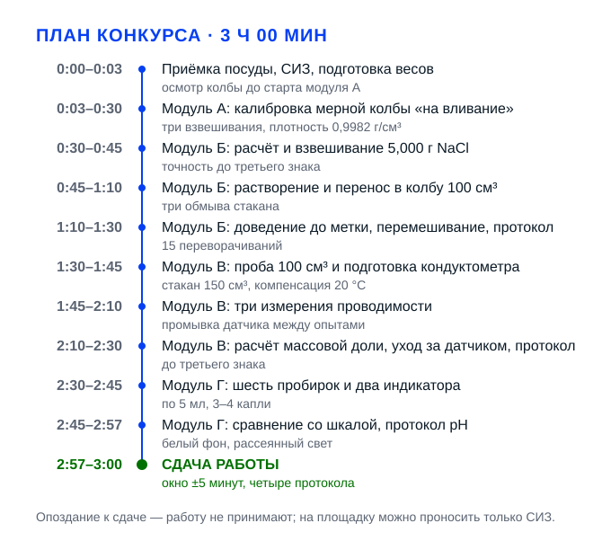
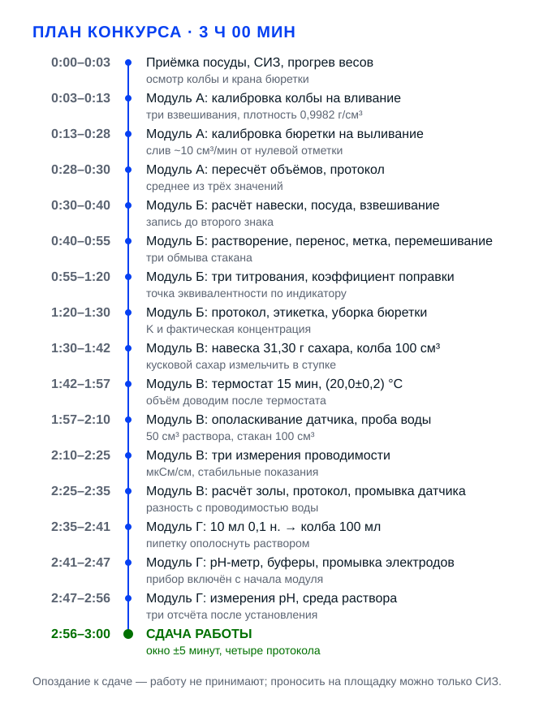
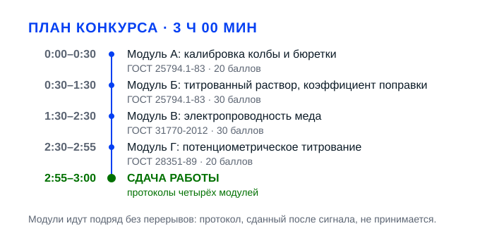

Лабораторный химический анализ (Р,О)
Задания ниже — официальные файлы «Абилимпикс» (источник: abilympics-russia.ru), разложенные по категориям. Решения написаны по тексту задания, регламенту и критериям оценки; в них указано, что именно проверяет эксперт.
Школьник
14–16 лет, базовый уровень заданияВыдержка из официального конкурсного задания: страницы, относящиеся к категории «Школьник» (стр. 6–8 источника).
Пошаговое решение
Конкурсное задание для школьников состоит из четырёх модулей и трёх часов чистого времени: тридцать минут на калибровку мерной посуды, час на приготовление раствора, час на кондуктометрическое определение хлористого натрия в минеральной воде и тридцать минут на визуальное определение рН. Каждый модуль заканчивается протоколом с результатами, а сто баллов распределены по таблице критериев: двадцать за модуль А, по тридцать за модули Б и В и двадцать за модуль Г, причём внутри каждого модуля отдельно оценивают организацию рабочего места, подготовку оборудования, технику выполнения, обработку результатов и оформление. Требования охраны труда простые, но жёсткие: халат, шапочка, закрытая обувь, очки и перчатки, а проносить на площадку что-либо, кроме средств индивидуальной защиты, запрещено. В модулях В и Г средства проверки результатов могут заменить, об этом объявляют в день С-1.

Задача 1. Откалибровать мерную колбу «на вливание»Модуль А · 20 баллов · 30 минут
Модуль А проверяет, умеет ли участник доверять посуде: сухую мерную колбу взвешивают на аналитических весах, трижды наполняют дистиллированной водой до метки, каждый раз взвешивают и по средней массе воды вычисляют фактическую вместимость по формуле Vист = V20° · m из конкурсного задания. Работа занимает всего тридцать минут, но внутри неё пять отдельных критериев — организация места на 3 балла, подготовка оборудования на 3, техника выполнения на 4, обработка результатов на 5 и оформление протокола на 5. Ошибка в любом из них видна не по грязной посуде, а по цифрам: расхождение между тремя взвешиваниями и неверно посчитанное среднее сразу читаются в протоколе.
Действие 1.1. Организовать место и принять посуду
Шаг 1.1.1
Надеваем медицинский халат поверх своей одежды и застёгиваем его на все пуговицы, волосы убираем под шапочку целиком — и спереди, и на затылке, на ноги надеваем закрытую сменную обувь. Снимаем часы, кольца и браслеты, ногти должны быть коротко подстрижены и без покрытия. Перед работой с реактивами надеваем очки и перчатки, потому что по требованиям охраны труда СИЗ используются постоянно, а не «когда брызнет».
Внешний вид и готовность к работе открывают критерий «Организация рабочего места», который в модуле А стоит 3 балла из 20. Проверяют это до старта, задним числом балл не вернуть, а халат нараспашку означает, что капля раствора попадёт на собственную одежду и участник будет думать о пятне вместо мениска. Перчатки и очки нужны ещё и потому, что в модулях Б и Г работают с концентрированными реактивами и индикаторами.
Посмотрите на себя в стеклянную дверцу шкафа или попросите волонтёра взглянуть со спины: волос не видно ни спереди, ни сзади, халат застёгнут, рукав заканчивается у запястья, обувь закрытая и сменная. Перчатки надевайте уже у своего стола, чтобы не трогать в них дверные ручки и крышки общих банок.
Самая частая ошибка — надеть шапочку на макушку, оставив затылок открытым: спереди всё аккуратно, а сзади волосы выбиваются, и 3 балла за организацию приходят неполными. Вторая — прийти в открытой обуви или в футболке, рассчитывая надеть халат позже: время уходит из модуля А, где на всё тридцать минут.
Эксперт осматривает участника до старта и отмечает в чек-листе комплектность СИЗ, а дальше следит по ходу работы, остаётся ли халат застёгнутым и надеваются ли перчатки перед каждым контактом с реактивом.
Шаг 1.1.2
Берём у эксперта мерную колбу и сначала осматриваем её, а не наливаем воду: держим на просвет против света, поворачиваем горлышком к лампе и ищем сколы на венчике, трещины в стекле и потёртости у метки. Проверяем, что метка читается, колба сухая внутри, а на стенках нет капель и разводов от прошлой работы. Если колба с притёртой пробкой, пробку ставим рядом на подставку, а не на стол кверху дном.
Критерий «Подготовка оборудования и реактивов согласно ГОСТ 25794.1-83» — ещё 3 балла из 20, и он ставится именно за осмотр посуды перед употреблением. Скол на венчике или трещина дают течь и косой мениск, то есть объём заведомо неверный, а вода в непросушенной колбе прибавляет к массе лишние десятые грамма. На аналитических весах эта прибавка видна сразу и обнуляет всю калибровку.
Колба прозрачная, без скола по кругу венчика, метка целая и хорошо видна, внутри сухо. Проведите пальцем в перчатке по кромке горлышка: зацепка означает скол, такую колбу меняем сразу, до первого взвешивания, а не после третьего.
Типичная ошибка — взять первую колбу из штатива, не глядя, и обнаружить скол после того, как три налива уже сделаны: все три результата придётся выбрасывать, а времени в модуле всего тридцать минут. Вторая — оставить в колбе капли после ополаскивания и взвесить её как сухую.
Эксперт подходит к моменту осмотра посуды и смотрит, развернул ли участник колбу против света и проверяет ли кромку; замена колбы после замечания допустима, но осмотр всё равно фиксируется в листе.
Шаг 1.1.3
Раскладываем инструмент по зонам, чтобы всё нужное бралось одной рукой: справа от весов — промывалка с дистиллированной водой и пипетка Пастера в чистом стакане, слева — фильтровальная бумага, сложенная вчетверо, и стеклянная палочка. В центре — черновик протокола, ручка и калькулятор, который по перечню оборудования участник имеет право принести с собой. Всё лишнее, включая телефон и сумку, убираем со стола.
Организация места — это те самые 3 балла, которые ставятся визуально, но экономят реальные минуты: когда пипетка и бумага под рукой, налив до метки занимает секунды. По особым указаниям конкурсного задания проносить на площадку что-либо, кроме средств индивидуальной защиты, запрещено, поэтому лишние предметы на столе — это ещё и риск объяснения с главным экспертом.
На столе шесть предметов и ни одного лишнего: весы, колба, промывалка, пипетка Пастера, фильтровальная бумага, черновик с ручкой и калькулятор. Проверьте, что промывалка полная и вода в ней дистиллированная, а не из-под крана: подпись на бутыли должна это подтверждать.
Самая частая ошибка — поставить промывалку сзади весов и тянуться через чашку: неловкое движение опрокидывает воду на весы, и прибор приходится сушить вместо работы. Вторая — налить в промывалку водопроводную воду: соли жёсткости дадут лишнюю массу и завышенный объём.
Эксперт обходит рабочие места в первые минуты модуля и оценивает расположение приборов и реактивов, а также то, нет ли на столе посторонних вещей; этот осмотр и есть основа балла за организацию.
Действие 1.2. Подготовить весы и взвесить пустую колбу
Шаг 1.2.1
Ставим аналитические весы на ровную неподвижную поверхность вдали от сквозняка и нагревательных приборов, проверяем пузырьковый уровень: пузырёк должен стоять точно в центре окружности, при необходимости подкручиваем ножки. Включаем весы и даём им выйти на рабочий режим, дожидаясь устойчивого нуля на дисплее. Затем нажимаем юстировку по внутренней гире и ждём, пока прибор сам не покажет ноль после калибровки.
Аналитические весы дают третий десятичный знак, то есть массу с точностью до тысячной грамма, и любая неточность установки превращается в ошибку объёма. Наклон корпуса или поток воздуха от двери сдвигает показания на несколько единиц последнего знака, а разъюстированные весы дают систематический сдвиг по всем трём взвешиваниям сразу. Это прямо относится к критерию подготовки оборудования на 3 балла.
Пузырёк уровня в центре, на дисплее устойчивый ноль без мигающей рамки, после юстировки прибор снова показывает ноль. Поставьте на чашку пустой бюкс и снимите его: показание должно вернуться к нулю, а не к 0,003 г.
Классика — начать взвешивание сразу после включения, не дождавшись выхода на режим: первые отсчёты «плывут» на десятые доли, и первый налив оказывается выпадающим из серии. Вторая ошибка — не проверить уровень и работать на перекошенных весах, тогда все три массы смещены в одну сторону.
Эксперт смотрит на весы в момент подготовки: уровень, включение, юстировка. Если участник взвешивает на невключённых или неюстированных весах, балл за подготовку оборудования снижается независимо от аккуратности дальнейшей работы.
Шаг 1.2.2
Открываем дверцу весов, ставим сухую колбу на чашку точно по центру, ближе к середине, и закрываем дверцу, чтобы поток воздуха не качал показание. Ждём, пока рядом с цифрами погаснет значок нестабильности, и только тогда читаем массу. Записываем её в черновик с точностью до третьего десятичного знака, не округляя и не подгоняя результат под круглое число.
Конкурсное задание требует записывать результат взвешивания в граммах с точностью до третьего десятичного знака, и именно эта цифра идёт в расчёт Vист = V20° · m. Колба объёмом 100 см³ весит порядка шестидесяти-восьмидесяти граммов, поэтому третий знак — это реальная чувствительность метода, а не формальность. Критерий «Техника выполнения задания» на 4 балла включает правильное обращение с весами.
Показание устойчивое, без мигания, колба стоит по центру чашки и не касается стенок камеры. Снимите колбу, закройте дверцу, обнулите весы и взвесьте её повторно: расхождение больше двух единиц последнего знака означает, что весы ещё не вышли на режим или в камере сквозняк.
Частая ошибка — читать массу при мигающем значке нестабильности: цифра берётся в момент колебания, и вся серия разъезжается. Вторая — держать колбу руками за дно и ставить её тёплой: рука нагревает стекло, конвекция внутри камеры сдвигает показания, и масса уезжает на сотые доли.
Эксперт наблюдает, закрывает ли участник дверцу перед отсчётом и дожидается ли стабилизации; именно по этому признаку отличают того, кто работал на весах раньше, от того, кто видит их впервые.
Шаг 1.2.3
Записываем в черновик протокола три вещи сразу, пока они не забылись: номер и номинальный объём колбы, массу пустой колбы в граммах до третьего знака и температуру воды, которой будем наполнять, — её показывают либо комнатный термометр, либо шкала кондуктометра. Форму записи делаем таблицей на три строки, чтобы каждый налив сразу ложился в свою клетку.
Критерий «Оформление полученных результатов» стоит в модуле А целых 5 баллов, и он ставится за протокол, а не за красивые движения. Температура нужна потому, что в формуле Vист = V20° · m величина V20° — это поправка, привязанная к приведению объёма к 20 °С: без записанной температуры непонятно, какую поправку брать. Таблица, заготовленная заранее, не даёт перепутать второй и третий налив.
В черновике есть номер колбы, номинал, масса пустой колбы с тремя знаками после запятой и температура помещения. Проверьте, что температура записана той же ручкой и в той же строке, что и условия опыта, а не отдельной заметкой на полях.
Ошибка новичка — записывать массу на клочке или на ладони и потом искать, какая цифра к какому наливу относится. Вторая — вообще не фиксировать температуру: тогда расчёт поправки превращается в догадку, и 5 баллов за оформление уходят вместе с 5 баллами за обработку результатов.
Эксперт может подойти и посмотреть черновик в любой момент модуля: наличие таблицы с заголовками он читает как признак того, что участник понимает, какие величины понадобятся в расчёте.
Действие 1.3. Наполнить колбу водой до метки
Шаг 1.3.1
Наливаем дистиллированную воду из промывалки в колбу примерно до двух третей объёма, держа её наклонно и направляя струю по стенке, а не в центр горлышка. Метку пока не трогаем: до неё останется сантиметр-полтора, а струя из промывалки слишком широкая, чтобы остановиться точно. Если на стенках выше уровня остались капли, их не смываем — они стекут сами и добавлять ничего не придётся.
Калибровку ведут «на вливание», то есть измеряют объём, который колба вмещает при наполнении до метки, и перелив здесь равен браку: вылить обратно и «долить заново» уже нельзя, потому что на стенках останется вода. Спокойный налив по стенке не вспенивается и не сбивает уровень, а это экономит те самые минуты, которых в модуле А всего тридцать. Температура воды тоже входит в критерий техники на 4 балла.
Уровень воды ниже метки примерно на сантиметр, на стенках нет крупных капель выше уровня, пены на поверхности нет. Если вода уже выше метки — колбу придётся вылить, вымыть и высушить, поэтому лучше недолить, чем перелить.
Самая частая ошибка — лить прямо из промывалки до метки и проскочить её на два-три миллиметра: уровень выше метки делает налив недействительным, а повтор требует сухой колбы и заново взвешенной тары. Вторая — наливать воду из-под крана: соли и хлор меняют плотность и массу.
Эксперт смотрит на характер налива: по стенке или в центр, насколько уверенно участник держит колбу и не пытается ли долить воду после проскока уровня.
Шаг 1.3.2
Доводим уровень до метки пипеткой Пастера: набираем воду, держим пипетку почти вертикально над горлышком и добавляем по одной капле, после каждой капли давая уровню успокоиться. Глаза ставим точно на уровень метки, а не смотрим сверху, и добиваемся, чтобы нижний край мениска касался верхнего края метки. Заканчиваем, когда мениск стоит на метке и добавление ещё одной капли уже поднимет его выше.
Конкурсное задание прямо предписывает устанавливать уровень прибавлением или удалением нескольких капель при помощи пипетки Пастера, и это единственный способ получить повторяемый объём. Взгляд сверху или снизу даёт параллакс: мениск кажется на метке, когда на самом деле он на миллиметр выше или ниже, а миллиметр по высоте горлышка колбы на 100 см³ — это несколько сотых кубического сантиметра, которые видны в расчёте.
Глаза на уровне метки, нижний край мениска касается верхнего края метки, лишних капель на внутренней стороне горлышка нет. Посмотрите сбоку и чуть снизу: если середина мениска ушла выше полоски, одну каплю убираем пипеткой или фильтровальной бумагой, поднесённой к горлышку.
Классическая ошибка — смотреть на метку сверху, тогда мениск читается выше, чем он есть, и участник недоливает воду. Вторая — добавить каплю «на всякий случай» и проскочить метку: удалить лишнее можно только бумагой, а она тянет за собой часть воды со стенок, и объём снова неточный.
Эксперт подходит в момент установки мениска: его интересует, на уровне ли глаз участника находится метка и работает ли он пипеткой Пастера, а не промывалкой.
Шаг 1.3.3
Прежде чем нести колбу на весы, убираем воду с наружной стороны горлышка и с внутренней его части выше метки: подносим сложенную фильтровальную бумагу к кромке и даём ей впитать капли, не касаясь воды в колбе и не проводя бумагой по стеклу. Следим, чтобы бумага не коснулась мениска, иначе она вытянет часть воды и уровень уйдёт вниз. После этого ставим колбу на стол и проверяем, что уровень остался на метке.
Каждая капля на стенке — это лишние сотые грамма в массе колбы с водой, а значит завышенный объём в расчёте. Наружная капля на горлышке при переносе вообще может сорваться на чашку весов. Эта операция входит в критерий техники выполнения на 4 балла: конкурсное задание требует осторожного наполнения и точной установки уровня, а не приблизительного «примерно до метки».
Горлышко снаружи сухое, капель на внутренней стороне выше метки нет, мениск по-прежнему на метке. Проведите бумагой ещё раз через минуту: если на ней остался мокрый след, капля была и её надо убрать до взвешивания.
Частая ошибка — тереть горлышко бумагой с нажимом: она работает как фитиль, вода поднимается по ней из колбы, и уровень падает на миллиметр. Вторая — нести колбу, держа её за горлышко пальцами: следы и тепло на стекле добавляют массу и сбивают показание.
Эксперт отмечает, убирает ли участник капли до взвешивания, и при переносе колбы смотрит, держат ли её за дно и середину, а не за горлышко. Отдельно фиксируется, касалась ли бумага мениска.
Шаг 1.3.4
Ставим колбу с водой на чашку весов тем же способом, что и пустую: по центру, закрываем дверцу, дожидаемся стабильного показания и записываем массу с точностью до третьего знака. Сразу в черновике вычитаем из неё массу пустой колбы и получаем массу воды первого налива. Записываем и её, чтобы потом не считать в уме под давлением времени. Если показание не стабилизируется, проверяем, не касается ли колба стенок камеры.
Разность результатов взвешивания колбы с водой и пустой колбы и есть масса воды — именно эта величина идёт в формулу Vист = V20° · m. Считать разность сразу нужно потому, что в конце модуля остаётся пять минут на оформление, и любая арифметика, оставленная на потом, превращается в ошибку. Обработка и анализ полученных результатов — отдельный критерий на 5 баллов, и он ставится за правильные вычисления, а не за их наличие.
Масса воды первого налива для колбы на 100 см³ лежит в районе ста граммов: если получилось девяносто или сто десять, значит либо колба не долита, либо в расчёте потеряна сотня. Проверьте вычитание на калькуляторе, а не в уме, и убедитесь, что знаки после запятой не съехали.
Типичная ошибка — перепутать местами массу пустой колбы и колбы с водой: разность получается отрицательной или огромной, и участник начинает «исправлять» цифры на бумаге вместо того, чтобы взвесить заново. Вторая — округлить массу воды до целых граммов и потерять всю точность метода.
Эксперт заглядывает в черновик после первого взвешивания: наличие разности, посчитанной сразу, он оценивает как понимание того, что именно измеряется в этом модуле.
Действие 1.4. Повторить налив трижды, посчитать и оформить протокол
Шаг 1.4.1
Сливаем воду из колбы в раковину и готовим её ко второму наливу: ополаскиваем дистиллированной водой и тщательно высушиваем — сначала стряхиваем воду, затем убираем остатки фильтровальной бумагой, при необходимости даём колбе постоять горлышком вниз на чистой бумаге. Сушим до полного исчезновения капель на стенках, потому что колба снова должна пойти на весы как «сухая».
Конкурсное задание требует повторять операцию заполнения и взвешивания три раза и брать среднее арифметическое, а значит каждый повтор начинается с той же исходной точки — сухой колбы известной массы. Если во втором наливе в колбе осталась вода, масса воды окажется завышенной, и среднее поедет вверх. Это тот же критерий техники выполнения на 4 балла, только проверяемый на второй и третьей серии.
Стенки колбы сухие, на дне нет лужицы, метка не «плывёт» от разводов. Взвесьте колбу после сушки: её масса должна совпасть с первой записью в пределах двух единиц последнего знака — если нет, сушка не закончена.
Самая частая ошибка — ополоснуть и сразу наливать заново, не просушив: остаток в десять капель даёт прибавку в полграмма, и второй налив выбивается из серии на целый кубический сантиметр. Вторая — сушить колбу над плитой или феном: горячее стекло на весах даёт дрейф показаний.
Эксперт смотрит именно на подготовку ко второму наливу: сушит ли участник колбу и взвешивает ли её перед повторным наполнением, или просто доливает воду в мокрую посуду.
Шаг 1.4.2
Проводим второй и третий наливы точно по той же схеме: вода до двух третей по стенке, уровень до метки пипеткой Пастера, удаление капель бумагой, взвешивание с закрытой дверцей и запись массы воды в свою строку таблицы. Между наливами не меняем ни температуру воды, ни положение колбы на чашке весов, чтобы условия оставались одинаковыми. Третью серию ведём тем же порядком, не ускоряясь к концу.
Три налива нужны не для красоты, а чтобы увидеть разброс: если все три массы близки, метод воспроизводим, и среднее имеет смысл. Условия повторяемости — одинаковые температура, посуда и порядок действий — прямо упомянуты в конкурсном задании для модуля В, и тот же принцип работает здесь: меняющаяся температура воды меняет её плотность, а значит и массу при том же объёме.
Три массы воды в таблице различаются не более чем на сотые доли грамма. Если какая-то строка отличается на десятые, ищите причину: недолив, капля на горлышке, мокрая колба, нестабильное показание весов.
Ошибка — налить второй раз «на глаз» быстрее, чем первый: уровень уходит выше или ниже метки, и повтор перестаёт быть повтором. Вторая — записывать второй и третий наливы одной цифрой, «как в первый раз», потому что так красивее: эксперт видит одинаковые массы и понимает, что взвешивания не делались.
Эксперт следит за одинаковостью условий во всех трёх сериях и за тем, чтобы каждая масса попадала в протокол отдельной строкой, а не одним общим числом.
Шаг 1.4.3
Считаем среднее арифметическое трёх масс воды: складываем все три значения и делим на три, оставляя в результате четыре знака после запятой, а в протокол записывая с той точностью, с которой потом пойдёт расчёт. Затем подставляем среднюю массу в формулу из конкурсного задания Vист = V20° · m, где m — средняя масса воды, а V20° — поправка на приведение к 20 °С, и получаем фактическую вместимость колбы.
Среднее арифметическое трёх значений — прямое требование методики, и оно снижает случайную ошибку каждого отдельного взвешивания. Без деления на три участник получает массу, втрое большую, и объём в триста кубических сантиметров вместо ста — ошибка, которая сразу выдаёт непонимание расчёта. Обработка и анализ результатов стоит 5 баллов и ставится именно за правильную подстановку величин с их размерностями.
Среднее лежит между наименьшей и наибольшей массой серии — если оно вышло за эти пределы, при сложении потеряна строка. Размерность результата — кубические сантиметры, а не граммы: проверьте, что в ответе для колбы на 100 см³ получилось число около ста, а не около ста тысяч.
Классика — разделить на два вместо трёх или забыть про поправку V20°, взяв её равной единице. Вторая ошибка — округлить среднее до целых до подстановки в формулу: объём уезжает на десятые, и калибровка теряет смысл, ради которого её и делали.
Эксперт проверяет расчёт по черновику и калькулятору: его интересует, взято ли среднее из трёх значений, правильная ли размерность и есть ли ссылка на поправку, а не только итоговая цифра.
Шаг 1.4.4
Оформляем протокол модуля А: пишем, что калибровали и какую колбу, указываем температуру опыта, переносим таблицу из трёх масс воды, среднее значение, фактическую вместимость и разность с номиналом. Заканчиваем выводом в одну фразу — пригодна ли колба для работы, то есть укладывается ли отклонение фактического объёма в допуск для посуды второго класса точности. Ставим дату и подпись.
Оформление результатов — 5 баллов из 20, то есть четверть модуля, и оценивают его по полноте протокола, а не по каллиграфии. Вывод о пригодности нужен потому, что калибровка проводится перед употреблением посуды: результат без суждения о том, можно ли этой колбой пользоваться, не отвечает на вопрос задания. Разность с номиналом — единственная величина, по которой эксперт за минуту видит, сходится ли работа.
В протоколе есть цель, условия, три массы, среднее, расчёт и вывод; единицы измерения подписаны у каждой колонки, цифры не противоречат черновику. Прочитайте вывод вслух: если из него непонятно, пригодна колба или нет, переписывайте.
Самая частая ошибка — сдать протокол с результатами, но без вывода: половина баллов за оформление снимается, хотя работа сделана. Вторая — переписать цифры из памяти, а не из черновика, и потерять третий знак после запятой, который в этом модуле и есть главный результат.
Эксперт читает протокол после сдачи модуля и сверяет его с черновиком; наличие вывода о пригодности посуды и подписанных единиц измерения он фиксирует отдельными строками.
Задача 2. Приготовить 5 % водный раствор хлористого натрияМодуль Б · 30 баллов · 1 час
Второй модуль — самый дорогой: тридцать баллов из ста, из них десять за технику выполнения. Нужно приготовить 5 % водный раствор NaCl, то есть взвесить навеску на аналитических весах, записать её с точностью до третьего десятичного знака, растворить соль в дистиллированной воде, количественно перенести раствор в мерную колбу, довести объём до метки и тщательно перемешать. Оценивают не только концентрацию, но и весь путь: расчёт навески, чистоту посуды, отсутствие потерь при переносе, аккуратность работы со шпателем и полноту протокола с фактическими цифрами.
Действие 2.1. Рассчитать навеску и собрать посуду
Шаг 2.1.1
Считаем навеску до того, как брать шпатель: 5 % означает, что в ста граммах раствора пять граммов соли, значит масса навески равна пяти процентам от выбранной массы раствора. Готовим сто граммов раствора: к пяти граммам соли добавляем девяносто пять граммов воды, а если считаем по объёму, доводим его до метки колбы на 100 см³. Расчёт записываем в черновик формулой с подставленными числами, а не одной итоговой цифрой.
Критерий «Обработка и анализ полученных результатов» в модуле Б стоит 6 баллов, и начинается он с расчёта: без него неизвестно, откуда взялась навеска. Разница между ста граммами раствора и ста кубическими сантиметрами принципиальна: плотность раствора больше единицы, поэтому соли нужно чуть больше пяти граммов. Записанный расчёт показывает эксперту, понимает ли участник, что делает, или повторяет заученную цифру.
В черновике стоит формула, подстановка и ответ с единицей измерения: пять целых и три нуля после запятой грамма соли и девяносто пять граммов воды для варианта со ста граммами раствора. Проверьте обратным счётом: пять разделить на сто и умножить на сто процентов должно снова дать пять процентов.
Самая частая ошибка — взвесить пять граммов соли и долить воды «до ста миллилитров», считая, что это то же самое: концентрация получается около четырёх целых восьми десятых процента, и модуль теряет баллы за технику и результат. Вторая — считать проценты от объёма воды, а не от массы раствора, и получать раствор крепче заданного.
Эксперт смотрит на черновик расчёта в начале модуля: наличие формулы с подстановкой и единицами измерения он оценивает выше, чем аккуратную, но ничем не объяснённую цифру.
Шаг 2.1.2
Проверяем реактив, а не берём первую банку с полки: читаем этикетку, убеждаемся, что это хлористый натрий, а не смесь, смотрим срок годности. Открываем банку, осматриваем содержимое — соль должна быть сыпучей, без комков и серых включений, потому что комок означает влагу, а влага меняет массу навески. Крышку кладём на стол внутренней стороной вверх, шпатель берём только за ручку и после работы сразу убираем в стакан.
Критерий «Подготовка оборудования и реактивов согласно ГОСТ 25794.1-83» — 5 баллов, и проверка реактива входит в него напрямую. Соль, набравшая влагу, весит больше, чем показывает расчёт: часть навески — это вода, и фактическая концентрация оказывается ниже заявленной. Крышка, положенная внутренней стороной на стол, заносит в банку пыль и ворс, а это загрязнение реактива.
Этикетка прочитана, срок годности в порядке, соль сыпучая и белая, комков нет. Навеска берётся шпателем, а не рукой и не ложкой из чая; банка после взятия закрыта, крышка лежит внутренней стороной вверх и не касается стола.
Классическая ошибка — брать соль из банки, стоящей открытой с прошлой смены: за час она тянет влагу из воздуха, и навеска уезжает на десятые доли. Вторая — сыпать соль обратно в банку из бюкса, если перевесил: так в реактив попадает посторонняя грязь, и банку снимают с работы.
Эксперт подходит к моменту взятия реактива: читает ли участник этикетку, закрывает ли банку, кладёт ли крышку внутренней стороной вверх и как обращается со шпателем. Эти три детали он отмечает в листе.
Шаг 2.1.3
Собираем посуду под задачу: мерную колбу на 100 см³ — проверенную по модулю А или заведомо годную, химический стакан на 100–150 см³ для растворения, стеклянную палочку с оплавленным концом, воронку с коротким носиком, промывалку с дистиллированной водой и бюкс для навески. Всю посуду ополаскиваем дистиллированной водой и ставим горлышком вниз на чистую фильтровальную бумагу, чтобы стекла вода.
Опять 5 баллов за подготовку оборудования, и здесь они ставятся за комплектность: без воронки количественный перенос не сделать, без бюкса навеску не донести до колбы, без промывалки смыть остатки соли со стенок стакана. Ополаскивание дистиллированной водой нужно потому, что водопроводная оставляет соли жёсткости, а они добавляют к навеске лишние миллиграммы.
На столе стоит всё перечисленное, посуда чистая и ополоснутая, воронка сухая и с коротким носиком, промывалка полная. Проверьте, что колба на 100 см³ — та самая, с целой меткой, и что стакан не больше колбы, иначе раствор придётся переливать дважды.
Частая ошибка — растворять прямо в мерной колбе, наливая воду на сухую соль: соль прилипает к стенкам выше метки, и смыть её оттуда, не перелив объём, почти невозможно. Вторая — взять воронку с длинным носиком, который не достаёт до горлышка: раствор льётся по стенке и разбрызгивается.
Эксперт оценивает набор посуды до начала работы: наличие стакана для растворения, воронки и промывалки он читает как понимание того, что перенос будет количественным.
Действие 2.2. Взвесить навеску на аналитических весах
Шаг 2.2.1
Проверяем весы так же, как в первом модуле: уровень по пузырьковому, устойчивый ноль, юстировка по внутренней гире, отсутствие сквозняка. Ставим на чашку пустой сухой бюкс, закрываем дверцу, дожидаемся стабилизации и обнуляем показание кнопкой тары — так весы будут показывать массу только соли. Если тара не сбрасывается в ноль, записываем массу бюкса отдельно и потом вычитаем её вручную.
Навеска пять граммов должна быть отвешена с точностью до третьего десятичного знака — это прямое требование конкурсного задания. Тара избавляет от арифметики и от ошибки в ней: масса бюкса не путается с массой соли, а на дисплее сразу видно, сколько уже насыпано. Подготовка весов входит в 5 баллов за оборудование, а работа с тарой — в 10 баллов за технику выполнения.
На дисплее после установки бюкса устойчивый ноль, значок тары светится, дверца закрыта. Снимите бюкс и поставьте обратно: показание должно вернуться к нулю, а не к массе бюкса — иначе тара не сработала.
Ошибка новичка — обнулить весы с открытой дверцей: при закрывании поток воздуха сдвигает ноль, и вся навеска уезжает на сотые доли. Вторая — забыть, что тара уже нажата, и вычесть массу бюкса ещё раз, получив навеску в минус.
Эксперт смотрит на работу с тарой: обнулены ли весы вместе с бюксом и понимает ли участник, какую именно массу он видит на дисплее — соли или соли вместе с посудой.
Шаг 2.2.2
Насыпаем соль в бюкс шпателем, небольшими порциями: сначала примерно четыре с половиной грамма, затем добавляем по крупинке, каждый раз закрывая дверцу перед отсчётом и дожидаясь стабилизации. Соль с шпателя стряхиваем легким постукиванием по ручке, а не сдуваем и не сбрасываем с высоты. Доводим массу до расчётной и записываем фактическое значение с тремя знаками после запятой.
Конкурсное задание требует взвешивать твёрдые вещества на аналитических весах и записывать результат с точностью до третьего десятичного знака; техника выполнения — 10 баллов из 30, самая крупная позиция модуля. Порционное добавление нужно потому, что убрать лишнюю соль можно только обратно в банку, а это загрязняет реактив. Записанная фактическая масса позволяет потом посчитать истинную концентрацию раствора.
На дисплее масса, отличающаяся от расчётной не более чем на пять тысячных грамма, соль лежит на дне бюкса, а не на его стенках. Запись в черновике совпадает с показанием весов до последнего знака, и рядом стоит расчётная масса для сравнения.
Типичная ошибка — сыпать соль при открытой дверце и ловить «прыгающую» цифру: часть соли при этом выносится потоком воздуха из камеры. Вторая — досыпать соль, держа шпатель над чашкой весов: крупинка падает мимо бюкса, и навеска оказывается меньше записанной.
Эксперт наблюдает сам процесс: порционность, закрытая дверца перед каждым отсчётом, отсутствие соли на чашке весов и вокруг бюкса. По этим деталям он и выставляет технику выполнения.
Шаг 2.2.3
Записываем в черновик фактическую навеску и тут же пересчитываем, какая массовая доля получится именно с ней: делим фактическую массу на сумму фактической массы соли и массы воды и умножаем на сто процентов. Считаем на калькуляторе и записываем результат с точностью до третьего знака, чтобы потом сравнить его с заданными пятью процентами. Проверку делаем сразу, пока бюкс ещё на весах.
Обработка результатов — 6 баллов, и она начинается уже здесь, а не в конце: если навеска отличается от расчётной на сотые доли, участник должен знать, что фактическая концентрация тоже отличается. Настоящий анализ всегда опирается на фактически взятые величины, а не на расчётные. Кроме того, при таком пересчёте сразу видно, уложился ли участник в допуск, или навеску нужно поправить, пока бюкс ещё на весах.
Расчёт даёт число очень близкое к пяти процентам, и разница объясняется разницей навески. Проверьте вычисление обратным действием: масса соли, делённая на массу раствора, умноженная на сто, должна вернуть вас к тому же проценту без расхождений в третьем знаке.
Частая ошибка — считать концентрацию по расчётной, а не по фактической навеске: тогда протокол выглядит красиво, но не соответствует тому, что в колбе. Вторая — округлить промежуточный результат до целых процентов и потерять разницу, ради которой пересчёт делался.
Эксперт заглядывает в черновик сразу после взвешивания: пересчёт на фактическую навеску он отмечает как признак осознанной работы с результатом. Считает ли участник на калькуляторе, а не в уме, фиксируется отдельно.
Действие 2.3. Растворить соль и довести объём до метки
Шаг 2.3.1
Переносим навеску в химический стакан, а не в мерную колбу: снимаем бюкс с весов, аккуратно ссыпаем соль через край стакана, остатки сдувать не пытаемся, а смываем их со стенок бюкса промывалкой над стаканом. Приливаем тридцать-сорок кубических сантиметров дистиллированной воды комнатной температуры и перемешиваем палочкой круговыми движениями, не касаясь ею стенок, до полного растворения.
Растворять в стакане, а не в мерной колбе, нужно потому, что при растворении соль занимает объём и раствор нагревается или охлаждается: если довести объём до метки сразу, после остывания он уйдёт вниз. Количественный перенос остатков с бюкса — требование методики: без него часть навески остаётся на стекле. Это самая весомая часть техники выполнения на 10 баллов.
В стакане прозрачный раствор без крупинок на дне и мути; при наклоне стакана на стекле не остаётся белого налёта. Пощупайте стакан: если он заметно холодный или тёплый, раствор ещё не пришёл к комнатной температуре — подождите минуту и только потом переносите.
Классическая ошибка — засыпать соль прямо в мерную колбу и там же растворять: крупинки прилипают к стенкам выше метки, и объём уже не довести честно. Вторая — выбросить бюкс, не смыв остатки: на стенках остаётся несколько десятых грамма, а это уже десятые доли процента концентрации.
Эксперт смотрит, где именно идёт растворение и смывает ли участник бюкс и палочку; потери на переносе он фиксирует как ошибку техники. Отдельно проверяется, в стакане или в колбе растворяют соль.
Шаг 2.3.2
Ставим в горлышко мерной колбы воронку с коротким носиком, носик должен заходить внутрь горлышка, а не висеть над ним. Переливаем раствор из стакана по палочке, направляя струю в центр воронки, и даём стечь полностью, не поднимая стакан высоко. Затем обмываем стакан три раза порциями по пять-десять кубических сантиметров дистиллированной воды, сливая каждую порцию в колбу через ту же воронку.
Количественный перенос — сердце приготовления раствора заданной концентрации: каждая капля, оставшаяся в стакане, это соль, которой не будет в колбе. Три порции промывной воды по пять-десять кубических сантиметров — не формальность, а привычный минимум, при котором остаток соли в стакане становится пренебрежимо малым. Здесь же теряются баллы за технику: разбрызганный раствор на столе эксперт видит сразу.
После третьей промывки стакан на просвет чистый, на стенках нет белого налёта и кристалликов. Воронка снята с горлышка до доведения объёма, а её носик обмыт над колбой двумя-тремя каплями из промывалки.
Самая частая ошибка — снять воронку, не обмыв её носик: на нём висит капля раствора, и часть соли уходит мимо колбы. Вторая — лить промывную воду в стакан и выплёскивать её в раковину, считая, что «стакан и так чистый»: концентрация стабильно занижается.
Эксперт наблюдает перенос целиком: по палочке, через воронку, с тройной промывкой. Отсутствие промывки он отмечает отдельной строкой в листе оценки и считает промывные порции вместе с участником.
Шаг 2.3.3
Снимаем воронку и доводим объём: сначала приливаем воду до уровня на сантиметр ниже метки, затем добавляем пипеткой Пастера по каплям, глаза держим на уровне метки. Добиваемся, чтобы нижний край мениска касался верхнего края метки, и в последний момент убираем каплю с внутренней стороны горлышка фильтровальной бумагой, если она там висит. Колбу при этом держим за горлышко выше метки, чтобы не нагревать раствор ладонью.
Объём — вторая половина концентрации: если воды больше, доля соли падает, и раствор перестаёт быть пятипроцентным. Приведение объёма к метке при температуре раствора, равной комнатной, дает ту самую точность, ради которой используют мерную колбу, а не стакан. Взгляд на уровне метки убирает параллакс, который на глаз даёт ошибку в десятые доли кубического сантиметра.
Мениск стоит на метке, глаза на её уровне, на внутренней стороне горлышка выше метки воды нет. Наклоните колбу к свету: полоска метки должна касаться мениска снизу, как касается линейка края листа. Метка видна целиком, без наклона колбы к лампе.
Ошибка — доливать воду с воронкой в горлышке: часть воды стекает по воронке и объём оказывается больше метки, а заметить это снизу почти невозможно. Вторая — держать колбу за широкую часть ладонью: стекло нагревается, раствор расширяется, и мениск «сам» поднимается над меткой.
Эксперт подходит в момент доведения объёма и смотрит на положение глаз участника, на работу пипеткой Пастера и на то, снята ли воронка с горлышка. Это одна из ключевых точек модуля.
Шаг 2.3.4
Закрываем колбу пробкой и перемешиваем раствор: держим пробку большим пальцем, переворачиваем колбу вверх дном и обратно десять-пятнадцать раз, каждый раз давая раствору стечь по стенкам. Не трясём колбу как бутылку и не взбалтываем у самого горлышка, чтобы раствор не попал на пробку и в пространство выше метки. После перемешивания ставим колбу на стол и даём пузырькам подняться.
Конкурсное задание прямо указывает, что приготовленные растворы тщательно перемешивают — без этого у дна остаётся более плотный слой, а сверху почти вода, и любая проба, взятая сверху, даст заниженный результат. Переворачивание лучше встряхивания: оно перемешивает весь объём и не смачивает пробку, с которой капли стекают в колбу. Перемешивание — часть техники выполнения на 10 баллов.
После перемешивания раствор однородный на вид, без слоёв и завихрений, на стенках выше метки нет капель. Дайте колбе постоять минуту: если на дне появился осадок или муть, соль не растворилась полностью или вода была грязной.
Частая ошибка — перемешать два-три раза и считать, что этого достаточно: у дна остаётся слой плотнее, и результат анализа уезжает вниз. Вторая — трясти колбу, зажав горлышко ладонью без пробки: раствор выплёскивается, объём уменьшается, а руки оказываются в соли.
Эксперт считает переворачивания и смотрит, держится ли пробка; вялое перемешивание он отмечает как нарушение техники, даже если объём доведён идеально.
Действие 2.4. Проверить раствор, посчитать концентрацию и оформить протокол
Шаг 2.4.1
Проверяем приготовленный раствор по внешним признакам и по положению мениска: смотрим колбу на просвет против белого фона и убеждаемся, что раствор прозрачный, без мути, осадка и взвешенных частиц. Затем проверяем, что уровень после перемешивания остался на метке, а на стенках выше метки нет капель раствора. Если капли есть, их снимают фильтровальной бумагой, не касаясь содержимого.
Прозрачность — единственный доступный участнику признак того, что соль растворилась полностью и реактив был чистым; мутный раствор с осадком означает, что фактическая концентрация ниже расчётной. Контроль уровня после перемешивания нужен потому, что часть раствора могла остаться на пробке и стенках, а часть — испариться, если колба долго стояла открытой. Эти проверки входят в подготовку и технику.
Раствор прозрачный, мениск на метке, стенки выше метки сухие, на дне ничего не осело. Сфотографируйте для себя картину: прозрачная колба на белом фоне с чёткой меткой — это то состояние, которое должно быть на момент сдачи.
Ошибка — не смотреть на раствор вообще: мутность от плохо вымытой колбы остаётся незамеченной до протокола, а потом объяснить её уже нельзя. Вторая — снимать капли со стенок бумагой, опуская её глубоко в горлышко: бумага касается раствора и вытягивает его часть.
Эксперт осматривает готовый раствор при обходе: прозрачность, положение мениска и сухие стенки он проверяет визуально, не открывая колбу и не встряхивая её.
Шаг 2.4.2
Считаем фактическую массовую долю соли в приготовленном растворе по своим цифрам: делим фактическую навеску на фактическую массу раствора — сумму навески и массы добавленной воды, включая промывные порции, — и умножаем на сто процентов. Вычисления ведём до третьего десятичного знака, каждое действие записываем в черновик, чтобы потом перенести в протокол без потерь.
Критерий «Обработка и анализ полученных результатов» — 6 баллов, и он ставится за правильную арифметику с фактическими величинами и верными размерностями. Учёт промывных порций отличает честный расчёт от формального: если их не учесть, масса раствора окажется меньше реальной, а концентрация — выше. Третий знак после запятой показывает, действительно ли раствор пятипроцентный.
Результат близок к пяти процентам, расчёт сходится при проверке обратным действием, у всех величин подписаны единицы. Сложите массу соли и массу воды — должна получиться масса раствора, указанная в знаменателе, без расхождений.
Самая частая ошибка — делить навеску на объём воды в кубических сантиметрах и получать проценты «на глаз»: это разные величины, и результат оказывается неверным на десятые доли. Вторая — забыть промывные порции в знаменателе, из-за чего концентрация завышается.
Эксперт сверяет расчёт с черновиком: правильность знаменателя и наличие размерностей он проверяет в первую очередь, потому что именно здесь чаще всего теряются баллы за обработку.
Шаг 2.4.3
Оформляем протокол модуля Б: записываем задание, массу фактической навески с тремя знаками, объём колбы, массу воды с промывными порциями, расчёт массовой доли и её результат. Добавляем вывод: соответствует ли приготовленный раствор заданным пяти процентам и с каким отклонением. Ставим дату, подпись и передаём протокол эксперту вместе с закрытой колбой, подписав её номером.
Оформление результатов в этом модуле стоит 4 балла, и оно оценивается по полноте и однозначности: эксперт должен из протокола понять, что именно было приготовлено и с какой точностью. Вывод с отклонением нужен потому, что это и есть ответ на вопрос задания — приготовлен раствор заданной концентрации или нет. Подписанная колба исключает путаницу при проверке: эксперт соотносит протокол с конкретной посудой.
В протоколе есть все числа с единицами, расчёт и вывод, номер колбы совпадает с надписью на посуде, подпись и дата на месте. Прочитайте протокол как чужой документ: если из него нельзя восстановить ход работы, добавьте недостающее.
Типичная ошибка — сдать колбу без номера и протокол без вывода: эксперт не может связать результат с работой, и баллы за оформление снимаются почти полностью. Вторая — записать концентрацию как «5 %» без расчёта, хотя фактическая навеска отличалась от расчётной.
Эксперт принимает протокол и колбу вместе и сверяет номер; полноту протокола он оценивает по наличию расчёта, результата с точностью до третьего знака и вывода о соответствии заданию.
Задача 3. Определить массовую долю NaCl в минеральной воде кондуктометромМодуль В · 30 баллов · 1 час
Третий модуль построен вокруг прибора: в стакан на 150 см³ наливают не менее 100 см³ анализируемой питьевой минеральной воды, погружают датчик кондуктометра так, чтобы все отверстия электрода оказались в растворе, и измеряют удельную электрическую проводимость в режиме автоматической температурной компенсации. Затем три измерения в условиях повторяемости, среднее значение, пересчёт в массовую долю хлористого натрия до третьего десятичного знака и протокол. Тридцать баллов, из них десять за технику: именно здесь видно, умеет ли участник обращаться с прибором и не путает ли проводимость с концентрацией.
Действие 3.1. Подготовить пробу и прибор
Шаг 3.1.1
Берём стакан вместимостью 150 см³, ополаскиваем его трижды небольшими порциями анализируемой воды — по десять-пятнадцать кубических сантиметров, каждый раз обмывая стенки круговым движением и сливая в раковину. Затем наливаем не менее 100 см³ той же воды, держа бутыль так, чтобы осадок со дна не попал в стакан, и ставим стакан на ровную светлую поверхность вдали от края стола.
По методике конкурсного задания в стакан на 150 см³ наливают не менее 100 см³ воды — этого объёма достаточно, чтобы датчик был погружён полностью и при этом не касался дна. Ополаскивание нужно потому, что даже несколько капель дистиллированной воды от прошлого опыта снижают проводимость пробы, а это прямо занижает результат. Критерий «Организация рабочего места» даёт за это 5 баллов из 30.
В стакане не менее 100 см³, стенки смочены анализируемой водой, на поверхности нет плёнки и пузырей. Поставьте стакан на белый лист: стол должен быть чистым, а рядом не должно быть бутылей с другими жидкостями, чтобы не перепутать пробы.
Частая ошибка — налить шестьдесят-семьдесят кубических сантиметров «чтобы быстрее»: датчик частично выходит из раствора, и прибор показывает проводимость воздуха над водой. Вторая — ополоснуть стакан водопроводной водой: её соли добавляют к проводимости пробы заметную величину, и результат оказывается завышенным.
Эксперт смотрит на объём в стакане и на то, чем ополаскивали посуду; плёнка на поверхности и капли посторонней жидкости в стакане читаются как нарушение подготовки.
Шаг 3.1.2
Доводим пробу до комнатной температуры, если она стояла в холодильнике или у окна: переливаем воду в стакан заранее, за десять-пятнадцать минут до измерения, и оставляем открытой, но не под прямым солнцем. Температуру измеряем и записываем — либо комнатным термометром рядом со стаканом, либо по шкале прибора. Ручками не греть и не охлаждать стакан, не ставить его на подоконник и на батарею.
Конкурсное задание требует измерять проводимость в режиме автоматической температурной компенсации; для приборов без такой компенсации измерения проводят при температуре в пределах двадцати плюс-минус пяти градусов. Даже с компенсацией резкий перепад температур даёт ошибку, потому что она рассчитана на небольшой диапазон. Записанная температура нужна и для протокола, и для проверки результата.
Температура пробы совпадает с комнатной и записана в черновик, стакан не потеет снаружи, на стенках нет конденсата. Если стакан запотел — вода холоднее воздуха, дайте ей постоять ещё несколько минут. Конденсат на стекле всегда означает, что тепловое равновесие не наступило.
Ошибка — измерять сразу, как только налили воду из холодильника: показания уезжают на десятки процентов, а участник ищет причину в приборе. Вторая — подогревать стакан руками, «чтобы быстрее согрелось»: неравномерный нагрев даёт дрейф показаний прямо во время отсчёта.
Эксперт обращает внимание, измеряет ли участник температуру и ждёт ли выравнивания; конденсат на стакане он считает признаком того, что проба не подготовлена.
Шаг 3.1.3
Включаем кондуктометр и даём ему выйти на режим, как указано в паспорте прибора: обычно достаточно дождаться устойчивых нулей или последнего показания на дисплее. Проверяем датчик: платиновые пластины чистые, без налёта и жировой плёнки, корпус без трещин. Ополаскиваем датчик дистиллированной водой и обсушиваем фильтровальной бумагой — промакиваем, а не трём, и не касаемся пальцами рабочей части электрода.
Плёнка или налёт на пластинах меняет площадь электродов и занижает проводимость, а капля дистиллированной воды на датчике разбавляет первую пробу. Подготовка оборудования и реактивов — 5 баллов: сюда входят и чистота датчика, и проверка режима измерения. Протирание вместо промакивания царапает платину и оставляет на ней ворсинки, которые потом дают плавающие показания.
Пластины датчика блестящие и чистые, бумага после промакивания не оставила ворса, дисплей показывает устойчивое значение в режиме измерения. Пролистайте меню и убедитесь, что включена автоматическая температурная компенсация, а единицы — микросименсы на сантиметр.
Самая частая ошибка — взять датчик за пластины и оставить на них жир с пальцев: проводимость падает, и участник списывает это на «плохую воду». Вторая — не проверить режим компенсации и мерить без неё, тогда все три значения зависят от температуры в комнате, а не от пробы.
Эксперт наблюдает подготовку прибора: как берут датчик, чем обсушивают, проверен ли режим температурной компенсации. Это ключевые строки в оценке техники.
Действие 3.2. Погрузить датчик и снять показания
Шаг 3.2.1
Погружаем датчик в стакан почти вертикально, вдоль стенки, опуская его до тех пор, пока все отверстия электрода не окажутся под водой, но не ниже чем на сантиметр от дна. Следим, чтобы датчик не касался стенок и дна стакана, а провод не тянул его в сторону. Держим рукой за верхнюю часть корпуса, не за рабочую зону, и не двигаем датчик во время отсчёта.
Конкурсное задание требует следить, чтобы в раствор были погружены все отверстия электрода: если часть отверстий над водой, прибор измеряет не раствор, а его поверхность, и показания оказываются заниженными. Касание дна и стенок меняет геометрию поля между пластинами и даёт ложное значение. Техника выполнения в этом модуле стоит 10 баллов — половину всех баллов модуля.
Все отверстия датчика под водой, между кончиком и дном виден просвет, стенки стакана не касаются корпуса. Посмотрите сбоку на уровне жидкости: граница воды должна быть выше верхнего отверстия на несколько миллиметров.
Типичная ошибка — опустить датчик до дна и упереть: поле искажается, а на пластинах оседает осадок, и результат уезжает вверх. Вторая — держать датчик на весу у самой поверхности: часть отверстий оказывается над водой, а участник этого не видит сверху.
Эксперт проверяет глубину погружения и положение датчика относительно стенок; при правильном погружении он фиксирует это в листе как выполненный пункт техники.
Шаг 3.2.2
Покачиваем датчик в растворе два-три раза, чтобы с пластин сошли пузырьки воздуха, и оставляем его неподвижно. Нажимаем измерение и ждём стабилизации: показание должно перестать меняться в пределах последнего знака и держаться так десять-пятнадцать секунд. Считываем значение удельной электрической проводимости в микросименсах на сантиметр и записываем его в черновик, не округляя до целых.
Пузырёк на пластине снижает рабочую площадь электрода, и прибор показывает заниженную проводимость — самая частая причина выпадающего значения в серии. Ожидание стабилизации нужно потому, что прибор выходит на равновесие постепенно, и первая цифра на дисплее всегда завышена или занижена. Записанное значение в единицах измерения потребуется при расчёте и в протоколе, где оформление стоит 4 балла.
Показание стоит неподвижно десять-пятнадцать секунд, на пластинах при взгляде сбоку нет пузырьков, единицы измерения на дисплее — микросименсы на сантиметр. Записанное значение совпадает с дисплеем до последней цифры.
Самая частая ошибка — снять первое же число, появившееся на экране: оно завышено на несколько процентов, и участник потом не понимает, почему среднее не сходится с расчётом. Вторая — записывать значение без единиц, а потом подставлять в формулу число, которое на самом деле было в других единицах.
Эксперт смотрит на паузу перед отсчётом: тот, кто снимает показание сразу, теряет баллы за технику, даже если итоговый результат случайно попал в допуск.
Шаг 3.2.3
Вынимаем датчик из раствора, ополаскиваем его дистиллированной водой над отдельным стаканом, промакиваем фильтровальной бумагой и только после этого погружаем снова в ту же пробу для второго измерения. Стакан с пробой не трогаем и не переставляем, воду не доливаем, датчик держим в одном и том же положении по глубине. Всего делаем три измерения подряд, записывая каждое отдельной строкой.
Конкурсное задание предписывает три измерения в условиях повторяемости, а повторяемость означает одинаковые условия: та же проба, та же температура, то же положение датчика. Промывка между измерениями нужна, чтобы на пластинах не оставалось плёнки от предыдущего погружения, хотя проба одна и та же. Три значения дают возможность проверить разброс и отбросить измерение с пузырьком, если оно выбилось.
Три значения записаны отдельными строками, различаются они в пределах сотых долей миллисименса. Если одно выбивается на десятые, повторите измерение после промывки датчика и отметьте в черновике, что это был повтор.
Ошибка — не промывать датчик между измерениями: на пластинах остаётся плёнка, и второе значение выходит ниже первого. Вторая — переливать пробу в другой стакан между измерениями: другое стекло, другой объём, другая температура, и повторяемость теряется.
Эксперт следит за серией: три измерения с промывкой между ними он оценивает как правильную технику, а три разных значения, полученных в разных условиях, — нет.
Действие 3.3. Обработать результаты измерений
Шаг 3.3.1
Проверяем серию на сходимость: сравниваем три записанных значения между собой и находим наибольшее расхождение. Если оно не превышает сотых долей единицы, серия годная и можно считать среднее. Если одно значение выбивается на десятые, ищем причину — пузырёк на пластинах, плёнка, капля дистиллированной воды, колебание температуры — и повторяем это измерение, отметив причину в черновике.
Обработка и анализ результатов — 6 баллов, и анализ начинается с проверки серии, а не с арифметики. Среднее по трём значениям, одно из которых испорчено пузырьком, смещает результат и делает бессмысленной точность до третьего знака. Умение объяснить выпадающее значение отличает лаборанта от человека, который просто складывает цифры и делит на три.
Расхождение между значениями объяснено и записано, при необходимости сделано повторное измерение. В черновике видно, какие три значения пошли в расчёт, и нет ли среди них зачёркнутого без объяснения. Если все три числа совпали до последней цифры, проверьте, не переписали ли вы одно и то же значение трижды.
Частая ошибка — механически сложить все значения, включая явно испорченное, и получить красивое, но неверное среднее. Вторая — выбрасывать неудобное значение без объяснения: эксперт видит зачёркнутую цифру и снижает балл за обработку, потому что основания не записаны.
Эксперт смотрит на черновик: есть ли пометки о причинах повтора и понимает ли участник, почему одно измерение отличается от других. Отсутствие пометок он читает как отсутствие анализа.
Шаг 3.3.2
Считаем среднее арифметическое трёх значений удельной электрической проводимости: складываем их и делим на три, промежуточный результат оставляем с четырьмя знаками после запятой, чтобы не потерять точность до округления. Записываем среднее в протокол отдельной строкой и рядом указываем единицы измерения — микросименсы на сантиметр. Дальше работаем только со средним, отдельные значения остаются в таблице как основание.
Методика прямо предписывает принимать за окончательный результат среднеарифметическое трёх измерений, выполненных в условиях повторяемости, поэтому среднее — это и есть результат анализа. Промежуточные знаки сохраняют потому, что дальше идёт пересчёт в массовую долю, и округление на этом шаге съедает точность третьего знака в конечном ответе. Среднее и единицы измерения — обязательные строки протокола.
Среднее лежит между наименьшим и наибольшим значением серии, единицы подписаны, число знаков после запятой не меньше, чем в исходных данных. Пересчитайте сумму на калькуляторе второй раз, чтобы исключить опечатку.
Ошибка — разделить на два или на четыре вместо трёх: результат смещается на треть, и дальше весь расчёт идёт неверно. Вторая — округлить среднее до целых до пересчёта в концентрацию: на третьем знаке итоговой массовой доли это видно сразу.
Эксперт проверяет среднее по черновику: правильность деления на три и подписанные единицы он отмечает как выполненный пункт обработки результатов. Деление на два или на четыре заметно сразу по величине.
Шаг 3.3.3
Пересчитываем среднюю удельную электрическую проводимость в массовую долю хлористого натрия по формуле из конкурсного задания, подставляя значение в микросименсах на сантиметр и коэффициент перехода, указанный в методике или в градуировочной таблице прибора. Вычисления ведём до третьего десятичного знака, каждое действие записываем, а результат выражаем в процентах и подписываем единицу.
Конкурсное задание требует вычислять массовую долю хлористого натрия в процентах и проводить вычисления до третьего десятичного знака — то есть точность результата задана методикой, а не выбирается участником. Пересчёт через градуировочную зависимость нужен потому, что прибор измеряет проводимость, а не концентрацию: без перехода число остаётся просто числом. Это ядро критерия обработки результатов на 6 баллов.
Результат выражен в процентах, имеет три знака после запятой и лежит в разумном для минеральной воды диапазоне — десятые доли процента, а не десятки. Проверьте подстановку обратным счётом: если разделить массовую долю на коэффициент, должна получиться средняя проводимость.
Самая частая ошибка — выдать за массовую долю саму проводимость, забыв про пересчёт: получается число в сотни раз больше реального, и модуль теряет баллы за обработку целиком. Вторая — перепутать микро- и миллисименсы, что даёт ошибку в тысячу раз.
Эксперт смотрит на формулу и подстановку: наличие перехода от проводимости к массовой доле и правильные единицы он проверяет до того, как посмотрит на итоговое число.
Действие 3.4. Оформить протокол и привести прибор в порядок
Шаг 3.4.1
Заполняем протокол модуля В: название пробы и её объём, температура, режим измерения с автоматической температурной компенсацией, три значения проводимости с единицами, среднее, формула пересчёта и массовая доля в процентах до третьего знака. Вывод формулируем одной фразой — какова массовая доля хлористого натрия в исследованной воде. Ставим дату и подпись.
Оформление результатов — 4 балла, и здесь оценивают не почерк, а полноту и однозначность: эксперт должен увидеть весь путь от пробы до процентов. Записанный режим компенсации нужен потому, что без него нельзя судить, корректны ли измерения при данной температуре. Вывод в конце — это ответ на задание, без него протокол остаётся набором цифр.
В протоколе есть объём пробы, температура, режим, три значения, среднее, расчёт и вывод; у всех чисел подписаны единицы, у результата — проценты. Сверьте протокол с черновиком: цифры должны совпадать до последнего знака, а не «примерно».
Типичная ошибка — записать только итоговые проценты, без трёх измерений и среднего: баллы за оформление снимаются, потому что результат невозможно проверить. Вторая — не указывать режим компенсации, тогда эксперт не может оценить, учтена ли температура.
Эксперт читает протокол после модуля и сверяет его с показаниями прибора, если они сохранились; полнота строк — основа балла за оформление. Отсутствие единиц измерения отмечается отдельной строкой.
Шаг 3.4.2
Выключаем кондуктометр в порядке, указанном в паспорте, вынимаем датчик из пробы, промываем его дистиллированной водой над стаканом для слива и обсушиваем фильтровальной бумагой. Ставим датчик в держатель или в стакан с дистиллированной водой, если так предписано инструкцией, и не оставляем его лежать на столе. Пробу сливаем, стакан ополаскиваем и переворачиваем на бумагу.
Конкурсное задание прямо предписывает после измерений выключить прибор, промыть датчик дистиллированной водой и обсушить фильтровальной бумагой — это обязательная операция модуля, а не уборка «по желанию». Оставленная на пластинах соль кристаллизуется и портит электрод, а прибор, оставленный включённым, ловит помехи и сажает батарею. Эти действия входят в критерий организации рабочего места на 5 баллов.
Прибор выключен, датчик промыт и обсушен, проба слита, стакан вымыт и стоит горлышком вниз, на столе нет капель. Проверьте, что провод датчика не перекручен и не свисает с края стола. Мокрый датчик в держателе — это капля воды на пластинах к следующему измерению.
Частая ошибка — вынуть датчик и положить его на стол, не промыв: соль высыхает на пластинах коркой, и следующий участник получает заниженные показания. Вторая — оставить прибор включённым и уйти сдавать протокол: это фиксируется как нарушение порядка работы с оборудованием.
Эксперт смотрит на завершение модуля: промыт ли датчик, выключен ли прибор, убрана ли проба. Аккуратность финальных действий он оценивает отдельно от самих измерений.
Шаг 3.4.3
Сдаём рабочее место и протокол: относим протокол эксперту, показываем прибор в выключенном состоянии и чистый датчик, называем номер своего рабочего места. Если по ходу модуля что-то не сработало — датчик дал непонятное значение, прибор не выходил на режим, — говорим об этом коротко и по делу, а не молчим до сдачи. Сдавайте модуль за минуту до конца окна.
Сдача работы — формальная, но оцениваемая часть: порядок на месте и выключенное оборудование входят в баллы за организацию, а честно названная проблема даёт шанс на повторное измерение. По разделу о вариативной части средства проверки достоверности в модуле В могут быть изменены, об этом узнают в день С-1. Молчание о сбое приборов лишает участника возможности исправить результат.
Протокол в руках у эксперта, прибор выключен, датчик чистый, стол убран, о проблемах сказано. Убедитесь, что эксперт принял протокол и отметил время сдачи — это подтверждение, что модуль закрыт. Время должно быть в пределах модуля.
Ошибка — уйти со своего места, оставив включённый прибор и грязную посуду: баллы за организацию снимаются уже после того, как все измерения сделаны правильно. Вторая — промолчать о том, что прибор выдавал скачущие значения, и сдать заведомо сомнительный результат.
Эксперт принимает протокол и осматривает место; если оборудование выключено и посуда убрана, организационная часть модуля закрывается без потерь. Замечание о сбое прибора он фиксирует отдельно.
Задача 4. Определить рН раствора визуальным методомМодуль Г · 20 баллов · 30 минут
Последний модуль короткий, но требует дисциплины: шесть пробирок, две разные индикаторные системы и сравнение окраски с контрольной шкалой на белом фоне. В три пробирки наливают примерно по 5 мл раствора и добавляют три-четыре капли метилового красного, в другие три — столько же универсального индикатора, каждую пробу перемешивают стеклянной палочкой. Двадцать баллов распределены так: 5 за организацию места, 10 за технику и 5 за обработку, анализ и оформление результата. Ошибки здесь не ломают прибор, они ломают цвет: лишняя капля индикатора или жёлтая лампа над столом, и окраску уже не с чем сравнивать.
Действие 4.1. Подготовить пробирки и раствор
Шаг 4.1.1
Отбираем шесть пробирок одинакового диаметра и высоты и ставим их в штатив по порядку номеров: первые три — под метиловый красный, вторые три — под универсальный индикатор. Осматриваем каждую на просвет: стекло без скола на венчике, внутри нет капель и разводов от прошлой работы. Подписываем номера маркером по стеклу выше уровня жидкости или наклеиваем бирки, чтобы не путать серии.
Конкурсное задание требует подготовить шесть пробирок для исследования раствора, и три из них идут под один индикатор, три — под другой. Одинаковый диаметр важен потому, что окраску сравнивают с контрольной шкалой на глаз: в узкой пробирке слой тоньше, и цвет читается бледнее. Нумерация нужна, чтобы в протоколе было видно, где какая проба. Всё это входит в 5 баллов за организацию рабочего места.
Шесть пробирок в штативе, номера видны и не смываются, все пробирки чистые и сухие, диаметр одинаковый. Проверьте, что маркер не попал на ту часть стекла, через которую будете смотреть окраску. Поставьте пробирки в ряд: венчики должны стоять на одной высоте.
Самая частая ошибка — брать пробирки из разных наборов: разный диаметр стекла даёт разный оттенок при одинаковом рН, и сравнение с шкалой становится неверным. Вторая — не подписывать пробирки и потом гадать, где метиловый красный, а где универсальный индикатор.
Эксперт смотрит на штатив в начале модуля: шесть пронумерованных пробирок одного типа — это первый пункт организации, который он отмечает. Разнокалиберные пробирки он считает ошибкой подготовки.
Шаг 4.1.2
Ополаскиваем каждую пробирку анализируемым раствором два-три раза малыми порциями: наливаем два-три кубических сантиметра, обмываем стенки круговым движением и сливаем в стакан для слива. Раствор берём из общей ёмкости, а не из первой пробирки, чтобы не переносить индикатор из одной пробы в другую. После ополаскивания держим пробирки горлышком вниз над сливом, пока не стекут остатки.
Ополаскивание раствором — прямое требование методики: остатки дистиллированной воды от мытья разбавляют пробу и сдвигают рН в сторону нейтрального, а для слабокислых и слабощелочных растворов это меняет окраску на полступени шкалы. Трёхкратное ополаскивание оставляет на стенках именно тот раствор, который исследуют. Это часть техники выполнения на 10 баллов из 20, то есть половина модуля.
После ополаскивания в пробирке нет капель воды, стенки смочены анализируемым раствором. Проверьте, что слив не переполнен и пробирки не стоят в нём: грязная посуда вернёт загрязнение в пробу. Смочена должна быть вся внутренняя поверхность, а не только дно.
Ошибка — ополоснуть один раз и налить пробу: остаток воды сдвигает рН, а на слабом растворе это видно по цвету. Вторая — ополаскивать все шесть пробирок одной порцией раствора в стакане: в стакан попадают остатки предыдущей пробы, и вся серия получается смешанной.
Эксперт наблюдает, ополаскивает ли участник пробирки раствором и сливает ли промывные порции; однократное ополаскивание он отмечает как отклонение от методики.
Шаг 4.1.3
Наливаем в каждую пробирку примерно по 5 кубических сантиметров раствора: держим пробирку наклонно, а пипетку или цилиндр — вертикально, не касаясь стенок и не опуская кончик в жидкость. Уровень во всех шести пробирках делаем одинаковым, сверяя его на глаз по одной линии в штативе. Пятую часть объёма оставляем свободной, чтобы при перемешивании палочкой раствор не выходил через край.
Методика задаёт примерно 5 мл раствора в каждой пробирке, и одинаковый объём нужен потому, что от него зависит интенсивность окраски: при вдвое большем объёме те же три-четыре капли дают более бледный цвет. Свободное место над жидкостью — практическая необходимость, иначе палочка вытесняет раствор и он стекает по стеклу. Ровный уровень — визуальный признак аккуратной работы, который эксперт видит при обходе.
Во всех шести пробирках одинаковый уровень около 5 см³, на стенках выше жидкости нет капель, штатив стоит устойчиво и не на краю стола. Сравните уровни, поставив пробирки в ряд: разница больше двух-трёх миллиметров уже заметна.
Частая ошибка — налить до самого верха «чтобы лучше было видно»: палочка вытесняет раствор, и часть пробы оказывается на столе. Вторая — наливать пипеткой, касаясь стенки, тогда часть раствора остаётся на стекле, а объёмы в пробирках получаются разными.
Эксперт проверяет одинаковость объёмов и чистоту стенок; ровный уровень в шести пробирках он читает как признак того, что участник понимает роль объёма в визуальном методе.
Действие 4.2. Внести индикаторы и перемешать
Шаг 4.2.1
В пробирки с первого по третий номер добавляем по три-четыре капли раствора метилового красного: держим пипетку вертикально над горлышком, не касаясь раствора и стенок, и считаем капли вслух или про себя, чтобы во всех трёх пробирках их было одинаково. Капаем в центр, а не на стенку, чтобы индикатор сразу попал в объём. Пипетку с метиловым красным после работы сразу убираем на место, не оставляя её лежать в штативе рядом с другой.
Конкурсное задание задаёт три-четыре капли метилового красного, и одинаковое число капель во всех трёх пробирках — условие сопоставимости: лишняя капля усиливает окраску, и она перестаёт соответствовать шкале. Пипетка, опущенная в раствор, переносит туда реактив с наружной стенки и загрязняет пробу. Аккуратность дозирования — основная часть техники выполнения на 10 баллов, самой дорогой позиции модуля.
В трёх пробирках одинаковое число капель, индикатор распределился по объёму, а не остался на стенке, пипетка не касалась раствора. Поставьте пробирки рядом: количество индикатора должно быть на глаз неразличимым.
Типичная ошибка — капать «примерно» и в одну пробирку добавить шесть капель: цвет становится гуще, и сравнение с шкалой даёт завышенный рН. Вторая — опустить пипетку в раствор: индикатор с кончика переходит в пробу, а раствор из пробирки попадает в пипетку и портит реактив.
Эксперт смотрит на дозирование: считает ли участник капли, держит ли пипетку вертикально над горлышком и не касается ли жидкости и стенок. Лишняя капля для него ошибка техники.
Шаг 4.2.2
В пробирки с четвёртого по шестой номер добавляем по три-четыре капли универсального индикатора тем же способом: пипетка вертикально, капли в центр, число капель то же, что и в первой серии. Не смешиваем пипетки и не набираем универсальный индикатор той же пипеткой, которой только что работали с метиловым красным. Универсальный индикатор даёт широкую гамму, поэтому его передозировка сдвигает цвет особенно сильно.
Вторая серия нужна, чтобы проверить результат независимым индикатором: метиловый красный работает в узком интервале и хорошо различает слабокислые растворы, универсальный показывает всю шкалу, и совпадение выводов по двум индикаторам и есть достоверность визуального метода. Смешение индикаторов в одной пипетке даёт цвет, которого нет ни на одной шкале. Обработка и анализ стоят в модуле 5 баллов.
Вторая серия из трёх пробирок с одинаковым числом капель, пипетки не перепутаны, на кончиках нет смешанных капель. Проверьте по цвету: в четвёртой-шестой пробирках окраска обычно отличается от первой серии, и это нормально, потому что индикаторы разные.
Ошибка — набрать универсальный индикатор пипеткой из-под метилового красного: в пипетке остаётся старая капля, и цвет получается грязным, а результат недостоверным. Вторая — добавить во вторую серию по пять-шесть капель: универсальный индикатор при избытке даёт тёмный оттенок, который не сопоставить со шкалой.
Эксперт проверяет, пользуется ли участник отдельными пипетками и сохраняет ли одинаковое число капель во второй серии; смешение индикаторов он отмечает как грубую ошибку техники.
Шаг 4.2.3
Перемешиваем содержимое каждой пробирки стеклянной палочкой: опускаем палочку до дна и делаем три-четыре круговых движения, не вынимая её из жидкости, затем аккуратно вынимаем, давая раствору стечь по стенке. Между пробирками палочку ополаскиваем дистиллированной водой и промакиваем фильтровальной бумагой либо берём отдельную палочку на каждую серию. Не встряхиваем пробирку и не закрываем её пальцем.
Конкурсное задание предписывает перемешать раствор стеклянной палочкой: индикатор должен распределиться по всему объёму, иначе у дна цвет гуще, а у поверхности бледнее, и сравнение с шкалой превращается в угадывание. Ополаскивание палочки между пробирками не даёт переносить индикатор из одной пробы в другую, что особенно важно между сериями с разными индикаторами. Перемешивание — часть техники на 10 баллов.
Окраска во всей пробирке равномерная, без тёмных завихрений у дна и светлых полос у поверхности, на стенках выше жидкости нет капель раствора. Посмотрите пробирку на просвет: цвет должен быть одинаковым по всей высоте.
Самая частая ошибка — поболтать пробиркой, закрыв горлышко пальцем: индикатор остаётся на коже, а часть пробы теряется, и объём меняется. Вторая — мешать одной палочкой всю серию без ополаскивания: окраска постепенно густеет от пробирки к пробирке.
Эксперт наблюдает перемешивание: круговые движения палочкой в растворе и ополаскивание между пробирками он оценивает как правильную технику, встряхивание — как нарушение.
Действие 4.3. Сравнить окраску с контрольной шкалой
Шаг 4.3.1
Ставим пробирки на белый фон: подкладываем под штатив лист белой бумаги или используем белый экран, который есть на площадке. Смотрим при рассеянном дневном свете, не под прямые солнечные лучи и не под жёлтой лампой накаливания, и держим пробирку так, чтобы свет проходил через раствор, а не отражался от стекла. Сравниваем по одной пробирке за раз, ставя её рядом с выбранным участком шкалы.
Методика прямо требует наблюдать окраску раствора на белом фоне: любой цветной фон искажает восприятие оттенка, а жёлтый свет лампы сдвигает зелёные и красные тона. Просвечивание лучше отражения, потому что окраска в тонком слое читается точнее. Условия наблюдения входят в технику на 10 баллов: правильная проба при плохом освещении даёт неверный результат.
Под штативом белый лист, свет рассеянный, тени от пробирок мягкие, на стекле нет бликов от лампы. Если блик мешает, сдвиньте штатив на десять-пятнадцать сантиметров или поверните его, а не наклоняйте пробирку к глазу.
Типичная ошибка — смотреть окраску, подняв пробирку к лампе: тёплый свет добавляет жёлтизну, и кислый раствор кажется менее кислым. Вторая — сравнивать на цветном столе или на фоне халата: оттенок меняется на полступени шкалы.
Эксперт смотрит, на каком фоне и при каком свете участник сравнивает окраску; отсутствие белого фона он отмечает как нарушение условий визуального метода.
Шаг 4.3.2
Сравниваем окраску каждой пробирки с контрольной шкалой и выбираем ближайший по характеру окраски образец: ведём взглядом по шкале от красного к синему, останавливаясь на участке, совпадающем с пробой. Записываем номер образца и соответствующее ему значение рН для первой серии с метиловым красным и для второй серии с универсальным индикатором. Не округляем до целых, если шкала даёт десятые доли.
Конкурсное задание требует выбирать ближайший по характеру окраски образец шкалы, и именно эта операция определяет результат: визуальный метод не измеряет рН, а сравнивает цвет. Метиловый красный переходит от красного к жёлтому примерно в интервале от 4,4 до 6,2, а универсальный индикатор даёт более широкую картину. Записанные значения по двум индикаторам и есть материал для 5 баллов за анализ.
У каждой пробирки записан конкретный образец шкалы и значение рН, а не общее «кислая среда». Сверьте выбор: если оттенок лежит между двумя образцами, записывайте промежуточное значение и отмечайте это в черновике.
Частая ошибка — подбирать образец по памяти о том, какой рН «должен быть» у минеральной воды, и не замечать, что окраска другая. Вторая — записывать только один индикатор, считая второй лишним: без второй серии нельзя проверить результат, и балл за анализ снижается.
Эксперт подходит в момент сравнения и смотрит, ведёт ли участник взглядом по шкале или сразу показывает на образец; обоснованность выбора он проверяет по записи в черновике.
Шаг 4.3.3
Сверяем результаты двух индикаторов между собой и определяем среду раствора: сопоставляем значение рН по метиловому красному с интервалом, который он различает, и значение по универсальному индикатору, а затем формулируем вывод — кислая, нейтральная или щелочная среда. Если данные расходятся больше чем на полступени, ищем причину: разное число капель, плохо перемешано, загрязнённая палочка, неверно выбранный образец.
Два индикатора в методике нужны именно для взаимной проверки: метиловый красный даёт узкий интервал и высокую чувствительность в нём, универсальный показывает общее положение на шкале. Согласованный вывод по двум сериям — это и есть контроль достоверности визуального метода, который стоит 5 баллов в критерии обработки, анализа и оформления. Расхождение — сигнал об ошибке в работе, а не повод выбрать «удобный» результат.
Значения двух индикаторов не противоречат друг другу, вывод о среде сформулирован однозначно, причина расхождения (если она была) записана. Проверьте логику: кислая среда означает рН меньше семи, и окраска метилового красного при этом красная, а не жёлтая.
Ошибка — оставить два разных значения без объяснения и написать вывод «примерно нейтральная»: эксперт видит, что контроль не выполнен, и снимает баллы за анализ. Вторая — подогнать вторую серию под первую, вписав в протокол не то, что видел.
Эксперт читает вывод и сопоставляет его с записями по двум индикаторам; умение объяснить расхождение он ценит выше, чем идеально совпадающие цифры без обоснования.
Действие 4.4. Оформить протокол и сдать рабочее место
Шаг 4.4.1
Заполняем протокол модуля Г: номер пробирки, какой индикатор добавлен, сколько капель, наблюдаемая окраска словами — красная, оранжевая, жёлтая, розовая, — выбранный образец шкалы и значение рН. Записываем обе серии отдельными блоками, чтобы было видно, что первая и вторая сделаны независимо. Указываем условия наблюдения: белый фон и рассеянный свет.
Оформление результата в этом модуле объединено с обработкой и анализом в одну позицию на 5 баллов, поэтому протокол должен быть читаемым с одного взгляда. Словесное описание окраски нужно потому, что «рН 5,4» без указания цвета невозможно проверить: эксперт видит, соответствуют ли друг другу оттенок и цифра. Условия наблюдения показывают, что участник понимает, от чего зависит достоверность метода.
В протоколе два блока по три пробирки, у каждой указан индикатор, число капель, окраска и значение рН; вывод о среде сформулирован отдельной строкой. Прочитайте записи и представьте по ним цвет: если описание допускает два разных оттенка, уточните формулировку.
Типичная ошибка — записать только значение рН, без окраски и числа капель: проверить такой протокол нельзя, и балл за оформление снижается. Вторая — свести обе серии в одну строку, потеряв раздельность двух определений.
Эксперт оценивает протокол по полноте строк: описание окраски, выбранный образец шкалы и итоговый вывод он проверяет по отдельности. Протокол без описания окраски считается неполным.
Шаг 4.4.2
Формулируем вывод одной фразой: указываем, какой раствор исследован, какое значение рН получено и какая среда ему соответствует. Если значения по двум индикаторам дали интервал, приводим его, а не одно число, и объясняем, почему интервал. Подписываем протокол и ставим время окончания модуля. Вывод пишем так, чтобы он читался отдельно от таблицы и без пояснений.
Вывод — это ответ на задание, и без него протокол остаётся набором наблюдений; в критерии обработки и оформления он отдельная строка. Интервал вместо одного числа нужен там, где шкала не даёт более точного отсчёта: визуальный метод по определению приблизительный, и честно указанный интервал ценится выше ложной точности до сотых. Время окончания показывает, уложился ли участник в тридцать минут модуля.
Вывод содержит раствор, значение или интервал рН и название среды, не повторяет расчёт и не содержит лишних рассуждений. Прочитайте его отдельно от протокола: он должен быть понятен сам по себе. Два разных значения рН без объяснения — повод переписать.
Частая ошибка — написать «рН нейтральный» без числа и без указания среды: это не ответ на задание. Вторая — выдать «рН 7,00» по универсальному индикатору, который различает только целые ступени, и потерять балл за необоснованную точность.
Эксперт читает вывод в первую очередь: соответствие заявленной точности возможностям метода — один из признаков, по которому он отличает осмысленную работу от формальной.
Шаг 4.4.3
Убираем рабочее место: сливаем содержимое пробирок в стакан для слива, промываем пробирки водопроводной водой, затем ополаскиваем дистиллированной и ставим в штатив горлышком вниз. Стеклянные палочки промываем и убираем, пипетки возвращаем на место, фильтровальную бумагу и использованные салфетки выбрасываем, стол протираем насухо. Сдаём протокол эксперту и показываем чистое рабочее место.
Организация рабочего места стоит в этом модуле 5 баллов, и её оценивают в том числе по состоянию стола после работы. Остатки индикаторов в пробирках нельзя оставлять: они окрашивают стекло, и следующая смена получит посуду с цветным налётом. Сдача протокола вместе с убранным местом закрывает модуль целиком, а не только его измерительную часть.
Пробирки вымыты и стоят в штативе горлышком вниз, палочки и пипетки на местах, стол сухой и чистый, протокол у эксперта. Пройдите по столу взглядом: на нём не должно остаться ни одной капли раствора и ни одного пятна индикатора.
Ошибка — оставить пробирки с раствором в штативе и уйти сдавать протокол: посуда окрашивается, а баллы за организацию снимаются уже после того, как измерения сделаны правильно. Вторая — протереть стол влажной тряпкой и не вытереть насухо, оставив разводы от индикатора.
Эксперт осматривает место после сдачи: чистые пробирки в штативе и сухой стол он отмечает как выполненную организационную часть модуля, а протокол оценивает отдельно по полноте.
Студент
учащиеся колледжей и техникумовВыдержка из официального конкурсного задания: страницы, относящиеся к категории «Студент» (стр. 6–10 источника).
Пошаговое решение
Задание для студентов — четыре модуля на три часа, каждый заканчивается протоколом с результатами: калибровка мерной посуды по ГОСТ 25794.1-83 (30 минут), приготовление раствора с определением коэффициента поправки (1 час), кондуктометрическое определение золы в сахаре по ГОСТ 12574-2016 (1 час) и разбавление щёлочи с потенциометрическим измерением pH (30 минут). Здесь калибруется не только колба «на вливание», но и бюретка «на выливание», а раствор нужно не просто приготовить, но и подтвердить титрованием. Модули связаны: колба из первого нужна во втором, раствор из второго идёт в четвёртый, а приборы требуют прогрева и промытого датчика. Нормативными документами пользоваться разрешено, проносить что-либо кроме средств индивидуальной защиты — запрещено. Главные риски не в химии, а в рутине: мениск на уровне глаз, температура (20,0±0,2) °C и промывка электродов между измерениями.

Задача 1. Откалибровать мерную посуду: колбу на вливание, бюретку на выливаниеМодуль А · 30 минут · протокол с результатами
Калибровка — это проверка того, сколько воды на самом деле вмещает посуда, на которой написано «100 см³». По ГОСТ 25794.1-83 мерные колбы калибруют «на вливание», а бюретки «на выливание», и разница здесь не формальная: в колбе вода остаётся, поэтому взвешивают колбу с водой, а из бюретки вода вытекает, поэтому взвешивают то, что стекло в стаканчик. У студентов модуль шире, чем у школьников: кроме колбы нужно откалибровать бюретку по всем интервалам от нулевой отметки, а слив вести со скоростью около 10 см³ в минуту, иначе на стенках останется разное количество воды и результаты разойдутся. Результат модуля — протокол с тремя параллельными значениями, средним арифметическим и фактической вместимостью посуды.
Действие 1.1. Организовать место, принять посуду и подготовить весы
Шаг 1.1.1
Начинаем с осмотра, а не с работы: достаём мерную колбу на 100 см³, держим её за горло против света и ищем скол на венчике, трещину у метки и потёки на внутренней стенке. Бюретку берём двумя руками, поднимаем до уровня глаз и проверяем кран: не подтекает ли он в закрытом положении, цела ли шайба, читаются ли деления — они идут через 0,1 см³. Кран с засохшей смазкой поворачивается рывками, и тогда слив «около 10 см³ в минуту» превращается в случайные порции по два-три кубика.
Модуль А длится 30 минут из трёх часов конкурса, и его результат — протокол, который эксперт читает и сверяет с расчётом. Колба со сколом на венчике не держит уровень: вода подсасывается по трещине, и все три взвешивания уходят в брак. Замена посуды после старта идёт только через главного эксперта, а время модуля при этом не останавливается, поэтому осмотр экономит не секунды, а весь модуль целиком.
Колба прозрачная, метка читается без наклона, сколов и трещин нет. Кран бюретки закрывается плотно, при повороте не хрустит, капля под ним не висит. Деления видны от нуля до кончика, кончик не отломан. Если нашли дефект — поднимаем руку и говорим эксперту до первого взвешивания, а не после третьего.
Самая частая ошибка — начать калибровку с треснувшей у метки колбой: вода уходит по трещине, три результата расходятся на десятые доли грамма, и участник списывает это на весы, теряя время на повторные опыты. Вторая ошибка — взять бюретку с затёртыми делениями и потом не суметь объяснить, между какими отметками сливали воду.
Эксперт обходит рабочие места в первые минуты модуля и смотрит, осмотрел ли участник посуду до начала работы, надеты ли защитные очки и перчатки. Работа без очков считается нарушением техники безопасности отдельно от результата калибровки.
Шаг 1.1.2
Расставляем всё по одной линии слева направо в порядке операций: колба, промывалка с дистиллированной водой, пипетка Пастера, стаканчик для взвешивания, бюретка в штативе. Аналитические весы проверяем по уровню — пузырёк должен стоять в центре круга, — включаем и даём прогреться пять минут, пока раскладываем остальное. Рядом кладём фильтровальную бумагу и чистое полотенце: ими будем обсушивать кончик бюретки и стаканчик.
Весы с дискретностью 0,1 мг ловят вибрацию и сквозняк, а неотстоявшийся датчик даёт уплывающий ноль: два взвешивания одной и той же колбы разойдутся, и калибровка потеряет смысл. Пять минут прогрева — это именно то время, за которое прибор выходит на рабочий режим, и тратить его нужно параллельно с раскладкой, а не сидеть перед весами. Порядок на столе входит в культуру лабораторной работы, которую эксперт отмечает отдельно от цифр в протоколе.
Пузырёк уровня в центре, дверца камеры закрывается без заеданий, на дисплее стоят нули. Всё нужное лежит в пределах вытянутой руки, и ни один предмет не приходится переставлять через другой. Если весы стоят на проходе или у самой промывалки — переставьте их до начала взвешивания, а не после.
Взвешивать на непрогретых весах и потом удивляться, что третье значение выбивается из первых двух: ноль уходит в первые минуты, и расхождение получается не химическим, а приборным. Вторая ошибка — поставить весы рядом с раковиной: брызги на чашке и на кожухе дают сдвиг на десятые доли грамма.
Эксперт смотрит на организацию места: ровно ли стоят весы, есть ли под рукой промывалка и пипетка, не лежит ли на столе лишнее. Отдельно отмечается, включает ли участник весы заранее, до первого взвешивания.
Шаг 1.1.3
Набираем дистиллированную воду в промывалку и измеряем её температуру термометром, опустив его в стакан с водой на минуту. Показание записываем в протокол рядом с датой и номером посуды: вода при 18 °C и вода при 24 °C имеют разную плотность, и без записи температуры расчёт вместимости не проверить. Воду берём именно дистиллированную, а не из-под крана.
Плотность воды при 20 °C равна 0,9982 г/см³, а при 24 °C — уже 0,9973: разница в сотых процента даёт на ста миллилитрах около 0,09 г, что сопоставимо с расхождением между параллельными опытами. Поэтому масса и температура идут в протоколе парой, иначе результат калибровки невозможно ни проверить, ни защитить перед экспертом. Дистиллированная вода нужна потому, что соли жёсткости увеличивают массу раствора и дают завышенный объём.
Термометр показывает значение в пределах 15–25 °C, вода прозрачная, без осадка, промывалка подписана. Запись в протоколе содержит три вещи: температуру, дату и что именно калибруется. Если температура в комнате сильно отличается от 20 °C, это отмечаем в протоколе одной строкой.
Калибровать водопроводной водой: на стенках остаётся солевой налёт, масса растёт, а вместе с ней «растёт» и объём колбы. Вторая ошибка — не записать температуру и потом считать по плотности 1,000 г/см³, то есть по сути принимать воду за идеальную жидкость.
Эксперт проверяет протокол на наличие температуры и понимание того, зачем она нужна. На вопрос «почему вы взяли эту плотность» должен быть ответ про температуру воды, а не про табличное значение из памяти.
Действие 1.2. Откалибровать мерную колбу на вливание
Шаг 1.2.1
Сухую колбу ставим на аналитические весы и взвешиваем вместе с притёртой пробкой — пробку потом не меняем, иначе масса «пустой» колбы окажется массой другой пробки. Перед этим убеждаемся, что колба действительно сухая: капли на дне весят десятые доли грамма, а это уже несколько процентов от ста миллилитров. Дверцу камеры открываем плавно, колбу ставим по центру чашки, не касаясь стенок, и ждём, пока индикатор перестанет бежать.
Калибровка «на вливание» строится на разнице двух масс, поэтому первое взвешивание — половина результата: ошибка в нём целиком перейдёт в итог и не будет видна. Пробка входит в массу потому, что при втором взвешивании колба закрыта ею, иначе часть воды испарится, пока вы несёте колбу от стола к весам. Сухость важнее аккуратности: одна капля на дне — это лишние 0,05 см³, которых в колбе быть не должно.
Показания стоят две-три секунды, ноль не сбит, дверца закрыта. Записанное число совпадает с тем, что на экране, а не с тем, что вы ожидали увидеть. Если два взвешивания одной и той же сухой колбы расходятся больше чем на 0,005 г, весы стоят неровно или колба не досушена.
Ловить «красивое» число и переписывать результат до тех пор, пока он не станет похож на паспортную массу: это подгонка, и эксперт видит её по слишком ровным цифрам. Вторая ошибка — взвесить колбу с каплей воды внутри и потом получить вместимость на десятые доли больше паспортной, объясняя это «погрешностью стекла».
Эксперт смотрит, закрыта ли камера весов при отсчёте и записывается ли масса сразу, а не по памяти. Отдельно фиксируется, держат ли колбу за горло и не трогают ли пальцами венчик, на котором стоит метка.
Шаг 1.2.2
Наполняем колбу дистиллированной водой примерно на два сантиметра ниже метки, а последние капли добавляем пипеткой Пастера, держа колбу так, чтобы метка оказалась на уровне глаз. Мениск должен касаться метки нижним краем — не середина кольца и не верхняя кромка, а именно низ. Каждую каплю добавляем и снова смотрим; если перелили, воду сливаем и начинаем заново, потому что убрать лишнее «на глаз» нельзя.
Объём в мерной посуде отсчитывают по нижнему краю мениска, и это не условность: мениск в узком горле колбы даёт слой около миллиметра, то есть примерно 0,05 см³, а на трёх опытах разница складывается в заметную величину. Глаз должен быть на уровне метки, иначе из-за параллакса вы увидите метку выше или ниже, чем она есть. Пипетка Пастера нужна потому, что из промывалки капля идёт слишком крупной.
Нижний край мениска совпадает с меткой при взгляде строго сбоку, на уровне глаз. На стенках над меткой нет капель, вода не перелита. Наклонитесь к колбе, а не поднимайте её к лицу: колба в руках на весу всегда даёт другой отсчёт.
Доливать воду из промывалки струёй и попадать «примерно в метку»: три опыта дают разброс в 0,1–0,2 см³, среднее считается, но фактическая вместимость оказывается завышенной. Вторая ошибка — отсчитывать по верхнему краю мениска и получать систематическую ошибку, которая повторится во всех трёх опытах.
Эксперт подходит в момент доведения до метки: видно, наклоняется ли участник к уровню глаз и пользуется ли пипеткой. Отсчёт «сверху вниз» на вытянутой руке он замечает сразу.
Шаг 1.2.3
Закрываем колбу пробкой и взвешиваем, стараясь не вытирать горло и не стряхивать капли с внутренних стенок. Разницу масс записываем в таблицу как массу воды, затем повторяем весь цикл ещё дважды: налить до метки, взвесить, слить, досушить. Итого три пары взвешиваний и три значения массы воды, из которых берём среднее арифметическое. Если после слива на дне колбы остались капли, колбу не вытирают изнутри: её сушат вверх дном на решётке, иначе ворсинки попадут в следующий опыт.
По ГОСТ 25794.1-83 операцию заполнения и взвешивания повторяют три раза и берут среднеарифметическое — именно три параллельных опыта показывают, умеет ли участник работать воспроизводимо. Одно значение можно случайно получить удачным, три одинаковых значения подделать нельзя. Среднее арифметическое идёт в протокол как окончательный результат модуля.
Три значения массы воды отличаются друг от друга не больше чем на 0,02–0,03 г, то есть на 0,02–0,03 см³. Разница масс положительная и близка к ста граммам: если получилось 60 или 140, вы ошиблись в записи или взвесили не ту колбу. Столбцы «масса пустой» и «масса с водой» подписаны.
Сделать один опыт и записать его как среднее из трёх: расхождение видно по «слишком ровной» таблице, и баллы за протокол снимаются. Вторая ошибка — вытирать горло колбы полотенцем между взвешиваниями: часть воды снимается, и результат каждый раз новый.
Эксперт сверяет число строк в таблице с числом фактически выполненных опытов и смотрит на разброс значений. Три результата, отличающиеся на сотые доли грамма, он читает как признак аккуратной работы.
Действие 1.3. Откалибровать бюретку на выливание
Шаг 1.3.1
Закрепляем бюретку в штативе строго вертикально — по отвесу или по стойке штатива, а не «на глазок». Сначала заполняем водой нижний оттянутый конец, то есть носик выше крана: наклоняем бюретку, опускаем кончик в стакан с водой и даём воде зайти снизу, выгоняя воздух. Затем наливаем воду выше нулевой отметки через верх и слегка приоткрываем кран, чтобы пузырёк вышел из-под шайбы.
Бюретку калибруют «на выливание», поэтому в ней не должно остаться воздуха: пузырёк под краном занимает объём, который потом не сольётся, и первый же интервал даст заниженный результат. Вертикальность нужна потому, что при наклоне вода стекает по стенке быстрее, чем по центру, и смачивание меняется. Носик заполняют снизу, иначе воздух в оттянутом конце остаётся и выдавливается уже во время слива.
Бюретка стоит ровно, вода выше нуля, под краном и в оттянутом конце нет пузырьков. Кран поворачивается плавно, вода не подтекает при закрытом положении. Если пузырёк не выходит, несколько раз резко приоткройте кран — это быстрее, чем разбирать.
Налить воду только сверху, забыв про носик: первые два кубика сливаются вместе с воздухом, и калибровка первого интервала уезжает на 0,1–0,2 см³. Вторая ошибка — закрепить бюретку с наклоном: мениск встаёт косо, и отсчёт нуля получается смещённым.
Эксперт смотрит на штатив и на пузырьки в носике: это тот признак, по которому сразу видно, калибровали ли бюретку раньше или делают это впервые. Если пузырёк остался, эксперт просит показать, как участник его выгоняет.
Шаг 1.3.2
Устанавливаем уровень на нулевом делении так, чтобы нижний край мениска касался нулевой отметки, и снимаем висящую на кончике каплю, прикоснувшись к носику стенкой стаканчика. Под бюретку ставим предварительно взвешенный стаканчик для взвешивания или коническую колбу. Открываем кран и сливаем заданный объём со скоростью около 10 см³ в минуту — это примерно три капли в секунду, считая про себя.
Время слива задано в задании не для строгости: при быстром сливе на стенках остаётся плёнка воды, которая не успевает стечь, и объём получается заниженным. Десять кубиков в минуту — это скорость, при которой стекание успевает произойти, а работа ещё укладывается в тридцать минут модуля. Висящая капля на кончике — прямой прибавок к массе, до 0,05 г, и снимать её нужно до взвешивания, а не после.
Слив идёт ровной струйкой без рывков, кран держится в одном положении, после закрытия на носике не висит капля. Уровень в бюретке опускается плавно. Секундомер или счёт про себя показывает, что десять кубиков уходят примерно за минуту.
Открыть кран полностью «чтобы быстрее»: струя бьёт в стенку, часть воды разбрызгивается, и масса выходит меньше истинной. Вторая ошибка — снять каплю о край стаканчика после взвешивания, а не до: тогда она останется на носике и не попадёт в результат.
Эксперт следит за скоростью слива и за тем, снимает ли участник каплю. Струя, льющаяся полным потоком, читается как непонимание того, зачем в задании указана скорость.
Шаг 1.3.3
После слива закрываем кран, ждём полминуты, пока вода стечёт со стенок, и взвешиваем стаканчик. По разности результатов взвешиваний находим массу воды, отмеренной в бюретке между делениями при данной температуре. Калибровку повторяем для каждого интервала, начиная от нулевой отметки, и каждую операцию слива со взвешиванием проводим трижды, беря среднеарифметическое трёх значений.
Калибровка от нуля для каждого интервала нужна потому, что ошибка бюретки не равномерна: у крана она одна, у верхних отметок другая. Три слива на интервал дают ту же защиту от случайности, что и три взвешивания колбы. Тридцать минут модуля хватает ровно на такой объём работы, если не возвращаться к уже сделанному.
Масса воды на каждом интервале растёт пропорционально объёму: десять кубиков — около десяти граммов, двадцать — около двадцати. Три значения на одном интервале расходятся не больше чем на 0,02–0,03 г. Все интервалы подписаны в таблице: от нуля до 10, до 20, до 25 см³.
Калибровать только один интервал и распространять его на всю бюретку: в протоколе не хватает строк, и модуль закрыт частично. Вторая ошибка — взвешивать стаканчик мокрым от предыдущего слива: каждая следующая масса оказывается завышенной.
Эксперт сверяет, все ли интервалы от нуля пройдены, и смотрит на пропорциональность масс объёмам. Строка, выпадающая из пропорции, для него сигнал, что опыт не повторяли.
Действие 1.4. Пересчитать объёмы и оформить протокол модуля А
Шаг 1.4.1
Переводим массу воды в объём: делим среднюю массу на плотность воды при той температуре, которую записали в начале модуля, — при 20 °C это 0,9982 г/см³. Для колбы получаем фактическую вместимость «на вливание», для бюретки — фактический объём каждого интервала «на выливание». Считаем на черновике столбиком или на калькуляторе, но каждую цифру переписываем в протокол вместе с единицами измерения.
Без пересчёта массы в объём калибровка остаётся набором граммов, которые эксперту ничего не говорят. Именно объём при 20 °C и есть результат модуля: по нему потом судят, можно ли пользоваться этой посудой в количественном анализе. Плотность берут по фактической температуре, потому что иначе пересчёт даёт ошибку, сопоставимую с самой поправкой.
Вместимость колбы получилась в пределах 99,7–100,3 см³, объём интервала бюретки — в пределах 9,97–10,03 см³. Единицы проставлены везде, округление до второго или третьего знака после запятой одинаковое по всей таблице. Проверьте обратным счётом: объём, умноженный на плотность, должен дать исходную массу.
Разделить на единицу вместо плотности — тогда объём численно равен массе, и ошибка в 0,2% остаётся незамеченной, хотя она есть. Вторая ошибка — перепутать направления: для колбы взять массу воды, а для бюретки массу стаканчика с водой, забыв вычесть пустой.
Эксперт проверяет расчёт целиком, а не только итоговое число: подставлена ли плотность, верно ли вычтена масса пустой посуды, совпадают ли единицы. Ошибка в формуле видна ему раньше, чем ошибка в цифре.
Шаг 1.4.2
Считаем среднее арифметическое трёх значений и оцениваем сходимость: вычитаем из наибольшего наименьшее и смотрим, укладывается ли разброс в допустимые сотые. Если одно значение явно выпадает, проверяем по нему запись и расчёт, а не выбрасываем молча: выбросить можно только с объяснением причины, которое тоже пишется в протокол. Среднее считаем после того, как все три значения уже записаны в таблицу, а не по ходу: иначе рука невольно тянется округлить в нужную сторону.
Сходимость трёх параллельных опытов — это и есть измеримая оценка качества работы, которую эксперт проверяет в первую очередь. Слишком маленький разброс (сотые доли в третьем знаке при ручном взвешивании) выглядит подозрительно, слишком большой — говорит о нарушении техники слива или недосушенной посуде. Среднее без оценки разброса — половина результата.
Разброс по колбе не больше 0,03 см³, по каждому интервалу бюретки — не больше 0,03 см³. Среднее лежит между крайними значениями, а не рядом с одним из них. Если разброс больше, в таблице есть строка с объяснением, что именно повторяли.
Оставить в таблице одно значение и написать «среднее» по нему: эксперт считает строки и видит несоответствие. Вторая ошибка — отбросить выпавшее значение без повторного опыта, хотя времени на один дополнительный слив в модуле хватает.
Эксперт считает разброс сам, по вашим же цифрам. Ровные значения с разбросом в тысячные доли при взвешивании на аналитических весах он воспринимает как признак того, что опыт не повторяли.
Шаг 1.4.3
Оформляем протокол модуля А: сверху название работы и номер посуды, ниже таблица с температурой воды, тремя массами и средним, справа — расчёт вместимости с подстановкой чисел. В конце строка вывода: «фактическая вместимость колбы 100,12 см³, бюретки на интервале 0–10 см³ — 9,98 см³». Подпись и время окончания модуля ставим сразу, а не в конце конкурса.
Результат каждого модуля — протокол с результатами, и оценивают именно его: без оформления работа существует только в вашей голове. Вывод одной строкой нужен потому, что эксперт читает протокол быстро и ищет в нём ответ, а не таблицу. Время окончания модуля дисциплинирует: по нему видно, уложились ли вы в тридцать минут.
В протоколе есть название, номер посуды, температура, все три значения, среднее, расчёт и вывод. Ничего не записано карандашом «на потом», исправления сделаны одной чертой с подписью. Протокол лежит на столе лицевой стороной вверх.
Оставить таблицу без вывода и надеяться, что эксперт досчитает сам: вывод — отдельный пункт, и без него модуль закрыт не полностью. Вторая ошибка — заштриховать неверную цифру или замазать её корректором: исправление должно быть видно.
Эксперт читает протокол после модуля и смотрит на три вещи: есть ли вывод, сходятся ли единицы и не переписаны ли цифры после того, как он подошёл к столу.
Задача 2. Приготовить раствор и определить коэффициент поправкиМодуль Б · 1 час · протокол с результатами
Модуль Б — самый длинный в задании: час на то, чтобы рассчитать навеску, взвесить её, растворить, количественно перенести в мерную колбу, довести объём до метки и определить коэффициент поправки титрованием по установочному веществу. По ГОСТ 25794.1-83 для студентов масса навески записывается с точностью до второго десятичного знака, концентрированные растворы отмеряют пипеткой по ГОСТ 29227 или бюреткой по ГОСТ 29251 с ценой деления 0,1 см³, а большие объёмы — цилиндром и на весах ВЛКТ-1000. Готовый раствор должен иметь не только заданную концентрацию, но и подтверждённый коэффициент поправки, потому что фактическая концентрация почти никогда не совпадает с расчётной.
Действие 2.1. Рассчитать навеску и выбрать посуду
Шаг 2.1.1
Считаем навеску на черновике: для 0,1 моль/дм³ гидроксида натрия в колбе на 250 см³ масса равна молярной массе эквивалента 40,00 г/моль, умноженной на 0,1 и на 0,25 дм³, то есть 1,000 г. Учитываем, что реактив не сухой и содержит около 96% основного вещества, поэтому навеска выходит примерно 1,04 г. Расчёт записываем полностью, с формулой, подстановкой и единицами, до того как подойти к весам.
При точности взвешивания до второго знака погрешность навески в 1,00 г составляет около 1%, и это как раз тот случай, когда расчётная концентрация не совпадает с фактической — именно поэтому в задании и требуется коэффициент поправки. Если расчёт не записан до взвешивания, участник начинает подгонять цифры под нужный результат и теряет время модуля на пересчёт задним числом.
На черновике есть формула, подстановка и ответ с единицами измерения, и результат лежит в пределах 1,00–1,05 г. Почерк читается вами же через двадцать минут. Если получилось 4 г или 10 г, проверьте, не перепутаны ли дм³ и см³.
Считать «на калькуляторе в голове» и прийти к весам без числа: потом навеска подбирается на глаз, а в протоколе появляется цифра, которая ни с чем не сходится. Вторая ошибка — не учесть содержание основного вещества и взять теорию за факт.
Эксперт смотрит на черновик до начала взвешивания: есть ли там расчёт и понимает ли участник разницу между заданной и фактической концентрацией. Это первый пункт протокола модуля Б.
Шаг 2.1.2
Подбираем посуду под каждую операцию: навеску берём в стакан на 100 см³, растворяем в нём же, переносим в мерную колбу на 250 см³, доводим объём до метки. Концентрированные растворы отмеряем пипеткой по ГОСТ 29227 или бюреткой по ГОСТ 29251 с ценой деления 0,1 см³, для больших объёмов берём цилиндр. Каждую единицу посуды ополаскиваем дистиллированной водой по три раза малыми порциями.
Пипетка и бюретка заданы в задании с ценой деления 0,1 см³ не случайно: при отмере «на глаз» по стакану ошибка доходит до 2 см³, что на стомиллилитровом объёме даёт два процента. Ополаскивание нужно потому, что в вымытой водопроводной водой посуде остаются соли жёсткости: они попадут в раствор и изменят и концентрацию, и результат титрования.
Посуда чистая, без капель прежнего раствора, подписана или стоит на своём месте. Пипетка не имеет скола на кончике, из бюретки не подтекает. Мерная колба используется только для доведения объёма, растворение идёт в стакане.
Растворять навеску прямо в мерной колбе: щёлочь греется, колба нагревается, и после остывания объём уже не тот. Вторая ошибка — отмерять концентрированный раствор стаканом, где деление нанесено через 10 см³.
Эксперт оценивает, выбрана ли посуда по назначению. Мерная колба с растворяющейся навеской на дне — типичная картина, за которую снимают баллы за технику работы.
Шаг 2.1.3
Смотрим, есть ли на столе стандарт-титры, то есть фиксаналы в ампулах. Если есть и время модуля поджимает, берём ампулу: вскрываем над воронкой, количественно переносим содержимое в мерную колбу и доводим объём до метки — раствор с известной точной концентрацией готов без взвешивания. Если фиксанала нет, идём обычным путём через навеску и не тратим время на поиск.
В задании фиксаналы прямо допущены как способ приготовления, и это разумный выбор, когда час модуля нужно распределить между приготовлением и титрованием. Однако коэффициент поправки всё равно определяют, потому что он подтверждает пригодность раствора. Тратить же десять минут на поиск ампулы, которой нет, — потеря времени из середины модуля.
Ампула целая, раствор в ней прозрачный, без осадка, маркировка читается. После переноса в колбе нет осколков стекла. Если вы выбрали фиксанал, в протоколе это записано отдельной строкой с номером серии.
Вскрыть ампулу не над воронкой: часть раствора уходит на стол, и концентрация выходит ниже заявленной. Вторая ошибка — промыть ампулу водой «для полноты» и перелить объём: колба переполнена, раствор испорчен.
Эксперт смотрит, обоснован ли выбор: если фиксанал взят при наличии времени, это нормально, но участник должен объяснить, почему не готовил раствор из навески.
Действие 2.2. Взвесить навеску и приготовить раствор
Шаг 2.2.1
Ставим на весы сухой чистый стаканчик или часовое стекло, обнуляем показания и набираем навеску шпателем или ложечкой небольшими порциями, подсыпая у самого края. Результат записываем в граммах с точностью до второго десятичного знака, как требует задание для категории «Студенты». Щёлочь берём сухой ложечкой, не касаясь её руками и не наклоняясь над стаканчиком.
Точность второго знака для студентов задана в самом конкурсном задании, и запись «1,0000 г» при такой точности — уже формальная ошибка протокола. Навеска щёлочи на открытом воздухе быстро тянет влагу и углекислый газ, поэтому порции берут быстро и не оставляют стаканчик открытым. Разница в 0,01 г на граммовой навеске даёт около процента — ровно то, что потом исправляет коэффициент поправки.
Навеска в пределах 1,00–1,05 г, дисплей весов показывает именно то число, которое записано в протоколе. Крупинки не рассыпаны по чашке и по столу. После записи стаканчик сразу накрываем или переносим к воде.
Сыпать щёлочь прямо на чашку весов: она разъедает поверхность, а остаток на чашке потом не сойдётся с записанной массой. Вторая ошибка — взвешивать навеску на фильтровальной бумаге: часть крупинок прилипает, и в раствор уходит не то, что записано.
Эксперт смотрит на то, как берут щёлочь: шпателем, а не пальцами, и записывают ли массу сразу. Открытая банка с реактивом на столе во время взвешивания — отдельное замечание.
Шаг 2.2.2
Переносим навеску в стакан на 100 см³ и растворяем небольшими порциями тёплой дистиллированной воды, помешивая стеклянной палочкой с резиновым наконечником. Воды берём столько, чтобы объём был примерно вдвое меньше конечного, — лишнюю воду потом не убрать. Дожидаемся полного растворения и даём стакану остыть до комнатной температуры: при растворении щёлочи раствор заметно нагревается.
Щёлочь в воде греется, и если переносить горячий раствор в мерную колбу, объём при остывании уменьшится на десятые доли кубика — это уже систематическая ошибка, а не случайная. Недолить воды нужно потому, что дальше объём доводится до метки в колбе, а не в стакане. Палочка с резиновым наконечником не царапает стекло и не оставляет осколков.
Раствор прозрачный, без крупинок, на дне и на стенках ничего не осталось. Стакан на ощупь не горячий. Если на дне что-то белеет — добавьте немного воды и размешайте, а не выливайте раствор в колбу. Раствор не должен быть горячим: если стакан тёплый, доводить объём до метки рано.
Перенести не растворившуюся навеску в мерную колбу и доливать воду до метки: крупинки растворяются уже в объёме, и доводить до метки приходится второй раз. Вторая ошибка — растворять в горячей воде и сразу доводить объём.
Эксперт обращает внимание на то, остужают ли раствор перед переносом. Пар над мерной колбой он замечает сразу. Отдельно он отмечает, размешивают ли раствор палочкой, а не взбалтыванием стакана.
Шаг 2.2.3
Переливаем раствор в мерную колбу на 250 см³ через воронку, затем три раза обмываем стакан небольшими порциями воды по 10–15 см³, сливая каждый обмыв в ту же колбу. Снимаем воронку, чтобы её кончик не касался стенки, доводим объём дистиллированной водой температурой около 20 °C до метки по нижнему краю мениска и перемешиваем, переворачивая колбу пятнадцать раз, придерживая пробку.
Три обмыва нужны потому, что после сливания на стенках и на дне остаётся часть раствора — без них в колбу уходит меньше вещества, чем взято по навеске, и концентрация выходит заниженной на доли процента. Перемешивание переворачиванием, а не взбалтыванием, даёт однородность по всему объёму: при взбалтывании раствор у горла отличается от раствора у дна.
Мениск стоит на метке при взгляде на уровне глаз, воронка снята, на шлифе нет капель. После пятнадцати переворачиваний в колбе не видно слоёв и завихрений. Объём в колбе не перелит: если уровень выше метки, начинать нужно заново.
Слить первый обмыв в раковину, посчитав, что «стакан уже пустой»: концентрация выходит ниже заданной, и это выясняется только на титровании. Вторая ошибка — доводить объём горячей водой и не дать колбе остыть перед перемешиванием.
Эксперт смотрит, сколько раз обмывают стакан, и снимают ли воронку. Пятнадцать переворачиваний он не считает, но видит, перемешали раствор или только покачали.
Действие 2.3. Определить коэффициент поправки титрованием
Шаг 2.3.1
Готовим бюретку к работе: промываем дистиллированной водой, затем дважды небольшими порциями того раствора, которым будем титровать, чтобы остатки воды не разбавили его. Заполняем выше нуля, выгоняем воздух из носика, устанавливаем уровень на нулевое деление и снимаем каплю. Проверяем, что кран не подтекает, а деления читаются на уровне глаз. После заполнения бюретку не трясут: пузырьки от этого только дробятся и оседают на стенках у нуля.
Промывка раствором, а не только водой, нужна потому, что в бюретке остаётся около кубика воды: она разбавит титрант, и первый оттитрованный объём окажется завышенным. Пузырёк в носике — та же ошибка, но невидимая: он выходит во время титрования и искажает отсчёт. В час модуля Б на подготовку бюретки уходит три-четыре минуты, и это самые дешёвые минуты.
В носике и под краном нет пузырьков, уровень стоит на нуле, деления видны. Кран поворачивается плавно, по капле. Бюретка закреплена вертикально и не качается при повороте крана. После заполнения вода не капает из носика при закрытом кране.
Заполнить бюретку, не промыв её титрантом: первые порции разбавлены, и результат первого титрования выбивается из двух остальных. Вторая ошибка — оставить пузырёк под краном и потом искать причину разброса в навеске.
Эксперт проверяет бюретку до начала титрования: пузырьки и мокрые стенки видны сразу. Аккуратность этого шага он переносит на оценку всей работы с бюреткой.
Шаг 2.3.2
Отбираем пипеткой три аликвоты приготовленного раствора по 10 см³ в конические колбы, приливаем по 2–3 капли индикатора — фенолфталеина для щёлочи, — и титруем установочным веществом, например раствором янтарной кислоты, до появления бледно-розовой окраски, не исчезающей полминуты. Последние капли добавляем по одной, при каждой перемешивая колбу круговым движением.
Три аликвоты нужны для того же, для чего три взвешивания в модуле А: средний объём по трём титрованиям устойчив, а одиночный результат может случайно оказаться удачным. Бледно-розовая окраска, держащаяся полминуты, — это точка эквивалентности; ярко-малиновая означает перетитрование и завышенный объём. Индикатор добавляют каплями, потому что его избыток смещает переход окраски.
Объёмы трёх титрований отличаются не больше чем на 0,05–0,10 см³. Окраска в конце бледно-розовая, а не малиновая. Все три колбы подписаны, отсчёты записаны сразу после каждого титрования, а не в конце опыта.
Титровать до ярко-малинового цвета «чтобы точно было видно»: объём завышается на десятые доли кубика, а коэффициент поправки уходит в сторону. Вторая ошибка — титровать, не перемешивая: у стенок остаётся неоттитрованный раствор, окраска появляется рывком.
Эксперт стоит рядом на первом титровании и смотрит на технику: держится ли бюретка вертикально, добавляют ли последние капли по одной, перемешивают ли колбу.
Шаг 2.3.3
Считаем коэффициент поправки по формуле, где масса навески установочного вещества делится на произведение молярной массы эквивалента, заданной концентрации и среднего объёма, израсходованного на титрование. Подставляем все величины в одних единицах: массу в граммах, молярную массу эквивалента в г/моль, объём в дм³. Результат округляем до третьего знака и записываем в протокол вместе с расчётом.
Коэффициент поправки — это отношение фактической концентрации к заданной, и он показывает, насколько приготовленный раствор отличается от теоретического. Именно он нужен для точных расчётов в остальных модулях: без него все результаты получаются с систематической ошибкой. Единицы здесь критичны: если объём подставить в см³, а концентрацию считать в моль/дм³, ответ разойдётся в тысячу раз.
Коэффициент поправки получился в пределах 0,95–1,05 — это нормальный разброс для приготовленного вручную раствора. В расчёте каждая величина подписана и имеет единицы измерения. Обратный счёт — умножение K на заданную концентрацию — даёт фактическую концентрацию, согласующуюся с навеской.
Перепутать объём в кубических сантиметрах с кубическими дециметрами и получить K, равный 1000: цифра выглядит явно ошибочной, но время на её поиск уходит из модуля. Вторая ошибка — взять объём одного титрования вместо среднего из трёх.
Эксперт проверяет расчёт коэффициента поправки по вашим же цифрам и смотрит, подписаны ли единицы. Именно здесь чаще всего находят арифметические ошибки, которые тянутся в протокол.
Действие 2.4. Оформить протокол модуля Б и сохранить раствор
Шаг 2.4.1
Сводим результаты в таблицу: навеска, объём колбы, три объёма титрования, среднее, коэффициент поправки. Рядом записываем фактическую концентрацию, полученную умножением заданной на K. Все цифры — с единицами и с одинаковым числом знаков после запятой; расчёт коэффициента выписываем полностью, с подстановкой чисел. Строку с расчётом ведём под таблицей, а не поверх записей: зачёркнутые и переписанные цифры в таблице эксперт читает как подгонку.
Протокол — единственное, что оценивают в конце модуля, и таблица должна читаться без ваших объяснений. Фактическая концентрация нужна потому, что дальше раствор используется в расчётах, и брать в них заданную концентрацию вместо фактической — ошибка. Одинаковое число знаков — признак того, что участник понимает точность своих измерений.
В таблице три строки титрования, среднее лежит между ними, K пересчитан из среднего. Единицы стоят у каждой величины. Протокол подписан, время окончания модуля проставлено. Проверьте, что фактическая концентрация не отличается от заданной больше чем на пять процентов.
Записать в протокол заданную концентрацию и не указывать K: тогда непонятно, зачем проводили титрование, и модуль закрыт частично. Вторая ошибка — оставить в таблице только средний объём, потеряв исходные три значения.
Эксперт сверяет среднее с тремя исходными объёмами и смотрит, пересчитана ли фактическая концентрация. Подогнанное среднее он видит по несовпадению с крайними значениями.
Шаг 2.4.2
Подписываем колбу: название раствора, концентрация, коэффициент поправки, дата и ваша фамилия. Если раствор щелочной и остаётся стоять, закрываем колбу пробкой и, если есть, ставим трубку с натронной известью — щёлочь поглощает углекислый газ из воздуха и постепенно меняет концентрацию. Если натронной извести нет, колбу всё равно закрывают пробкой и ставят в тёмное место, а в протоколе отмечают время приготовления, чтобы поправку можно было пересчитать.
Подпись на посуде — не бюрократия: в лаборатории раствор без этикетки считается неизвестным и подлежит сливу, а на конкурсе он ещё и понадобится в следующих модулях. Углекислый газ из воздуха реагирует со щёлочью, концентрация падает, и коэффициент поправки, определённый сейчас, через два часа уже неверен — это понимание эксперт проверяет вопросом.
Этикетка содержит четыре элемента: что, сколько, K и дату. Надпись не смывается водой, наклеена так, чтобы не закрывать метку. Колба закрыта, стоит в отведённом месте, не на солнце. Второй строкой на этикетке стоит время приготовления раствора.
Оставить колбу без подписи и через час искать свой раствор среди чужих: время модуля при этом уже не вернуть. Вторая ошибка — наклеить этикетку поверх метки и потом не суметь довести объём в следующем опыте.
Эксперт проверяет этикетки при обходе и отдельно спрашивает, почему щелочной раствор нельзя долго держать открытым. Ответ про углекислый газ из воздуха он считает признаком понимания метода.
Шаг 2.4.3
Сдаём протокол модуля Б и приводим место в порядок за две-три минуты: бюретку промываем водой, заполняем дистиллированной водой выше нуля, стаканы ополаскиваем, разлитое вытираем насухо. Проверяем время: до конца модуля должно остаться около пяти минут, чтобы переход к кондуктометрии не начинался в спешке. Промытую бюретку заполняют дистиллированной водой, а не оставляют пустой: сухой кран за сутки закисает так же, как мокрый от щёлочи.
Час на модуль Б — это ровно столько, сколько нужно при аккуратной работе, и переход к модулю В в спешке обходится дороже, чем пять минут, потраченные на уборку. Бюретка, оставленная с щёлочью, за час зарастает налётом у крана, и следующий модуль начинается с её разборки. Порядок на столе эксперт оценивает и после модуля, а не только в начале.
Бюретка промыта и заполнена водой, кран снят с нагрузки, стаканы вымыты, стол сухой, протокол сдан. Время на часах площадки показывает, что до конца модуля осталось не меньше трёх минут. Задвижка крана не затянута до упора, иначе шайба садится насухо.
Оставить бюретку с раствором щёлочи и уйти на следующий модуль: кран закисает, и перед модулем Г его приходится разбирать и смазывать. Вторая ошибка — сдавать протокол в самом конце, когда эксперт уже собирает листы.
Эксперт фиксирует состояние рабочего места после модуля. Чистая бюретка и сухой стол читаются как понимание того, что работа в лаборатории не заканчивается на результате.
Задача 3. Определить массовую долю золы в сахаре кондуктометрическим методомМодуль В · 1 час · протокол с результатами
Модуль В — работа с прибором по ГОСТ 12574-2016: из навески сахара готовят раствор строго определённой концентрации, термостатируют его до (20,0±0,2) °C и измеряют удельную электрическую проводимость кондуктометром в микросименсах на сантиметр. Зола в сахаре — это те соли, которые остаются после сжигания, и они проводят ток: чем грязнее сахар, тем выше проводимость. Поэтому метод заключается не в измерении как таковом, а в цепочке «навеска 31,30 г — колба 100 см³ — температура — показания прибора — пересчёт по формуле». Ошибка на любом звене этой цепочки даёт цифру, которая выглядит правдоподобно, но не имеет отношения к действительности, и заметить её по одному числу невозможно.
Действие 3.1. Приготовить раствор сахара заданной концентрации
Шаг 3.1.1
Отвешиваем 31,30 г кристаллического сахара. Если сахар кусковой, сначала измельчаем его в фарфоровой ступке пестиком — растираем короткими толчками, прикрыв ступку, чтобы крошка не разлеталась, — и только потом берём навеску. Взвешиваем в стаканчике или на часовом стекле, записываем массу сразу, с точностью, которую дают весы. Шпатель после навески сразу убираем в стакан с водой, иначе сахарная крошка на нём застывает и потом переносится в следующую навеску.
Масса навески 31,30 г задана ГОСТ 12574-2016 и связана с объёмом колбы 100 см³: отклонение в десятые доли грамма меняет концентрацию раствора, а вместе с ней и проводимость, то есть результат по золе. Кусковой сахар измельчают потому, что крупный кусок растворяется медленно и неравномерно: пока он растворяется, часть воды испаряется, и объём в колбе уже не тот.
Весы показывают 31,30 г с допустимым отклонением в пределах точности прибора, крошка однородная, без крупных кусков. Масса записана, стаканчик подписан. Навеска не рассыпана по столу — потери видны по пустым местам на стекле.
Взять навеску «около 30 г» и надеяться, что пересчёт по формуле это учтёт: формула учитывает массу, но не учитывает, что часть сахара осталась на стенках стакана. Вторая ошибка — измельчать кусковой сахар в ступке, в которой остался песок от прошлой работы.
Эксперт проверяет навеску на весах и запись в протоколе. Отдельно смотрит, чистят ли ступку перед измельчением: посторонняя крупинка соли в сахаре напрямую завышает золу.
Шаг 3.1.2
Растворяем навеску небольшими порциями тёплой дистиллированной воды в стакане, помешивая стеклянной палочкой, и порциями же переводим раствор в мерную колбу на 100 см³. Каждую порцию сливаем полностью, обмывая стакан и палочку водой, чтобы ни одна капля сахарного раствора не осталась на стенках. Воды берём меньше половины объёма колбы: остальное дольём при доведении до метки.
Сахарный раствор липкий, и на стенках стакана после сливания остаётся ощутимая часть сухих веществ — если не обмыть, концентрация в колбе выйдет ниже расчётной, а зола окажется заниженной. Тёплая вода нужна для полного растворения без долгого перемешивания, но горячую брать нельзя: раствор потемнеет, и в нём появятся продукты разложения сахара, которые тоже проводят ток.
Раствор прозрачный, слегка желтоватый, без мути и взвеси. На стенках стакана и на палочке нет липкого налёта — палочка при касании не тянется. В колбе пока примерно две трети объёма. Промывалка с тёплой водой стоит рядом, а не на другом конце стола.
Недолить воду и оставить густой сироп на дне колбы: при доведении до метки он не размешается, и у дна проводимость будет совсем другая, чем у поверхности. Вторая ошибка — растворять в горячей воде, после чего раствор мутнеет.
Эксперт смотрит, обмывают ли стакан после переноса, и какая вода в промывалке — тёплая или только что из-под крана. Мутный раствор он видит сразу. Тёплая вода в промывалке — отдельный пункт его проверки.
Шаг 3.1.3
Ставим колбу с раствором в термостат на 15 минут, чтобы раствор принял температуру (20,0±0,2) °C. Через пятнадцать минут доводим объём до метки дистиллированной водой той же температуры, что и раствор, и тщательно перемешиваем, переворачивая колбу. Метку отсчитываем по нижнему краю мениска, держа колбу на уровне глаз. Термометр из термостата не вынимаем до конца модуля: вода для доведения должна быть той же температуры, что и раствор в колбе.
Термостатирование задано в задании именно на 15 минут и именно до (20,0±0,2) °C: проводимость раствора зависит от температуры на проценты на градус, поэтому объём нужно доводить до метки уже при той температуре, при которой будет измерение. Если долить водой комнатной температуры, раствор после термостата сожмётся, уровень уйдёт ниже метки, и концентрация окажется выше расчётной.
После термостата уровень в колбе стоит на метке, вода для доведения взята из того же термостата или измерена термометром. Раствор однородный, без слоёв. Колбу держим за горло, а не за дно: от ладони стекло нагревается.
Довести объём сразу, а потом поставить в термостат: после остывания уровень уходит ниже метки, и фактическая концентрация выше той, что записана. Вторая ошибка — не перемешать после доведения: у метки остаётся слой воды.
Эксперт проверяет, выдержаны ли 15 минут и доведён ли объём после термостата. Колба, вынутая из термостата на минуту и поставленная обратно, выдаёт себя конденсатом.
Действие 3.2. Подготовить кондуктометр и ячейку
Шаг 3.2.1
Включаем кондуктометр заранее, до того как раствор будет готов, и даём ему прогреться по паспорту — обычно это несколько минут. Выбираем режим автоматической температурной компенсации, если прибор его поддерживает, и проверяем, что на дисплее выбраны микросименсы на сантиметр, а не другие единицы. Если компенсации нет, измерения ведут при температуре (20±5) °C.
Прибор без прогрева даёт уплывающие показания, и участник тратит драгоценные минуты модуля на ожидание «когда же установится». Режим температурной компенсации прямо назван в задании: с ним прибор сам приводит показания к 20 °C. Единицы измерения важны потому, что в протокол и в формулу идут именно мкСм/см, а прибор умеет показывать и миллисименсы.
Прибор включён, на дисплее устойчивые нули или значение проводимости воздуха, единицы — мкСм/см. Индикатор температурной компенсации включён. Датчик в держателе, кабель не натянут. Кабель датчика не перекручен и не лежит на горячей поверхности прибора.
Начать измерение на непрогретом приборе: первые показания ползут, участник записывает их, и весь расчёт строится на случайном числе. Вторая ошибка — не заметить, что прибор показывает миллисименсы, и записать значение в тысячу раз меньше.
Эксперт проверяет, включён ли прибор до начала работы с раствором, и смотрит на выбранные единицы. Это первое, что видно на дисплее при обходе. Дрейфующие цифры на дисплее — повод подойти к этому столу второй раз.
Шаг 3.2.2
В стакан на 100 см³ наливаем около 50 см³ анализируемого раствора температурой (20,0±0,2) °C и несколько раз погружаем в него датчик кондуктометра — это ополаскивание, после него раствор выливаем. Датчик держим за корпус, а не за кабель, и погружаем плавно, без удара о дно. Ополаскивание делаем дважды: первый раз смывает воду, второй — остатки предыдущей пробы, и только после этого раствор в стакане годится для отсчёта. На всё уходит не больше полутора минут.
Ополаскивание убирает с датчика остатки дистиллированной воды и следы предыдущей пробы: капля воды на электродах разбавляет первые миллилитры раствора, и показание выходит заниженным. Пятьдесят кубиков на ополаскивание — это тот объём, который гарантированно покрывает датчик с запасом. Удар о дно опасен тем, что тонкие платиновые пластины в ячейке гнутся, и прибор после этого врёт постоянно.
Датчик ополоснут раствором, на нём нет висящих капель воды, стакан после слива пустой. Электроды чистые, без налёта и без пузырьков воздуха на поверхности. Раствор в стакане прозрачный. Промывалка с водой стоит наготове, чтобы ополоснуть датчик второй раз.
Пропустить ополаскивание и сразу мерить: первое показание занижено, и участник либо записывает его, либо начинает подозревать прибор. Вторая ошибка — тереть электроды салфеткой: на платине остаются ворсинки, и проводимость падает.
Эксперт следит, ополаскивают ли датчик раствором пробы, а не водой. Ополаскивание водой перед измерением — самая частая ошибка в этом модуле. Ворсинки на электродах он замечает, осматривая датчик на свет.
Шаг 3.2.3
Прежде чем мерить раствор сахара, измеряем удельную электрическую проводимость дистиллированной воды, на которой готовили раствор, и записываем значение. Воду наливаем в такой же стакан, ополаскиваем датчик водой и только потом погружаем его для отсчёта. Это холостой опыт: без него формула даёт завышенную золу. Значение для воды записываем с тем же числом знаков, что и для раствора, иначе при вычитании потеряется точность.
В формулу массовой доли золы входит разность проводимостей раствора сахара и воды, на которой он приготовлен: сама вода тоже проводит ток, и её вклад нужно вычесть. Дистиллированная вода в разных помещениях разная — после свежей замены фильтров она почти не проводит ток, а после долгого стояния в открытой ёмкости набирает углекислый газ и соли. Поэтому значение берут не из справочника, а измеряют здесь и сейчас.
Проводимость воды получилась заметно ниже, чем ожидается у раствора сахара — обычно единицы микросименсов против десятков. Значение записано с единицами. Показания стабильны и не ползут вниз после погружения датчика.
Пренебречь холостым опытом и вычесть ноль: тогда вся проводимость воды попадёт в золу, и результат окажется завышенным настолько, что сахар не пройдёт по норме. Вторая ошибка — взять воду из другой ёмкости, чем та, на которой готовили раствор.
Эксперт проверяет, есть ли в протоколе значение для воды. Модуль без холостого опыта считается выполненным не полностью, даже если раствор измерен аккуратно.
Действие 3.3. Измерить удельную электрическую проводимость раствора
Шаг 3.3.1
Повторно наполняем стакан на 100 см³ анализируемым раствором и погружаем в него датчик кондуктометра, следя за тем, чтобы в раствор были погружены все отверстия датчика — и нижнее, и боковые. Датчик не должен касаться дна и стенок стакана: держим его в центре, на пару сантиметров выше дна. Стакан при этом не накрываем: плёнка и крышка меняют условия, а раствор должен быть тем же, что и при термостатировании.
Отверстия датчика — это вход раствора к электродам: если часть отверстий осталась над поверхностью, в ячейке окажется другой объём и другая поверхность электродов, и прибор покажет не то, что есть в растворе. Касание дна и стенок меняет поле между пластинами, поэтому показание сдвигается на проценты даже в однородном растворе.
Раствор закрывает датчик полностью, отверстия под уровнем, на пластинах нет пузырьков воздуха. Датчик стоит в центре стакана, не касаясь стенок. Уровень раствора в стакане — примерно половина, то есть около 50 см³.
Погрузить датчик «достаточно глубоко» на глаз, оставив верхнее отверстие над раствором: показание занижается, и золу потом приходится объяснять как «особенность сахара». Вторая ошибка — держать датчик у самого дна, где осели нерастворившиеся крупинки.
Эксперт смотрит именно на уровень погружения: это пункт, который прямо назван в задании, и проверяется он визуально за две секунды. Он просит показать уровень погружения ещё раз, если сомневается.
Шаг 3.3.2
Ждём, пока показания прибора станут стабильными, и отсчитываем значение удельной электрической проводимости в микросименсах на сантиметр. Записываем результат, вынимаем датчик, ополаскиваем его раствором и повторяем измерение ещё дважды, каждый раз заново наполняя стакан. За окончательный результат принимаем среднеарифметическое трёх измерений, выполненных в условиях повторяемости.
Три измерения в условиях повторяемости — требование задания: они показывают, что раствор однороден и прибор работает устойчиво. Стабильность показаний важнее их абсолютной величины, потому что ползущее значение означает либо непрогретый прибор, либо пузырёк на электродах, либо неизмешанный раствор. Среднее по трём значениям идёт в формулу.
Три значения отличаются друг от друга не больше чем на несколько процентов, а не в разы. Показание стоит на месте не меньше пяти-десяти секунд. Все три числа записаны с единицами, и видно, какое из них первое.
Записать первое же показание, не дождавшись стабилизации: оно почти всегда завышено, потому что прибор ещё выходит на режим. Вторая ошибка — мерить три раза, не ополаскивая датчик между пробами: проба разбавляется, и значения ползут вниз.
Эксперт смотрит на разброс трёх значений и на то, дожидается ли участник стабилизации. Разброс в разы он читает как работу с непрогретым прибором. Он сверяет записанные значения с тем, что видел на дисплее.
Шаг 3.3.3
Если прибор без автоматической температурной компенсации, измеряем температуру раствора термометром и убеждаемся, что она лежит в диапазоне (20±5) °C. При отклонении от 20 °C приводим значение проводимости к 20 °C по формуле из задания, подставляя температурный коэффициент. Температуру записываем в протокол рядом с показаниями прибора. Термометр держим в растворе не меньше минуты и не касаемся им стенок: стекло стакана холоднее раствора.
Проводимость растёт примерно на два процента на каждый градус, поэтому пять градусов разницы дают до десяти процентов ошибки — больше, чем вся измеряемая зола. Приведение к 20 °C позволяет сравнивать результаты с нормой и с результатами других участников, которые могли мерить при другой температуре. Запись температуры делает расчёт проверяемым.
Температура раствора в пределах 15–25 °C, значение приведено к 20 °C, температурный коэффициент и температура выписаны в протоколе. После приведения проводимость изменилась в ту сторону, которую подсказывает температура: холоднее — меньше.
Измерить при 24 °C и не привести к 20 °C: результат завышен на несколько процентов, и сахар «не проходит» по золе при полном порядке с раствором. Вторая ошибка — привести значение в обратную сторону, прибавив поправку вместо вычитания.
Эксперт проверяет, есть ли в протоколе температура и приведение. Прибор с компенсацией он проверяет по индикатору на дисплее — включён ли режим на самом деле.
Действие 3.4. Рассчитать массовую долю золы и оформить протокол
Шаг 3.4.1
Подставляем значения в формулу массовой доли золы из ГОСТ 12574-2016: в неё входят удельная проводимость раствора сахара, проводимость воды и постоянная прибора, учитывающая навеску и объём колбы. Считаем по шагам, записывая каждую подстановку: сначала разность проводимостей, затем умножение на коэффициент. Результат получаем в процентах. Порядок действий в формуле записываем словами, чтобы при защите можно было объяснить, зачем в ней каждая величина.
Формула связывает проводимость с массовой долей золы через геометрию ячейки и концентрацию раствора, поэтому подставлять в неё нужно именно ту проводимость, которая приведена к 20 °C. Пошаговая запись нужна для защиты: если в расчёте найдётся ошибка, эксперт увидит, на каком шаге она появилась, а не просто неверный итог. Разность проводимостей — принципиальная часть формулы, и её считают первой.
Разность проводимостей положительная и по величине меньше проводимости раствора. Итог в процентах лежит в правдоподобных пределах — для белого сахара норма составляет не более 0,04%, и результат того же порядка выглядит разумно. Единицы не потеряны по дороге.
Подставить проводимость воды с обратным знаком и получить золу больше самого сахара: цифра абсурдная, но участник записывает её в протокол, потому что не смотрит на порядок величины. Вторая ошибка — использовать проводимость раствора без приведения к 20 °C.
Эксперт смотрит на порядок величины и на наличие разности. Результат в десятые доли процента он считает ошибкой в формуле, даже если расчёт выполнен аккуратно.
Шаг 3.4.2
Округляем результат до того числа знаков, которое даёт метод, и записываем его в протокол вместе со средним значением проводимости. Проверяем сходимость: разброс трёх измерений проводимости не должен превышать допустимого, иначе результат признаётся недостоверным и опыт повторяют. В выводе одной строкой пишем, соответствует сахар норме по золе или нет.
Округление — часть результата, а не формальность: лишние знаки создают ложное впечатление точности, которой у кондуктометрического метода нет. Сходимость проверяют до записи вывода, потому что недостоверный результат нельзя выдавать за измеренный. Вывод о соответствии норме — то, что эксперт ищет в протоколе первым делом.
Число знаков после запятой одинаковое во всех строках протокола. Среднее лежит между крайними значениями. В выводе есть и число, и сравнение с нормой. Исправления сделаны одной чертой, без замазывания.
Записать результат с четырьмя знаками после запятой, хотя прибор даёт два: точность выдумана, и эксперт это видит по разбросу параллельных измерений. Вторая ошибка — написать вывод «зола в норме», не сравнив число с нормой.
Эксперт читает вывод и сверяет его с числом в таблице. Вывод, не согласующийся с собственным результатом, оценивается как непонимание метода. Вывод без числа он считает формальным.
Шаг 3.4.3
Выключаем прибор, промываем датчик дистиллированной водой и обсушиваем фильтровальной бумагой, не протирая электроды насухо и не касаясь их пальцами. Стакан ополаскиваем, раствор сливаем в отведённую ёмкость. Ставим датчик в держатель, сдаём протокол модуля В и проверяем время до конца модуля. Промывалку после работы доливаем: следующему участнику она нужна полной, а пустая на столе читается как небрежность.
На электродах после сахарного раствора остаётся липкая плёнка, которая при высыхании кристаллизуется и меняет постоянную ячейки — прибор начинает врать, и следующий участник получает неверные данные. Промывка и обсушивание фильтровальной бумагой прямо предписаны в задании. Порядок с прибором и посудой входит в оценку культуры лабораторной работы.
Датчик промыт, на электродах нет налёта и ворсинок, кабель смотан и не лежит в луже. Стакан вымыт, стол сухой, раствор не оставлен в стакане «на потом». Протокол сдан, время окончания модуля записано.
Оставить датчик в растворе и уйти: сахар засыхает на электродах, и прибор выходит из строя до конца конкурса. Вторая ошибка — протирать электроды полотенцем или салфеткой: остаются ворсинки, и показания падают.
Эксперт проверяет состояние прибора после модуля. Чистый датчик в держателе и сухой стол — часть оценки, которую ставят без всяких измерений. Отдельно он смотрит, не остался ли раствор в стакане.
Задача 4. Разбавить раствор до 0,01 н. и определить pH потенциометрическим методомМодуль Г · 30 минут · протокол с результатами
Последний модуль — самый короткий: тридцать минут на то, чтобы отобрать 10 мл 0,1 н. раствора гидроксида натрия, разбавить его в мерной колбе на 100 мл до сантинормальной концентрации и измерить водородный показатель потенциометрическим методом, то есть стеклянным электродом, а не индикатором. Разбавление в десять раз — операция простая только на вид: пипетка должна быть ополоснута тем же раствором, обмывы стаканчика должны попасть в колбу, а объём — доведён до метки при одной температуре. Дальше работает прибор: электроды промываются между измерениями, показания отсчитываются после установления, а по результату определяется среда раствора.
Действие 4.1. Приготовить 0,01 н. раствор из 0,1 н.
Шаг 4.1.1
Берём пипетку Мора на 10 мл, ополаскиваем её дистиллированной водой, а затем дважды небольшими порциями того 0,1 н. раствора гидроксида натрия, который будем разбавлять: набираем примерно треть объёма, вращаем пипетку горизонтально, сливаем. Только после этого набираем ровно 10 мл до метки, держа пипетку вертикально и отсчитывая мениск на уровне глаз.
В ополоснутой водой пипетке остаётся около 0,1 мл воды, что при отборе 10 мл даёт целый процент разбавления — а концентрация здесь должна уменьшиться ровно в десять раз, до 0,01 н. Ополаскивание раствором убирает эту воду и делает отбор количественным. Отсчёт на уровне глаз нужен по той же причине, что и в калибровке: параллакс смещает метку на десятые доли миллилитра.
Мениск стоит на метке пипетки, на кончике не висит капля, внутри нет пузырьков. Пипетка заполнена ровно до метки, а не выше. Раствор в пипетке прозрачный, без взвеси. Пипетка не имеет скола на кончике, иначе объём занижается.
Набрать раствор в сухую или просто сполоснутую водой пипетку и слить: концентрация выходит ниже расчётной, а pH — ниже ожидаемого примерно на 0,1 единицы. Вторая ошибка — отсчитывать объём, держа пипетку наклонно: мениск читается косо.
Эксперт смотрит, ополаскивают ли пипетку рабочим раствором. Это тот приём, по которому сразу видно, работал ли участник с пипеткой раньше. Сухая пипетка с налётом соли — тоже ошибка в его глазах.
Шаг 4.1.2
Сливаем 10 мл в мерную колбу на 100 мл, давая раствору стечь по стенке, и прикасаемся кончиком пипетки к внутренней поверхности колбы, чтобы снять последнюю каплю. Затем дважды обмываем стаканчик или пипетку небольшими порциями дистиллированной воды, сливая обмывы в ту же колбу, и доводим объём до метки водой температурой около 20 °C. Воронку при этом не используем: с неё раствор стекает неравномерно, а горло мерной колбы и без неё достаточно широкое.
Капля на кончике пипетки — это около 0,02 мл, то есть 0,2% отобранного объёма; на разбавлении в десять раз такие доли складываются в систематическую ошибку. Обмывы нужны потому, что щёлочь остаётся на стенках, и без них в колбу попадает меньше вещества, чем отобрано. Доведение до метки при одной температуре исключает изменение объёма при остывании.
Мениск на метке колбы, отсчёт с уровня глаз. Обмывы сделаны дважды, и каждый полностью слит. В колбе нет капель неразмешанного раствора на дне. Объём не перелит: если выше метки — начинать заново, пипетка и колба ещё есть.
Довести объём до метки, не сняв каплю с кончика пипетки, и потом не понять, откуда лишние сотые. Вторая ошибка — налить воду прямо на сухую соль на дне, не перемешав: у дна остаётся концентрированный слой.
Эксперт проверяет, снимают ли каплю и делают ли обмывы. Разбавление в десять раз он считает по объёмам, а не по числу переливаний. Объём он проверяет по метке на колбе, а не на глаз.
Шаг 4.1.3
Закрываем колбу пробкой и перемешиваем раствор, переворачивая колбу пятнадцать раз. Переливаем готовый раствор в чистый сухой стакан на 50–100 мл такого объёма, чтобы электроды были погружены с запасом, и ставим стакан на магнитную мешалку или просто на ровную поверхность рядом с прибором. Если на стенках стакана остались капли, стакан ополаскивают небольшим количеством готового раствора и эти капли сливают, а не доливают водой.
Перемешивание переворачиванием даёт однородность по всему объёму: сразу после доведения до метки у поверхности раствор слабее, чем у дна, и pH в верхнем слое окажется выше настоящего. Переливать в стакан нужно потому, что электроды в узкое горло колбы не входят, а опускать их в колбу наклонно нельзя. Стакан должен быть сухим, иначе остатки воды разбавят раствор.
Раствор однородный, без завихрений. Стакан сухой и чистый, объёма хватает, чтобы электроды погрузились на нужную глубину и не касались дна. На стенках стакана нет капель прежнего раствора. Пробка от колбы не перепутана с чужой и подходит по шлифу.
Мерить pH прямо в мерной колбе, наклонив её: шарик электрода касается стекла или оказывается в воздухе, и показание скачет. Вторая ошибка — перелить в мокрый стакан: концентрация падает, и pH уходит от расчётного.
Эксперт смотрит, куда перелит раствор и хватает ли его для погружения электродов. Мерная колба с воткнутым электродом — картина, которую он отмечает как нарушение.
Действие 4.2. Подготовить pH-метр и электроды
Шаг 4.2.1
Включаем pH-метр в самом начале модуля, до работы с раствором: прибору нужен прогрев, обычно от пятнадцати до тридцати минут, иначе показания ползут. Проверяем, что на дисплее выбран режим измерения pH, а не милливольтов, и что электрод подключён до упора. Пока прибор греется, готовим раствор — так прогрев идёт параллельно работе. Держатель электрода опускаем так, чтобы шарик не касался ни дна стакана с водой хранения, ни стенок.
Стеклянный электрод — это, по сути, очень большое сопротивление, и на непрогретой схеме прибор даёт дрейф, который участник принимает за «медленный электрод». При тридцати минутах модуля пятнадцать минут прогрева — это половина времени, и тратить их впустую нельзя: прибор нужно включить первым действием. Неправильный режим на дисплее приводит к записи милливольтов вместо pH.
На дисплее цифры pH в пределах 4–10, а не сотни или минус сотни. Показания стоят или медленно ползут в одну сторону. Электрод в держателе, кабель не натянут, разъём сухой. Разъём электрода вставлен до упора, иначе показания скачут.
Включить прибор последним и мерить через две минуты: показания плывут, участник записывает первое попавшееся число, и среда определяется неверно. Вторая ошибка — не заметить, что прибор показывает милливольты, и записать «−740» как pH.
Эксперт проверяет, включён ли прибор до начала работы. На дисплее видно и режим, и стабильность: дрейфующие цифры он замечает при первом же обходе. Он смотрит и на то, не мигает ли индикатор выбранного режима.
Шаг 4.2.2
Проверяем калибровку по буферным растворам: опускаем электроды в первый буфер, дожидаемся установившегося значения и сравниваем с тем, что написано на этикетке, затем повторяем со вторым буфером. Если расхождение больше допустимого по паспорту прибора, выполняем калибровку по инструкции — с вводом значений буферов и подтверждением наклона. Буферные растворы наливаем в отдельные стаканчики и после проверки не сливаем обратно в склянку.
Стеклянный электрод стареет, и его наклон меняется: без проверки по буферам прибор может показывать pH 11,5 там, где на самом деле 12, и участник запишет это как свойство раствора. Калибровка по двум точкам нужна потому, что одна точка задаёт смещение, а вторая — наклон, и ошибки этих двух видов исправляются по-разному. В модуле на тридцать минут проверка занимает две-три минуты.
Показание на первом буфере совпадает с этикеткой в пределах допуска паспорта, на втором — тоже. После калибровки прибор не выдаёт сообщений об ошибке. Значения буферов записаны в протокол, если это предусмотрено.
Пропустить проверку и мерить «как есть»: систематическая ошибка прибора целиком переходит в результат, и определить среду раствора по такому числу нельзя. Вторая ошибка — «подкалибровать» прибор под ожидаемый pH 12: это подгонка, и она видна по слишком ровному результату.
Эксперт смотрит, проверяли ли буферы, и спрашивает, какое значение было на втором. Прибор без проверки калибровки считается неподготовленным. Второй буфер он проверяет сам, если участник не записал значение.
Шаг 4.2.3
Промываем электроды дистиллированной водой из промывалки, держа их над стаканом для слива, и осторожно обсушиваем фильтровальной бумагой, прикладывая её к шарику, а не протирая. Следим, чтобы на шарике не осталось капель и ворсинок и чтобы он не касался стола. Только после этого электроды готовы к погружению в испытуемый раствор. Промывалку держим на весу над стаканом для слива, а не над испытуемым раствором: капли воды в нём недопустимы.
Капля дистиллированной воды на шарике разбавляет тонкий слой раствора у мембраны, и первые секунды прибор показывает завышенный pH — особенно в щелочной среде, где разбавление сдвигает равновесие. Протирание шарика опасно тем, что стирается гидратированный слой стекла, от которого зависит показание, и электрод теряет чувствительность на часы. Прикладывание бумаги убирает воду без механического воздействия.
На шарике нет капель, ворсинок и разводов, электрод влажный, но не мокрый. Бумага использована один раз и выброшена. Электроды не касались ни стола, ни стенок стакана. Держатель электрода чистый, шарик не касался стола и стенок стакана.
Протереть шарик салфеткой «чтобы наверняка сухо»: гидратированный слой стирается, показания становятся вялыми, и прибор не выходит на стабильное значение до конца модуля. Вторая ошибка — перепутать электроды местами при сборке.
Эксперт следит за обращением с электродом: прикладывают ли бумагу или трут. Второе он считает грубой ошибкой, потому что электрод после этого восстанавливается не сразу.
Действие 4.3. Измерить pH раствора
Шаг 4.3.1
Погружаем электроды в испытуемый раствор так, чтобы стеклянный шарик и отверстие вспомогательного электрода были полностью под уровнем жидкости, но не касались дна и стенок стакана. Слегка перемешиваем раствор стеклянной палочкой или покачиванием стакана и останавливаем движение: измерение ведут в спокойном растворе. Если стакан узкий, электроды входят в него под углом, и тогда раствор наливают выше, чтобы уровень закрывал отверстие.
Если отверстие вспомогательного электрода окажется над раствором, цепь не замкнётся, и прибор покажет случайное блуждающее значение. Касание дна перекрывает доступ раствора к мембране, а движение жидкости создаёт между электродами разность потенциалов, не связанную с pH, — поэтому раствор перед отсчётом успокаивают. Глубина погружения — второе по частоте нарушение после промывки.
Шарик и отверстие под раствором, электроды не касаются стекла и не стоят на дне. Уровень раствора в стакане достаточный, электроды погружены на два-три сантиметра. Пузырьков на шарике нет. Стакан стоит ровно и не на краю стола.
Погрузить электроды наполовину и получить скачущее показание, которое потом записывают как «нестабильный прибор». Вторая ошибка — мерить, не прекратив перемешивание: цифры не устанавливаются, и участник вылавливает нужное значение из мельтешения.
Эксперт проверяет глубину погружения и наличие пузырька на шарике. Пузырёк он снимает сам или просит снять: это рутинная ошибка, которая стоит нескольких минут модуля.
Шаг 4.3.2
Ждём, пока показания прибора примут установившееся значение, и только тогда отсчитываем величину pH по шкале прибора. Признак установления — цифра держится в пределах сотых долей секунд десять-двадцать. Записываем значение в протокол сразу, не полагаясь на память, и отмечаем время отсчёта. Если показание не устанавливается дольше минуты, проверяем пузырёк на шарике и при необходимости промываем электроды заново.
Установление показаний — это физический процесс: ионы должны продиффундировать через гидратированный слой стекла, и это занимает десятки секунд. Отсчёт по первой цифре даёт ошибку в десятые доли pH, а разница между pH 11,9 и 12,0 — это уже вопрос о том, правильно ли приготовлен раствор. Запись сразу нужна потому, что после промывки электродов значение с дисплея уходит.
Цифра стоит на месте не меньше десяти секунд, дрейф не больше сотых. Значение лежит в разумных пределах для щелочного раствора. Запись в протоколе совпадает с показанием прибора в момент отсчёта, единицы измерения не перепутаны.
Отсчитать значение через три-четыре секунды после погружения: прибор ещё не установился, и pH выходит ниже настоящего на десятые доли. Вторая ошибка — записать показание после того, как вынули электроды: на воздухе цифры уезжают.
Эксперт смотрит, дожидается ли участник установления и записывает ли значение сразу. Взгляд на дисплей в момент отсчёта он сверяет с записью в протоколе.
Шаг 4.3.3
После каждого измерения тщательно промываем электроды дистиллированной водой, обсушиваем фильтровальной бумагой и повторяем измерение ещё дважды, каждый раз набирая свежую порцию раствора. Берём среднее арифметическое трёх значений и по нему определяем среду раствора: сильнощелочную, щелочную, нейтральную или кислую. Каждый раз наливаем свежую порцию раствора, а не оставляем ту, в которой уже стояли электроды.
Промывка между измерениями прямо предписана в задании, потому что в тонком слое на шарике остаётся предыдущая проба, и второе измерение повторяет первое независимо от раствора. Три измерения дают ту же защиту от случайности, что и в других модулях. Определение среды — это и есть содержательный результат модуля: не просто число, а вывод о характере раствора.
Три значения отличаются не больше чем на 0,05–0,1 единицы pH. Среднее лежит между ними. В протоколе записано и число, и словесное определение среды. Промывка выполнена перед каждым погружением, а не только в конце.
Сделать три измерения подряд, не промывая электрод: все три значения почти одинаковые, но отражают первую пробу, и вывод о среде оказывается случайным. Вторая ошибка — определить среду по одному измерению, не проверив повторяемость.
Эксперт сверяет число измерений с записями и смотрит, промывают ли электрод между ними. Три подозрительно одинаковых значения при отсутствии промывки он отмечает отдельно.
Действие 4.4. Оформить протокол и сдать работу
Шаг 4.4.1
Сравниваем измеренный pH с расчётным: у 0,01 н. раствора гидроксида натрия концентрация гидроксид-ионов около 10⁻² моль/дм³, значит pOH близок к 2, а pH — к 12. Записываем оба значения рядом: расчётное и измеренное, и указываем разницу. Если расхождение больше половины единицы, ищем причину — в концентрации, в калибровке или в отсчёте. Расчёт ведём по концентрации, а не по памяти: 10⁻² моль/дм³ гидроксид-ионов даёт pOH 2 и pH 12.
Сравнение с расчётом — единственный способ проверить результат изнутри, не дожидаясь эксперта: сильное расхождение означает, что ошибка допущена в приготовлении раствора или в работе с прибором, и её ещё можно найти в оставшиеся минуты. Такой самоконтроль отличает осмысленную работу от механической, и эксперт ценит его отдельно.
Измеренное значение лежит в пределах примерно 11,5–12,3. Разница с расчётом объяснена одной строкой: например, гидроксид натрия поглотил углекислый газ из воздуха, и концентрация немного снизилась. Расчёт выписан, а не подразумевается.
Записать измеренный pH и не сверить его ни с чем: если раствор приготовлен с ошибкой, это выяснится только у эксперта, и переделывать будет поздно. Вторая ошибка — подогнать записанное значение под 12,0: расхождение с прибором видно по слишком ровной цифре.
Эксперт спрашивает, какой pH должен быть у 0,01 н. раствора щёлочи и почему. Ответ «не знаю, прибор показал» закрывает модуль формально, но баллы за понимание не даёт.
Шаг 4.4.2
Оформляем протокол модуля Г: объём отобранного раствора, объём колбы, кратность разбавления, три значения pH, среднее, расчётное значение и вывод о среде раствора. Внизу — дата, подпись и время окончания модуля. Все четыре протокола складываем в один комплект в порядке модулей А, Б, В, Г. Протоколы не скрепляем степлером: листы сдаются отдельно, каждый со своей подписью и номером модуля.
Протокол — результат модуля, и без вывода о среде он неполон: измерение pH само по себе не отвечает на вопрос задания. Комплект протоколов по порядку модулей нужен потому, что сдают работу один раз, и эксперту удобно читать её в той последовательности, в которой она выполнялась. Время окончания фиксирует, уложились ли вы в тридцать минут.
В протоколе есть кратность разбавления (в десять раз), три значения, среднее, расчётное значение и вывод. Все четыре протокола на месте, подписаны, лежат лицевой стороной вверх. Ничего не записано карандашом и не замазано корректором.
Сдать три протокола из четырёх, забыв про модуль А: он был первым, и лист остался под другими бумагами. Вторая ошибка — вывод «среда щелочная» без числа, хотя число измерено и записано в таблице. Третья ошибка — сдать протокол без времени окончания модуля.
Эксперт принимает комплект целиком и проверяет наличие вывода в каждом протоколе. Неполный комплект он отмечает сразу, не читая содержание. Отсутствие вывода он отмечает как незакрытый пункт протокола.
Шаг 4.4.3
Сдаём работу в окно сдачи, которое заканчивается вместе с конкурсным временем: три часа на все четыре модуля. До сдачи убираем место — электроды промыты и оставлены в растворе хранения или в стакане с водой, посуда вымыта, стол сухой, растворы слиты в отведённую ёмкость. Руки и перчатки сняты по правилам площадки. Ёмкость для щелочных отходов закрываем крышкой: открытой её не принимают при сдаче площадки.
Опоздание к сдаче означает, что работу не принимают, и никакие баллы за модули этого не компенсируют: три часа — это общий лимит, а не сумма отдельных модулей. Электрод, оставленный сухим, выходит из строя и подводит следующего участника, поэтому его оставляют в растворе хранения. Уборка входит в культуру лабораторной работы, которую оценивают на протяжении всего конкурса.
Все четыре протокола сданы в пределах конкурсного времени. Стол сухой, посуда вымыта, прибор выключен, электрод в растворе хранения. Время сдачи зафиксировано. На площадке не осталось ваших личных вещей, кроме средств индивидуальной защиты.
Доделывать последний расчёт после сигнала об окончании: работу не принимают, и весь день оказывается потраченным. Вторая ошибка — оставить электрод сухим на столе: прибор выходит из строя, и это фиксируется как порча оборудования.
Эксперт принимает работу по времени и по комплектности, а состояние прибора и места проверяет после сдачи. Здесь баллы уже не набирают — их можно только потерять.
Специалист
работающие профессионалыВыдержка из официального конкурсного задания: страницы, относящиеся к категории «Специалист» (стр. 6–7, 10–17 источника).
Пошаговое решение
Конкурсное задание для специалистов — четыре модуля за три часа: калибровка мерной посуды по ГОСТ 25794.1-83 (30 минут, 20 баллов), приготовление титрованных растворов с определением коэффициента поправки (1 час, 30 баллов), кондуктометрическое определение электропроводности меда по ГОСТ 31770-2012 (1 час, 30 баллов) и определение кислотности потенциометрическим титрованием по ГОСТ 28351-89 (30 минут, 20 баллов). В отличие от школьников и студентов здесь калибруют и колбу «на вливание», и бюретку «на выливание», причём три параллельных взвешивания делают для каждого интервала. Модули связаны жёстко: раствор из модуля Б идёт титрантом в модуль Г, и его коэффициент поправки прямо определяет итоговую кислотность. Тридцать минут на калибровку — жёсткое окно, из которого нельзя выехать за счёт других модулей. Нормативными документами пользоваться можно, привезти с собой разрешено только СИЗ.

Задача 1. Откалибровать мерную посуду: колбу на вливание, бюретку на выливаниеМодуль А · 30 минут · 20 баллов
Первый модуль длится тридцать минут и стоит двадцать баллов: три за организацию рабочего места, три за подготовку оборудования и реактивов по ГОСТ 25794.1-83, четыре за технику выполнения, пять за обработку результатов и пять за оформление протокола. Здесь вы не определяете ни сахар, ни кислотность — вы выясняете, какой объём на самом деле вмещает колба и какой на самом деле выливает бюретка. Для категории «Специалисты» различие принципиальное: колбу калибруют «на вливание», а бюретку «на выливание», и путать эти две процедуры нельзя, потому что поправки у них считаются от разных масс. Результат модуля — протокол с тремя параллельными взвешиваниями и средним арифметическим по каждому интервалу.
Действие 1.1. Организовать место и принять посуду
Шаг 1.1.1
Надеваем медицинский халат, медицинскую шапочку и специальную обувь — именно этот комплект указан в разделе 3.1 конкурсного задания как обязательный и привозимый с собой. Халат застёгиваем полностью, рукава оставляем длинными, но не спускаем манжеты на ладони: они цепляются за кран бюретки. Стол делим на три зоны — весы с бюксами слева, штатив с бюреткой и промывалкой в центре, место под журнал и калькулятор справа, — и только после этого раскладываем посуду.
За организацию рабочего места в модуле А дают 3 балла, и снимают их не за грязь вообще, а за конкретные вещи: реактивы на площадке весов, посуда без подписей, журнал, лежащий поверх разлитой воды. Разделение на зоны нужно ещё и физически: каждая лишняя капля рядом с весами — это лишний паровой ореол и дрейф показаний, а пролитая вода под штативом означает, что бюретка стоит не вертикально.
Пройдите взглядом по столу: на площадке весов нет ничего, кроме бюкса, щипцов и грузиков; штатив стоит по отвесу, бюретка не касается стены и колб; журнал лежит на сухой части стола; промывалка с дистиллированной водой подписана. Если хотя бы один пункт не выполнен — переставьте сейчас, потом будет поздно и некогда.
Типичная ошибка — поставить промывалку и стакан с водой на площадку весов «чтобы под рукой». Вода испаряется, весы уходят на десятые доли миллиграмма, и три параллельных взвешивания перестают сходиться: разброс съедает баллы за обработку результатов, а причина остаётся незамеченной.
Эксперт обходит рабочие места в первые пять минут модуля и фиксирует зону весов, наличие СИЗ и подписанной посуды. Позже он возвращается к этому пункту, если видит беспорядок во время взвешиваний.
Шаг 1.1.2
Проверяем посуду до первого взвешивания: мерная колба на 100 см³ по ГОСТ 1770 — горло целое, метка не стёрта, притёртая пробка садится без перекоса; бюретка по ГОСТ 29251 — цена деления 0,1 см³, кран поворачивается плавно, носик не сколот, деления читаются. Затем моем посуду тёплым раствором моющего средства, ополаскиваем водопроводной и трижды дистиллированной водой и сушим в штативе горлом вниз, не вытирая изнутри полотенцем.
Подготовка оборудования и реактивов по ГОСТ 25794.1-83 стоит 3 балла, и проверка целостности входит туда целиком. Скол на носике бюретки меняет форму капли: вместо свободного стекания вода ползёт по сколу и объём уходит мимо. Жирный след на стенке колбы рвёт мениск, и установить уровень «нижний край мениска на верхнем краю метки» физически невозможно — край расплывается на два-три миллиметра.
Наклоните колбу к свету: стенки должны собирать воду отдельными каплями, а не сплошной плёнкой — сплошная плёнка означает остатки жира. Проведите пальцем по метке: она должна читаться, а не продавливаться. Кран бюретки проверьте на сухую: он должен идти с усилием, но без заеданий, и не подтекать в закрытом положении.
Самая частая ошибка — сушить колбу горячим воздухом или над плитой. Стекло трескается по шейке, и колба начинает подтекать по волосяной трещине: три взвешивания дают разные массы, а ошибка списывается на «плохие весы». Вторая ошибка — вытирать колбу насухо полотенцем: ворс остаётся на стенках и меняет массу пустой колбы.
Эксперт смотрит посуду на просвет и проверяет, чем участник сушит колбу. Мокрые капли на стенках перед взвешиванием он фиксирует отдельно — это прямая потеря баллов за технику.
Шаг 1.1.3
Достаём дистиллированную воду заранее: наливаем её в промывалку и в стакан не позже чем за тридцать минут до калибровки, чтобы она приняла температуру помещения. Ставим рядом термометр и записываем фактическую температуру в журнал — например, 21,5 °C. Если вода только что из-под крана или из холодильника, работу начинать нельзя: сначала выдерживаем.
Калибровка «на вливание» сводится к пересчёту массы воды в объём, а плотность воды зависит от температуры: при 20 °C один кубический сантиметр весит 0,9982 г, при 25 °C — 0,9970 г. На стомиллилитровой колбе эта разница даёт около 0,12 г, то есть больше, чем весь допустимый разброс между параллельными взвешиваниями. Температура, записанная в протокол, — это ваше объяснение, почему объём именно такой.
Термометр, опущенный в стакан с водой, показывает то же, что термометр в воздухе у стола, с расхождением не больше 0,5 °C. Запись в журнале сделана до первого взвешивания, а не восстановлена по памяти в конце модуля — эксперт это различает по порядку строк.
Работа холодной водой — классика: колба «недобирает» объём, поправка выходит заведомо отрицательной, и участник начинает искать причину в весах. На обработке и оформлении результатов это стоит до десяти баллов, хотя ошибка сделана за минуту до старта модуля.
Эксперт проверяет, есть ли в журнале строка с температурой и стоит ли она раньше строк с массами. Температура, дописанная в конце, считается подгонкой.
Действие 1.2. Откалибровать мерную колбу на вливание
Шаг 1.2.1
Ставим на аналитические весы пустую сухую колбу, закрытую той же пробкой, с которой она будет взвешиваться дальше. Сбрасываем тару, ждём, пока цифры перестанут дрожать, и записываем массу так, как её показывает дисплей — до четвёртого знака после запятой, не округляя. Колбу берём за горло выше метки, а не за дно и не за шейку у метки.
Разность «масса колбы с водой минус масса пустой колбы» и есть масса воды, а из неё считается истинная вместимость. Любое округление на этом шаге переносится в результат: если записать 99,8 вместо 99,8213, поправка изменится на двадцать миллиграммов. Пробка входит в взвешивание обязательно, иначе разность включает её массу и калибровка врёт на целый грамм.
На дисплее установившиеся цифры без мигающего индикатора; масса записана полностью, с пробкой; в журнале отмечено, что колба сухая. Проверьте пальцем дно снаружи — оно должно быть сухим и чистым, без волокон от полотенца.
Взвесить колбу без пробки, а потом с пробкой — самая дорогая ошибка модуля: разность масс получается на несколько граммов больше нужной, истинная вместимость выходит фантастической, а все пять баллов за обработку результатов уходят. Вторая ошибка — брать колбу за дно: отпечаток пальца весит десятые доли миллиграмма и сбивает четвёртый знак.
Эксперт стоит у весов именно на первом взвешивании и смотрит, закрыта ли колба, за какую часть её берут и записывается ли масса целиком.
Шаг 1.2.2
Наливаем дистиллированную воду по стенке до уровня примерно на сантиметр ниже метки и даём стечь плёнке. Дальше добираем объём стеклянной трубочкой с оттянутым концом или тонкой пипеткой — по одной капле, держа колбу так, чтобы глаза были на уровне метки. Останавливаемся, когда нижний край мениска коснётся верхнего края метки, и убираем каплю с внутренней стенки горла, не касаясь воды.
По ГОСТ 25794.1-83 колбу калибруют «на вливание» именно при таком положении мениска, и глаза обязательно на уровне метки: при взгляде сверху мениск кажется выше на два-три миллиметра, что на колбе 100 см³ равно примерно 0,1 см³. Долив «до метки на глаз» — это не калибровка, а имитация: три параллельных значения разойдутся сильнее, чем сама поправка, которую вы ищете.
Мениск одним движением касается верхнего края метки, без «полумесяца» выше или ниже; на шейке нет капель выше уровня; снаружи горло сухое. Посмотрите сбоку, приложив глаз к метке, и убедитесь, что кольцо метки не искажено преломлением.
Перелив и попытка убрать лишнее фильтровальной бумагой: бумага втягивает воду из горла и заодно оставляет волокна, а уровень после этого уже не восстановить точно. Вторая ошибка — доливать из промывалки струёй: получается перелив, и опыт приходится начинать с сухой колбы, теряя пять-семь минут из тридцати.
Эксперт проверяет положение глаз при установке уровня и способ долива. Долив струёй из промывалки он считает нарушением техники — это 4 балла модуля А.
Шаг 1.2.3
Промокаем горло снаружи фильтровальной бумагой, ставим колбу на весы и взвешиваем вместе с пробкой. Записываем массу, затем вычисляем массу воды как разность двух взвешиваний и сразу заносим её в журнал отдельной строкой, чтобы она не потерялась между другими числами.
Разность масс — единственная величина, из которой потом считается объём, поэтому её нужно получить явно, а не «в голове к концу модуля». На отвесной проверке видно, понимает ли участник, что калибровка — это перевод массы воды в объём, а не просто два взвешивания подряд. Пять баллов за обработку результатов начисляются за эту цепочку.
Масса воды для колбы 100 см³ при 20 °C должна быть близка к 99,8 г. Если получилось 90 г или 110 г, вы ошиблись с пробкой, с тарой или взяли не ту колбу — проверьте до того, как повторять опыт трижды. Разность записана с тем же числом знаков, что и взвешивания.
Считать воду «по объёму на глаз» и записывать 100,0 г, потому что «колба на сто». Это обнаруживается мгновенно: три параллельных значения совпадут до десятых, чего в реальном взвешивании не бывает, и эксперт снимет баллы за недостоверные данные.
Эксперт смотрит на величину разности: 99,5–100,2 г для стомиллилитровой колбы он считает правдоподобной, 100,0 ровно — поводом переспросить, как получено число.
Шаг 1.2.4
Повторяем наполнение и взвешивание ещё два раза, каждый раз доводя уровень до метки заново и записывая массу. По трём значениям массы воды считаем среднее арифметическое и записываем его в журнал. Колбу между повторностями не вытираем изнутри и не сушим — только сливаем воду и даём стечь.
Конкурсное задание требует повторить операцию три раза и взять среднее арифметическое трёх значений; один результат не принимается, даже если он идеален. Среднее гасит случайную ошибку установки уровня, которая на стомиллилитровой колбе составляет как раз 0,05–0,1 см³. Пять баллов за обработку результатов дают именно за три значения и корректное среднее.
Три массы воды сходятся между собой в пределах 0,10 г. Если разброс больше, ищите причину: капля на стенке горла, мокрая пробка, недоведённый до метки уровень в одном из опытов. Среднее записано с тем же числом знаков, что и исходные значения.
Сделать один опыт, а два остальных «списать» с небольшим отклонением. Проверяется элементарно: у настоящих параллельных взвешиваний знаки после запятой всегда разные, а у списанных они повторяются. Это расценивается как фальсификация данных, и модуль может быть обнулён.
Эксперт смотрит на три строки в журнале и на разброс между ними. Ему важно увидеть реальный, слегка «некрасивый» разброс, а не три одинаковых числа.
Действие 1.3. Откалибровать бюретку на выливание
Шаг 1.3.1
Закрепляем бюретку в штативе строго вертикально, проверяя отвесом или уровнем, и заполняем её дистиллированной водой выше нулевой отметки. Обязательно заполняем и нижний оттянутый конец — ниже крана, для этого открываем кран и выпускаем воду, пока под краном не останется воздуха. Устанавливаем уровень на нулевом делении так, чтобы нижний край мениска касался нулевой отметки, и снимаем висящую на носике каплю касанием стенки стакана.
Бюретку калибруют «на выливание» — то есть измеряют объём, который реально вытекает из неё между делениями. Воздух в носике и в кране крадёт часть объёма: пузырь сжимается под столбом воды, и первые порции уходят меньше номинала. Наклон бюретки меняет форму мениска и цену деления по высоте, поэтому вертикальность — не формальность, а условие измерения.
Пузырей под краном и в носике нет; мениск стоит на нуле ровно, без висящей капли; бюретка не касается штатива и колбы; кран закрывается без подтекания. Проверьте, что вся шкала просматривается — иногда зажим перекрывает первые деления.
Оставить пузырь в носике — самая частая ошибка: первый слив даёт на 0,2–0,4 см³ меньше, и участник начинает искать причину в весах. Вторая ошибка — установить ноль, не сняв каплю: капля падает в стаканчик при первом же сливе и добавляет к массе воды лишние три-четыре сотых грамма.
Эксперт смотрит, прокачивается ли носик и снимается ли капля. Пузырь под краном — грубая ошибка техники, это часть из 4 баллов за технику выполнения.
Шаг 1.3.2
Под бюретку ставим предварительно взвешенный стаканчик для взвешивания или коническую колбу, накрытую часовым стеклом с прорезью. Открываем кран и сливаем выбранный интервал — например, от 0,00 до 10,00 см³ — со скоростью около 10 см³ в минуту, то есть примерно по одному кубическому сантиметру за шесть секунд, не прерывая струю. Носик прижимаем к внутренней стенке колбы, ждём тридцать секунд, пока стекло обсохнет, и только потом взвешиваем.
Скорость слива около 10 см³/мин указана в конкурсном задании не случайно: на внутренней стенке всегда остаётся плёнка воды, и её толщина зависит от скорости. Быстрый слив оставляет больше плёнки — в стакан приходит меньше воды, чем показывает шкала, и поправка получается завышенной. Тридцать секунд ожидания дают плёнке стечь до постоянного значения и делают результат воспроизводимым.
Время слива контролируйте по секундной стрелке: десять кубиков — около минуты, а не пятнадцать секунд. После ожидания на стенках колбы у носика не должно оставаться заметной капли, а уровень в бюретке не должен «дотекать» на глазах.
Слить «по-быстрому», на глаз, одной струёй — и не заметить, что шкала ушла на 9,7 вместо 10,0. Разница в три десятых кубика на десяти даёт поправку в три процента, и вся калибровка превращается в фикцию. Вторая ошибка — не прижимать носик: капля остаётся на кончике и уходит в следующий опыт.
Эксперт засекает время одного слива и смотрит, прижат ли носик. Слив «одним махом» он считает нарушением техники выполнения задания.
Шаг 1.3.3
Повторяем слив и взвешивание для того же интервала ещё два раза, каждый раз заново устанавливая уровень на нулевой отметке и снимая каплю. Затем переходим к следующему интервалу — от 0,00 до 20,00 см³, потом до 30,00 и так далее, — и для каждого тоже делаем три слива. Все массы записываем в таблицу по строкам интервалов.
Задание требует проводить калибровку для всех интервалов, начиная от нулевой отметки, и для каждого брать среднее из трёх значений. Поправка бюретки не постоянна по высоте: она зависит от того, насколько ровно нанесены деления и какова толщина стенки в этом месте трубки. Одна поправка на всю бюретку — упрощение, за которое на обработке результатов баллы не дают.
В таблице заполнены все строки интервалов, в каждой по три массы, и разброс внутри строки не превышает 0,05 г. Массы должны расти пропорционально объёму: 10 см³ — около 9,98 г, 20 см³ — около 19,96 г. Если пропорция ломается, ищите пузырь или подтекание крана.
Откалибровать только первый интервал и записать «остальные аналогично» — это прямое невыполнение пункта задания. Вторая ошибка — не сбрасывать уровень на ноль между повторностями: тогда во второй строке оказывается сумма двух сливов, и таблица становится бессмысленной.
Эксперт сверяет число заполненных интервалов с заданием и проверяет, переустанавливался ли ноль. Пропущенные интервалы — потеря баллов за технику и за обработку результатов.
Действие 1.4. Пересчитать объёмы и оформить протокол
Шаг 1.4.1
Переводим средние массы воды в объём: делим массу на плотность воды при записанной температуре — при 20 °C это 0,9982 г/см³, при 21 °C около 0,9980, при 25 °C 0,9970. Считаем на калькуляторе, а не в уме, и записываем результат с точностью до второго знака после запятой. Для каждого интервала отдельно находим поправку как разность фактического и номинального объёма.
Калибровка нужна ровно для этого числа: чтобы знать, сколько воды на самом деле вмещает колба и выливает бюретка. Формула из ГОСТ 25794.1-83 связывает истинную вместимость с массой воды и поправкой на температуру, и именно корректный пересчёт даёт пять баллов за обработку и анализ полученных результатов. Без пересчёта все взвешивания остаются просто набором чисел.
Проверьте себя на одном значении: 99,82 г при 20 °C — это ровно 100,00 см³. Поправка для добротной колбы лежит в пределах ±0,10 см³, для бюретки — ±0,05 см³ на десятикубовом интервале. Если поправка выходит за эти рамки в разы, ищите ошибку в опыте, а не списывайте на «плохую посуду».
Разделить массу на единицу «потому что вода весит один грамм» — типичная потеря точности: на ста кубиках это 0,18 см³, что вдвое больше нормальной поправки. Вторая ошибка — перепутать знак поправки: плюс и минус определяются тем, больше фактический объём номинала или меньше.
Эксперт выборочно пересчитывает одно значение своим калькулятором. Совпадение до второго знака — признак самостоятельной работы.
Шаг 1.4.2
Оформляем протокол таблицей: в строках — интервалы и колба, в столбцах — номинальный объём, три массы воды, средняя масса, температура, фактический объём и поправка. Под таблицей пишем одну строку вывода: «вместимость колбы при 20 °C составляет … см³, поправка … см³». Подписываем протокол и ставим время окончания модуля.
Оформление полученных результатов — это пять баллов из двадцати, столько же, сколько за всю обработку. Оценивают не красоту почерка, а полноту: единицы измерения у каждого столбца, температура, три параллельных значения, среднее и явный вывод. Протокол без вывода читается как незаконченная работа.
В таблице нет пустых клеток, у всех чисел есть единицы, среднее пересчитано из трёх значений, вывод сформулирован числом. Проверьте, что не перепутаны столбцы массы пустой колбы и колбы с водой — это видно по тому, что разность должна быть около 100 г.
Сдать таблицу без вывода и без единиц измерения — минус несколько баллов за оформление, хотя работа выполнена правильно. Вторая ошибка — записывать результат в граммах, а называть его объёмом: эксперт видит подмену величины сразу.
Эксперт читает протокол целиком, начиная с вывода, и проверяет, сходятся ли единицы, средние и подпись. Аккуратность здесь оценивается наравне с содержанием.
Шаг 1.4.3
Сливаем воду, ополаскиваем колбу и бюретку дистиллированной водой, сливаем остаток через кран, снимаем бюретку со штатива и укладываем её на подставку. Сдаём протокол эксперту, называя модуль и свою фамилию, и сразу переходим к следующему модулю, не дожидаясь общего сигнала.
Тридцать минут на модуль А — это жёсткое окно: модуль Б идёт час и стоит тридцать баллов, и каждая минута, потерянная на уборке первого модуля, отнимается у самого дорогого модуля конкурса. Убранное место и сданный протокол фиксируют, что модуль закрыт вовремя, а не «в процессе».
Протокол в руках у эксперта, на столе нет разлитой воды, бюретка пустая и стоит ровно, кран закрыт. Сверьте время: если на часах больше тридцати минут от старта, следующий модуль начинается с отставанием, которое придётся отыгрывать.
Оставить бюретку заполненной водой на ночь между модулями — кран закисает, и следующий участник получает посуду с подтеканием. Вторая ошибка — затянуть с уборкой и сдать протокол после сигнала: по правилам работа, сданная с опозданием, не принимается.
Эксперт принимает протокол и отмечает время сдачи. Чистое место и пустая бюретка — условие перехода к следующему модулю без замечаний.
Задача 2. Приготовить титрованный раствор и определить коэффициент поправкиМодуль Б · 1 час · 30 баллов
Самый дорогой модуль конкурса: час времени и тридцать баллов, из них пять за организацию места, пять за подготовку реактивов, десять за технику, шесть за обработку результатов и три за оформление. Вы готовите раствор гидроксида калия с заданной молярной концентрацией 0,1 моль/дм³ и объёмом 250 см³, а затем устанавливаете его точную концентрацию по установочному веществу — янтарной кислоте — и вычисляете коэффициент поправки K по формуле ГОСТ 25794.1-83. Этот же раствор пойдёт в модуль Г на потенциометрическое титрование, поэтому ошибка в коэффициенте отзовётся дважды: сначала в протоколе модуля Б, потом в расчёте кислотности.
Действие 2.1. Рассчитать навеску и подготовить посуду
Шаг 2.1.1
Записываем в журнал задание: раствор гидроксида калия, заданная молярная концентрация c1 = 0,1 моль/дм³, объём 250 см³. Считаем навеску по формуле m = c1 · V · M / 1000, где молярная масса эквивалента KOH равна 56,1 г/моль: 0,1 · 250 · 56,1 / 1000 = 1,40 г. Результат расчёта записываем отдельной строкой до того, как вскрыть банку со щёлочью.
Расчёт до взвешивания — это то, что отличает специалиста от исполнителя: вы должны знать ожидаемую массу заранее, иначе не сможете отличить верные 1,40 г от случайных 14,0 г, если дрогнет рука на весах. В критериях модуля Б обработка и анализ результатов стоит 6 баллов, и защита расчёта начинается с этой строчки.
В журнале есть три числа: концентрация, объём, молярная масса — и результат 1,40 г. Прикиньте порядок величины: на 250 см³ децимолярного раствора не может уйти ни десятая грамма, ни десять граммов. Если получилось иначе, вы перепутали см³ и дм³.
Забыть разделить на 1000 и отвесить 350 г — ошибка, которая встречается на каждом втором чемпионате. Хорошо, если её видно сразу по горе соли в бюксе; хуже, когда участник замечает несоответствие только при расчёте коэффициента поправки, за десять минут до конца модуля.
Эксперт подходит к столу на этапе расчёта и смотрит, записана ли формула с величинами. Расчёт «в уме» без записи он не засчитывает как часть обработки результатов.
Шаг 2.1.2
Готовим посуду: мерную колбу на 250 см³ по ГОСТ 1770 — вымытую, ополоснутую дистиллированной водой и обязательно сухую снаружи; бюкс или маленький стаканчик для навески; коническую колбу на 250 см³ для титрования; воронку с коротким носиком; стеклянную палочку; промывалку с дистиллированной водой. Бюретку на 25 или 50 см³ по ГОСТ 29251 с ценой деления 0,1 см³ промываем и дважды ополаскиваем тем раствором, которым будем титровать.
Подготовка оборудования и реактивов по ГОСТ 25794.1-83 — 5 баллов. Ополаскивание бюретки рабочим раствором нужно потому, что остатки воды на стенках разбавляют первые порции титранта и сдвигают результат на десятые доли кубика. Сухая снаружи колба — условие точного взвешивания: капля на внешней стенке весит больше, чем весь допустимый разброс.
Посуда стоит по зонам, каждая единица подписана или узнаваема, колба сухая снаружи, бюретка закреплена вертикально и ополоснута рабочим раствором. На столе нет открытых банок с реактивами — щёлочь на воздухе тянет влагу и углекислый газ.
Готовить раствор в мокрой колбе: объём воды уже частично занят, и концентрация выходит ниже заданной, а коэффициент поправки уезжает в сторону 0,95. Ошибку спишут на «неточные весы», хотя причина — в двух каплях на стенках.
Эксперт осматривает посуду до начала работы: сухая ли колба, ополоснута ли бюретка, подписаны ли ёмкости. Это его первые впечатления о культуре работы.
Шаг 2.1.3
Проверяем реактив: гидроксид калия в гранулах, банка закрыта, гранулы не расплылись в кашу и не покрыты белой коркой карбоната. Берём навеску шпателем или пластиковой ложечкой, а не руками и не металлическим инструментом. Если вместо щёлочи выдан фиксанал в ампуле, работаем по инструкции на ампуле и не взвешиваем ничего.
Карбонат калия в растворе ведёт себя как более слабое основание, и титрование даёт заниженный объём: коэффициент поправки выходит меньше единицы, хотя концентрация формально соблюдена. Пять баллов за подготовку реактивов дают в том числе за умение увидеть испорченный реактив и заменить его до начала работы, а не после.
Гранулы сухие, белые, сыпучие, без слипшихся комков; крышка банки закрывается плотно; на банке читается квалификация и дата. Если сомневаетесь — покажите эксперту до взвешивания, а не после того, как раствор готов.
Взять щёлочь из банки, простоявшей открытой весь предыдущий день: часть KOH уже превратилась в карбонат, и коэффициент поправки получается 0,93 вместо 1,00. Участник честно пересчитывает результат по своему K и получает баллы за обработку, но теряет баллы за подготовку реактивов.
Эксперт проверяет, как открывают банку и чем берут навеску. Навеска, взятая руками или мокрым шпателем, — грубое нарушение техники работы с едкими веществами.
Действие 2.2. Взвесить навеску щёлочи
Шаг 2.2.1
Ставим на аналитические весы пустой бюкс, обнуляем тару и взвешиваем навеску гидроксида калия около 1,40 г. По условиям задания для специалистов результат взвешивания записывают с точностью до второго десятичного знака, то есть до 0,01 г, — именно эту запись потом подставляют в расчёт. Навеску берём быстро: щёлочь поглощает влагу из воздуха, и бюкс нельзя держать открытым.
Второй десятичный знак задан конкурсным заданием, и отступать от него нельзя ни в большую, ни в меньшую сторону: запись 1,4000 при требовании 1,40 читается как непонимание точности прибора. Кроме того, точность определяет, какую погрешность вы имеете право заявить в протоколе. За технику выполнения в модуле Б дают 10 баллов — самый весомый пункт.
На дисплее 1,39–1,42 г, запись сделана с двумя знаками после запятой. Бюкс закрыт сразу после взятия навески. Проверьте, что весы стоят на горизонтальной поверхности и уровень по пузырьку в норме.
Взвешивать щёлочь на кальке или на часовом стекле без тары: часть гранул прилипает к бумаге, и в колбу уходит меньше, чем записано. Вторая ошибка — открытый бюкс рядом с промывалкой: за пять минут навеска прибавляет в весе за счёт влаги.
Эксперт смотрит на весы в момент взятия навески и на запись в журнале. Округление до целых граммов — прямая потеря баллов за технику.
Шаг 2.2.2
Переносим навеску в мерную колбу через сухую воронку с коротким носиком, стараясь, чтобы гранулы не касались горла. Остатки на бюксе смываем промывалкой: три-четыре порции по 2–3 см³ дистиллированной воды, каждую сливаем в воронку. Затем снимаем воронку и обмываем её носик над колбой.
Смывание остатков — не формальность: на стенках бюкса остаётся до 2% навески, а это ровно та точность, ради которой вы записывали второй десятичный знак. Если остатки не смыть, фактическая концентрация окажется ниже расчётной, и коэффициент поправки покажет 0,98 там, где раствор приготовлен правильно.
Бюкс после смывания визуально пуст, воронка снята, вода из неё не попала на внешнюю стенку колбы, горло сухое. Уровень в колбе пока не выше трети объёма — место для растворения осталось, и раствор не подступил к метке, пока вы не закончили перенос.
Ссыпать навеску прямо через горло и часть гранул потерять на столе: потеря 0,02 г — это 1,4% концентрации, что больше допуска на коэффициент поправки. Вторая ошибка — смывать остатки водопроводной водой из-под крана.
Эксперт следит, промывается ли бюкс, и проверяет, чем налита вода в промывалке. Водопроводная вода — нарушение подготовки реактивов.
Шаг 2.2.3
Растворяем навеску: приливаем 60–80 см³ дистиллированной воды, закрываем колбу пробкой и перемешиваем круговыми движениями до полного исчезновения гранул. Открываем пробку, даём раствору постоять минуту, чтобы осели пары, и проверяем, не осталось ли крупинок на дне у стенки.
Растворение щёлочи идёт с выделением тепла, и если довести объём до метки сразу, раствор будет тёплым: при остывании объём уменьшится, и концентрация окажется выше расчётной. Поэтому сначала растворяем в части воды, а доводим до метки только после выравнивания температуры. Это прямо входит в 10 баллов за технику.
На дне и у стенок нет крупинок, раствор прозрачный или слегка опалесцирующий, колба на ощупь не горячее комнатной температуры. Если колба тёплая — доведение до метки отложите на три-четыре минуты.
Довести до метки тёплым раствором — классическая ошибка: после остывания мениск уходит ниже метки на 0,3–0,5 см³, концентрация завышается, и коэффициент поправки выходит больше единицы без всякой видимой причины.
Эксперт трогает колбу рукой или смотрит, выжидал ли участник перед доведением объёма. Работа «по горячему» — минус баллы за технику.
Действие 2.3. Довести объём до метки и перемешать раствор
Шаг 2.3.1
Доливаем дистиллированную воду до уровня на 5–8 мм ниже метки, затем добавляем по капле пипеткой или стеклянной трубочкой с оттянутым концом, держа колбу так, чтобы глаза были на уровне метки. Останавливаемся, когда нижний край мениска коснётся верхнего края метки. Каплю с внутренней стенки горла не трогаем — она не входит в объём.
Доведение до метки — та операция, где теряется больше всего баллов за технику: разница в один миллиметр по высоте горла на колбе 250 см³ даёт около 0,25 см³, то есть 0,1% концентрации. Взгляд не на уровне метки добавляет к этой ошибке ещё столько же за счёт параллакса, и всё это потом всплывает в коэффициенте поправки.
Мениск касается метки одной линией, без «двух уровней» на передней и задней стенке; выше метки на горле нет капель; колба стоит на ровной поверхности, а не в руке под наклоном. После снятия колбы со стола уровень не смещается — проверьте это, посмотрев на метку ещё раз сбоку.
Долить «чуть выше метки, потом отлить» — так объём не исправляется: после отлива концентрация уже другая, а на стенках остаётся раствор другой крепости. Вторая ошибка — доводить до метки, держа колбу в руке: под наклоном мениск смещается.
Эксперт подходит именно на доведении объёма — это показательный момент. Он смотрит на положение глаз и на то, где участник держит колбу.
Шаг 2.3.2
Закрываем колбу пробкой и перемешиваем раствор, переворачивая колбу десять-пятнадцать раз, придерживая пробку ладонью. Не взбалтываем в горизонтальной плоскости и не трясём: цель — не пена, а равномерность. После перемешивания проверяем, не подтекла ли пробка, и протираем горло снаружи.
Плотность раствора выше плотности воды, поэтому у дна образуется слой с завышенной концентрацией: без перемешивания первая порция, отобранная пипеткой, окажется крепче, а последняя — слабее. Тщательное перемешивание прямо прописано в конкурсном задании, и на нём же держится воспроизводимость трёх титрований.
Не менее десяти полных переворотов, раствор однородный на глаз, на стенках нет струек нерастворённого вещества. После перемешивания уровень стоит на метке — если он изменился, значит, колба подтекает или пробка не притёрта.
Перевернуть два раза и считать, что перемешано: три параллельных титрования дают объёмы, расходящиеся на 0,5 см³, и участник начинает искать ошибку в бюретке. Вторая ошибка — трясти колбу и вспенить раствор: пена поднимается к метке и мешает отбирать аликвоту.
Эксперт считает перевороты, если стоит рядом. Формальное «перемешал» с двумя движениями он отличает от настоящего перемешивания по однородности раствора при следующем шаге.
Шаг 2.3.3
Пипеткой по ГОСТ 29227 на 25 см³ отбираем аликвоту приготовленного раствора: ополаскиваем пипетку дважды этим же раствором, набираем до метки, держим строго вертикально на уровне глаз, затем переносим в коническую колбу для титрования, давая стечь и касаясь носиком стенки. Записываем, что аликвота 25,00 см³.
Пипетка тоже мерная посуда, и её объём может отличаться от номинального: именно поэтому в модуле А калибруют посуду, а в модуле Б на неё опираются. Ополаскивание рабочим раствором убирает остатки воды, которые иначе разбавят аликвоту и занизят результат титрования. Точность здесь стоит 10 баллов техники и влияет на 6 баллов обработки.
Объём в пипетке установлен по верхнему краю метки, кончик пипетки не имеет висящей капли, в конической колбе ровно 25 см³ без разбрызгивания по стенкам. Пипетка промаркирована и не путается с другими.
Набирать пипеткой раствор ртом — недопустимо с точки зрения охраны труда и мгновенно останавливается экспертом. Вторая ошибка — выдувать остаток из пипетки: калиброванная пипетка рассчитана на свободное стекание, и выдувание добавляет несколько сотых кубика.
Эксперт смотрит технику отбора пипеткой: грушей или насосом, по метке, без выдувания. Нарушение техники безопасности останавливает работу модуля.
Действие 2.4. Установить коэффициент поправки по янтарной кислоте
Шаг 2.4.1
Готовим установочное вещество: янтарную кислоту с молярной массой эквивалента 59,05 г/моль. На аликвоту 25,00 см³ децимолярного раствора требуется 0,0025 моль эквивалента, то есть 0,1476 г. Взвешиваем около 0,15 г на аналитических весах в бюксе и записываем массу m1 полностью, до четвёртого знака, потому что в формуле коэффициента поправки она стоит в числителе.
Установочное вещество — это «эталонная линейка» для вашего раствора: по нему вычисляют, сколько щёлочи реально нужно на известное количество кислоты. Навеска 0,1476 г при записи до второго знака даёт 0,15 г, то есть ошибку 1,6% — ровно того порядка, который и должен ловить коэффициент поправки. Поэтому здесь четвёртый знак не роскошь, а необходимость.
Масса навески в пределах 0,140–0,155 г, записана с четырьмя знаками после запятой, бюкс подписан. Пересчитайте ожидаемый объём титранта: около 25 см³ при K, близком к единице. Если расчёт даёт 2,5 см³ или 250 см³, вы ошиблись в порядке величины.
Взвесить 0,15 г на технических весах — ошибка в третьем знаке делает коэффициент поправки недостоверным, и шесть баллов за обработку результатов теряются вместе с достоверностью протокола. Вторая ошибка — перепутать молярную массу эквивалента янтарной кислоты (59,05) с молярной массой (118,09) и взять двойную навеску.
Эксперт сверяет запись массы навески установочного вещества с числом знаков на дисплее. Именно здесь видно, работал ли участник с аналитическими весами раньше.
Шаг 2.4.2
Растворяем навеску янтарной кислоты в 30–40 см³ дистиллированной воды в конической колбе, прибавляем 2–3 капли фенолфталеина и перемешиваем. Заполняем бюретку приготовленным раствором гидроксида калия, прокачивая носик, устанавливаем уровень на нулевом делении и снимаем каплю. Титруем при постоянном покачивании колбы, сначала порциями по 1 см³, ближе к концу — по капле, до первого устойчивого розового окрашивания, не исчезающего за 30 секунд.
Титрование — сердце модуля Б: десять баллов за технику начисляются именно за него. Порционное титрование с уменьшением дозы к концу даёт точку эквивалентности с точностью до одной капли, что на бюретке с ценой деления 0,1 см³ означает 0,05 см³. Первое устойчивое окрашивание — критерий, принятый в кислотно-основном титровании с фенолфталеином.
Окрашивание розовое, не исчезает после тридцати секунд покачивания; объём V отсчитан от нуля по нижнему краю мениска, записан с двумя знаками после запятой. Отсчёт записан сразу, а не после того, как убрали руку от крана.
Титровать «до ярко-малинового» — перелив на две-три капли: коэффициент поправки занижается, и все дальнейшие расчёты идут с систематической ошибкой. Вторая ошибка — отсчитывать объём по верхнему краю мениска, что даёт сдвиг на 0,05–0,1 см³.
Эксперт стоит у бюретки на первом титровании и смотрит, уменьшает ли участник порции к концу и как отсчитывает мениск. Это самая наблюдаемая часть модуля.
Шаг 2.4.3
Повторяем титрование ещё два раза с новыми аликвотами по 25,00 см³ и новыми навесками установочного вещества, каждый раз заново устанавливая уровень в бюретке на нуле. Считаем среднее значение коэффициента поправки по трём определениям, проверяем сходимость и оформляем протокол модуля Б с расчётом K и выводом.
Коэффициент поправки вычисляют по формуле K = m1 · 1000 / (M1 · c1 · V), где m1 — масса навески установочного вещества, M1 — молярная масса его эквивалента, c1 — заданная концентрация, V — объём титранта. Три параллельных определения гасят случайную ошибку и дают право записать среднее — а это и есть шесть баллов за обработку результатов плюс три за оформление.
K лежит в пределах 0,98–1,02 — это признак нормально приготовленного раствора. Три значения сходятся между собой в пределах 0,005. В протоколе есть формула с подставленными числами, среднее K и вывод о том, какой объём раствора соответствует точной концентрации.
Посчитать K один раз и записать его как среднее — эксперт видит единственное титрование и снимает баллы за обработку. Вторая ошибка — забыть перевести объём титранта в дециметры кубические: формула ГОСТ даёт V в кубических сантиметрах, и подстановка в литрах меняет K в тысячу раз.
Эксперт сверяет три объёма титрования и подставленную в формулу массу навески с записью у весов. Расхождение между этими двумя документами — самый частый признак приписанного результата.
Задача 3. Определить электропроводность меда кондуктометрическим методомМодуль В · 1 час · 30 баллов
Третий модуль — час времени и тридцать баллов: пять за организацию места, пять за подготовку оборудования и реактивов, десять за технику, шесть за обработку результатов и четыре за оформление. Работа идёт по ГОСТ 31770-2012 и состоит из двух измерений: сначала по раствору хлористого калия при 20 °C находят постоянную ячейки, потом этой же ячейкой измеряют сопротивление 20%-ного раствора меда при той же температуре. Удельную электрическую проводимость получают пересчётом через постоянную ячейки, и любая ошибка в температуре или в навеске меда искажает итог сильнее, чем погрешность прибора.
Действие 3.1. Приготовить 20%-ный раствор меда
Шаг 3.1.1
Готовим пробу меда по п. 4.1: если мед закристаллизован, ставим бюкс с навеской в тёплую воду не выше 40 °C и полностью расплавляем, не перегревая. Затем на весах взвешиваем в стакане на 100 см³ по ГОСТ 25336 навеску 20,0 г с точностью до первого десятичного знака — именно такую точность требует ГОСТ 31770-2012 для этого модуля. Массу записываем сразу, пока стакан ещё на весах.
Навеска 20,0 г при объёме раствора 100 см³ и даёт 20%-ный раствор, с которым работает вся методика. Первый десятичный знак — это допуск самого ГОСТа: при ошибке в 0,5 г концентрация меняется на 2,5% и удельная проводимость уходит вместе с ней. Подготовка оборудования и реактивов в модуле стоит 5 баллов, и взвешивание входит в них целиком.
На дисплее 20,0 г ± 0,1 г, стакан сухой снаружи, мед без пузырьков воздуха и без подсохшей корки по краям. Проверьте температуру расплавления: стакан тёплый, но рука терпит — выше 40 °C мед теряет свойства и результат искажается.
Перегреть мед на плите «чтобы быстрее расплавился»: при 60–70 °C меняется состав, проводимость растёт, и результат выходит за границы нормы по причине, которой в пробе не было. Вторая ошибка — взвесить мед с точностью до целых граммов.
Эксперт смотрит на температуру расплавления и на число знаков в записи массы. Перегрев он фиксирует как нарушение подготовки реактивов.
Шаг 3.1.2
К навеске приливаем 20–30 см³ дистиллированной воды по ГОСТ 6709 и тщательно растираем мед стеклянной палочкой, разбивая комки о стенку стакана. Растираем до состояния однородной жидкости без крупинок, после чего переносим содержимое в мерную колбу на 100 см³ по ГОСТ 1770 через воронку.
Мед — вязкий продукт, и в воде он растворяется не мгновенно: комочки остаются на дне и на палочке, а вместе с ними уходит часть сухих веществ. Неполное растворение занижает концентрацию раствора, а значит, и проводимость. Порядок «сначала растереть в малом объёме, потом перенести» описан в ГОСТ 31770-2012 и входит в 10 баллов за технику.
В стакане однородная жидкость без крупинок, на палочке не осталось медового слоя, воронка чистая снаружи. Объём в колбе пока не выше половины — место для обмывания стакана остаётся.
Залить мед водой и сразу перелить в колбу, не растерев: комки оседают на дне колбы и не растворяются даже при перемешивании, концентрация выходит ниже 20%, а проводимость — не соответствующей пробе. Обнаружить это в конце модуля уже невозможно.
Эксперт смотрит, растирают ли мед палочкой и как долго. Быстрый слив без растирания — потеря баллов за технику выполнения.
Шаг 3.1.3
Обработку пробы повторяем два-три раза: наливаем в стакан ещё по 10–15 см³ дистиллированной воды, обмываем стенки и палочку и сливаем всё в ту же мерную колбу. Затем доводим объём до метки дистиллированной водой, закрываем пробкой и перемешиваем переворачиванием, после чего даём постоять две-три минуты, чтобы вышли пузырьки воздуха.
В ГОСТ 31770-2012 прямо сказано: обработку пробы повторяют два-три раза до полного растворения меда, а стакан несколько раз обмывают небольшими порциями воды и сливают их в колбу. Это не педантизм: на стенках стакана и на палочке остаётся заметная часть меда, и без обмывания раствор получается слабее заявленного. Перемешивание и отстой нужны потому, что пузырьки воздуха на электродах искажают показания прибора.
Объём доведён до метки по нижнему краю мениска, раствор однородный, пузырьков на стенках и на поверхности нет. Если готовите меньший объём, пропорция «одна часть меда к пяти частям воды» сохранена — это разрешено ГОСТом при условии полного погружения электродов.
Обмыть стакан один раз и на этом остановиться: часть меда остаётся на стенках, раствор слабее на 1–2%, и проводимость занижается. Вторая ошибка — начинать измерение сразу после доведения объёма, пока раствор ещё пенится: пузырьки на электродах дают скачущие показания.
Эксперт проверяет число обмывов стакана и ждёт ли участник осветления раствора. Один обмыв он считает нарушением методики ГОСТ 31770-2012.
Действие 3.2. Найти постоянную ячейки по раствору хлористого калия
Шаг 3.2.1
В стакан на 100 см³ по ГОСТ 25336 наливаем 80 см³ раствора хлористого калия, приготовленного по п. 4.5.1, и ставим стакан на водяную баню. Регулятор температуры выставляем на 20 °C и опускаем в стакан термометр, закреплённый так, чтобы его шарик не касался ни дна, ни стенки.
Удельная электрическая проводимость зависит от температуры примерно на 2% на каждый градус, поэтому ГОСТ требует строго 20 °C — иначе сравнивать с нормой бессмысленно. Восемьдесят кубических сантиметров нужны, чтобы полностью погрузить ячейку и термометр, не поднимая уровень выше допустимого. Подготовка оборудования — 5 баллов модуля.
Термометр показывает 20,0 °C и не меняет показания в течение минуты; уровень раствора закрывает ячейку полностью; стакан стоит устойчиво на бане, вода бани не попадает внутрь. Проверьте, что шарик термометра не лежит на дне: у дна температура выше на несколько десятых градуса.
Измерять при комнатной температуре «двадцать с чем-то»: при 22 °C проводимость завышается на 4%, и результат по раствору KCl уходит от табличного. Ошибка выглядит как «прибор врёт», хотя виновата температура.
Эксперт проверяет показания термометра перед первым отсчётом и смотрит, где закреплён его шарик. Измерение без выхода на 20 °C — минус баллы за технику выполнения, потому что все последующие числа уже нельзя сравнивать с нормой.
Шаг 3.2.2
Погружаем ячейку для измерения электрической проводимости, соединённую с электрокондуктометром, в раствор вместе с термометром — так, чтобы были закрыты все отверстия электрода и в них не осталось воздушных пробок. Покачиваем ячейку в растворе два-три раза, чтобы выгнать пузырьки, и ждём установления температуры 20 °C. После этого проводим не менее двух отсчётов по шкале прибора.
Воздух в отверстиях электрода уменьшает рабочую площадь пластин и завышает сопротивление — отсюда заниженное показание и неверная постоянная ячейки. Два отсчёта с вычислением среднего до третьего десятичного знака — прямое требование ГОСТ 31770-2012, и именно эта аккуратность даёт баллы за технику и за обработку результатов.
Два отсчёта различаются не более чем в третьем знаке после запятой; на электродах нет пузырьков; прибор вышел на режим и не мигает индикатором нестабильности. Среднее записано с тремя знаками.
Сделать один отсчёт и записать его как результат — прямое нарушение пункта ГОСТа и потеря части из 10 баллов за технику. Вторая ошибка — не покачать ячейку: пузырёк на пластине даёт показание, отличающееся от соседнего на 10%.
Эксперт смотрит на число отсчётов и на то, покачивают ли ячейку перед измерением. Один отсчёт он отмечает как неполное выполнение методики.
Шаг 3.2.3
Вынимаем ячейку, промываем дистиллированной водой и обсушиваем фильтровальной бумагой, не протирая электроды насухо. По среднему показанию и табличному значению удельной проводимости раствора хлористого калия при 20 °C вычисляем постоянную ячейки: делим табличную удельную проводимость на показание прибора и записываем результат в журнал с тремя знаками после запятой.
Постоянная ячейки — геометрический коэффициент между показанием прибора и удельной проводимостью; её находят по эталонному раствору и потом используют для раствора меда. Табличное значение берём из приложения к ГОСТ 31770-2012 именно для 20 °C: для другой температуры таблица даст другое число, и постоянная выйдет неверной. Это ядро обработки результатов — 6 баллов модуля.
Постоянная ячейки близка к значению, указанному на корпусе ячейки или в её паспорте, — обычно в пределах 10%. Запись содержит табличное значение, показание и результат деления, а не одно голое число.
Взять табличное значение для 25 °C — разница около 12%, и вся дальнейшая проводимость меда окажется завышенной. Вторая ошибка — перепутать деление и умножение: постоянная ячейки получается обратной, и результат отличается в тысячи раз.
Эксперт проверяет, откуда взято табличное значение и совпадает ли оно с паспортом ячейки. Расхождение в разы он обсуждает с участником сразу — до того как ошибка перейдёт в итоговый протокол.
Действие 3.3. Измерить проводимость раствора меда
Шаг 3.3.1
Наливаем 80 см³ приготовленного 20%-ного раствора меда в чистый стакан на 100 см³ по ГОСТ 25336, ставим на водяную баню, выставляем 20 °C и опускаем термометр. Ждём, пока температура раствора не установится ровно на 20 °C, — на это уходит три-пять минут, и торопить этот процесс нельзя.
Это второй замер по методике, и он делается в тех же условиях, что и первый: тот же объём 80 см³, та же баня, та же температура. Сопоставимость условий — единственное, что позволяет потом сравнивать две проводимости через постоянную ячейки. Десять баллов за технику начисляются в том числе за выдержку по температуре, а не за скорость.
Термометр в растворе меда показывает 20,0 °C; стакан заполнен до уровня, закрывающего ячейку; на поверхности нет пены, которая прилипает к электродам. Раствор должен быть однородным на просвет — без сгустков и без слоя на дне, иначе измерение пойдёт по неоднородной среде.
Начать измерение, не дождавшись 20 °C: раствор меда гуще воды и прогревается медленнее, разница в полтора градуса даёт ошибку около 3% — и результат уезжает за границу нормы.
Эксперт проверяет термометр и уровень раствора перед погружением ячейки. Измерение «на глазок» без выдержки видно по слишком быстрому переходу к отсчётам.
Шаг 3.3.2
Погружаем ячейку в раствор меда вместе с термометром, покачиваем для удаления пузырьков, ждём стабилизации показаний и проводим не менее двух отсчётов, вычисляя среднее до третьего десятичного знака. Затем вынимаем ячейку, промываем дистиллированной водой, обсушиваем фильтровальной бумагой, выключаем прибор и убираем рабочее место.
Раствор меда — вязкая среда, пузырьки в ней держатся дольше, чем в воде, поэтому покачивание и ожидание здесь важнее, чем в первом замере. Промывка ячейки после работы — требование методики: остатки меда на электродах кристаллизуются и портят прибор для следующего участника. Это часть баллов за организацию рабочего места.
Два отсчёта сходятся в третьем знаке, среднее записано, ячейка после промывки чистая, прибор выключен, баня освобождена. На столе не осталось капель меда и мокрой фильтровальной бумаги.
Оставить ячейку в растворе меда до конца модуля: электроды покрываются плёнкой, показания следующего замера ползут, а в худшем случае прибор выходит из строя — и модуль останавливается для всех.
Эксперт смотрит, промыта ли ячейка и выключен ли прибор. Неубранное место после измерения — потеря баллов за организацию.
Действие 3.4. Рассчитать удельную проводимость и оформить протокол
Шаг 3.4.1
Считаем удельную электрическую проводимость раствора меда при 20 °C: умножаем среднее показание прибора на постоянную ячейки, найденную по раствору хлористого калия. Результат выражаем в миллисименсах на сантиметр и записываем с тремя значащими цифрами, затем переводим в те единицы, в которых дана норма в задании.
Формула из ГОСТ 31770-2012 связывает показание прибора, постоянную ячейки и удельную проводимость; без умножения на постоянную вы получите сопротивление ячейки, а не свойство продукта. Шесть баллов за обработку результатов дают именно за этот переход от приборного числа к физической величине с правильными единицами.
Единицы согласованы: если прибор показывает в микросименсах, а постоянная в обратных сантиметрах, результат получается в микроСименсах на сантиметр. Проверьте порядок величины: для раствора меда это десятые доли миллисименса на сантиметр, а не десятки.
Записать в протокол показание прибора, назвав его удельной проводимостью, — грубая ошибка: числа отличаются на постоянную ячейки, то есть в разы. Вторая ошибка — потерять множитель 1000 при переводе микросименсов в миллисименсы.
Эксперт пересчитывает одно значение на калькуляторе и сверяет единицы. Несогласованные единицы он считает ошибкой обработки, даже если арифметика верна.
Шаг 3.4.2
Оформляем протокол: записываем массу навески меда, объём раствора, температуру обоих измерений, средние показания по KCl и по раствору меда, постоянную ячейки, расчёт удельной проводимости с подставленными числами и вывод о соответствии норме, указанной в задании. Протокол подписываем и сдаём эксперту вместе с записью всех первичных отсчётов.
Оформление результатов — 4 балла, и они теряются чаще всего именно из-за отсутствия первичных данных: итоговое число без двух отсчётов и без температуры проверить невозможно. Вывод о соответствии — обязательная часть, потому что модуль называется определением, а не измерением: заказчику нужен ответ «соответствует или нет», а не просто число.
В протоколе есть все шесть величин, есть расчёт с числами, есть вывод словами «соответствует» или «не соответствует» с указанием нормы. Первичные отсчёты записаны чернилами, без подчисток и пересчётов поверх старого числа.
Сдать только итоговую цифру — эксперт не может проверить расчёт и снимает баллы за оформление. Вторая ошибка — исправлять первичную запись замазкой: лабораторный протокол требует зачёркивания одной чертой с подписью, иначе он недействителен.
Эксперт принимает протокол и сверяет первичные отсчёты с итогом. Протокол без первичных данных он возвращает как незаконченный.
Задача 4. Определить кислотность раствора потенциометрическим титрованиемМодуль Г · 30 минут · 20 баллов
Последний модуль — тридцать минут и двадцать баллов: пять за организацию рабочего места, десять за технику выполнения и пять за обработку, анализ и оформление результатов. Работа идёт по ГОСТ 28351-89: пробу, подготовленную по п. 1.4, количественно переносят в стакан с якорем на магнитную мешалку, погружают электроды pH-метра и при постоянном перемешивании титруют спиртовым раствором гидроксида калия концентрации 0,1 или 0,01 моль/дм³. Точку эквивалентности находят по первой или второй производной либо графически, параллельно ставят контрольный опыт, а кислотность считают в миллиграммах KOH на грамм продукта.
Действие 4.1. Подготовить установку и электроды
Шаг 4.1.1
Переносим раствор пробы, подготовленный по п. 1.4, количественно в стакан для титрования: сливаем содержимое колбы, трижды обмываем её малыми порциями дистиллированной воды по 5–10 см³ и сливаем смывы в тот же стакан. Ставим в стакан магнитный якорь, проверяем, что он не задевает стенки, и устанавливаем стакан по центру магнитной мешалки.
Количественный перенос — это условие, без которого расчёт кислотности теряет смысл: в формуле стоит масса пробы m, и если часть раствора осталась в колбе, вы титруете меньше вещества, чем взвешивали. Организация рабочего места в модуле — 5 баллов, и центровка стакана на мешалке входит туда: при смещённом якоре раствор разбрызгивается на электроды.
Якорь вращается ровно, без стука и без прыжков, воронка снята, на стенках стакана нет капель пробы выше уровня жидкости. Проверьте, что объём в стакане достаточен, чтобы электроды были погружены, но не касались якоря.
Слить пробу «как есть» и не обмыть колбу: потеря 2–3% вещества даёт заниженную кислотность, и расхождение с параллельным определением выходит за таблицу 2 приложения. Вторая ошибка — поставить стакан так, что якорь бьёт по электроду: стекло лопается, и модуль для участника заканчивается.
Эксперт смотрит перенос пробы и установку стакана. Разбрызгивание на электроды и стук якоря он останавливает сразу — это и безопасность, и баллы за технику.
Шаг 4.1.2
Проверяем pH-метр перед работой: включаем, даём прогреться пять-десять минут, калибруем по буферным растворам — обычно 4,01, 6,86 и 9,18 при 20 °C, — промывая электроды дистиллированной водой между растворами и обсушивая фильтровальной бумагой касанием, без трения. Стеклянный электрод перед погружением в пробу выдерживаем в дистиллированной воде не менее пяти минут.
Непрокалиброванный прибор даёт систематический сдвиг в 0,1–0,3 единицы pH, а точка эквивалентности на кривой титрования определяется именно по pH. Десять баллов за технику выполнения в этом модуле — самая крупная позиция, и калибровка pH-метра в неё входит целиком: без неё все дальнейшие отсчёты формально недействительны.
После калибровки прибор в буферном растворе 6,86 показывает 6,86 ± 0,05. Электроды чистые, на корпусе нет капель, буферные растворы подписаны и не перепутаны. Дата калибровки записана в журнал.
Работать без калибровки «прибор только со склада, он новый»: новый электрод тоже требует калибровки, а сдвиг в 0,2 единицы смещает объём титранта в точке эквивалентности на 0,3–0,5 см³. Вторая ошибка — тереть стеклянный шарик бумагой: он электризуется и показания плывут.
Эксперт проверяет, калибровал ли участник прибор и по каким растворам. Пропущенная калибровка — минус баллы за технику, даже если титрование выполнено аккуратно.
Шаг 4.1.3
Заполняем бюретку спиртовым раствором гидроксида калия нужной концентрации — 0,1 или 0,01 моль/дм³, в соответствии с таблицей 1 приложения к заданию, — прокачиваем носик, устанавливаем уровень на нулевом делении и снимаем висящую каплю. Убеждаемся, что раствор прозрачный, без осадка карбонатов, и что кран не подтекает в закрытом положении.
Выбор концентрации титранта — не формальность: при 0,1 моль/дм³ объём на титрование получается в десять раз меньше, чем при 0,01, и для малой навески его точность падает. Таблица 1 приложения привязывает концентрацию к массе пробы, и правильный выбор входит в подготовку оборудования — часть из 10 баллов за технику.
Уровень на нуле, капли на носике нет, пузырей под краном нет, раствор прозрачный. Ожидаемый объём титрования прикиньте заранее: он должен укладываться в шкалу бюретки с запасом, иначе понадобится долив посреди титрования.
Взять не ту концентрацию, что указана в таблице приложения: объём титрования меняется в десять раз, и расчёт по формуле с M = 0,1 даёт кислотность, отличающуюся на порядок. Вторая ошибка — не прокачать носик: воздух в нём крадёт первые десятые кубика.
Эксперт сверяет концентрацию титранта с таблицей приложения и с записью в журнале. Несоответствие он фиксирует до начала титрования.
Действие 4.2. Оттитровать пробу и найти точку эквивалентности
Шаг 4.2.1
Включаем магнитную мешалку на средние обороты — так, чтобы образовалась неглубокая воронка, но раствор не разбрызгивался, — и погружаем электроды pH-метра в стакан. Стеклянный шарик должен быть полностью в жидкости и не касаться ни дна, ни якоря; зазор до якоря оставляем не меньше сантиметра. Записываем начальное значение pH до первой капли титранта.
Постоянное перемешивание — требование ГОСТ 28351-89: без него у электрода образуется локальная зона с высоким pH, и прибор показывает скачок раньше, чем оттитрована вся проба. Зазор до якоря нужен, чтобы вращающийся якорь не создавал у шарика вихрь с воздухом. Техника выполнения — 10 баллов, и этот шаг эксперт видит первым.
Воронка на поверхности неглубокая, брызг на стенках нет, показание pH стабильно в пределах 0,05 в течение тридцати секунд. Шарик электрода виден в растворе и не задевает якорь, а между шариком и якорем остаётся зазор не меньше сантиметра — проверьте это на глаз до первой капли титранта.
Поставить мешалку на максимум: раствор пенится, пузыри налипают на шарик, и pH скачет на пол-единицы. Вторая ошибка — опустить электрод так, что шарик касается якоря: показания дёргаются, а стекло может треснуть.
Эксперт смотрит обороты мешалки и положение электрода. Бурление с пеной он считает нарушением техники, потому что оно делает отсчёты недостоверными.
Шаг 4.2.2
Титруем порциями: сначала по 1,0 см³, записывая pH после каждой порции и дожидаясь стабилизации показаний, затем, когда pH начинает меняться быстрее, уменьшаем порции до 0,2 и далее до 0,05 см³ вблизи скачка. Каждую пару «объём — pH» записываем в таблицу сразу, не полагаясь на память. Титрование ведём до значения pH, указанного в приложении к заданию, и проходим его с запасом на две-три малые порции.
Точка эквивалентности определяется по форме кривой, и для неё нужны точки по обе стороны скачка: если остановиться ровно на скачке, производную считать не по чему. Запись каждой пары чисел в таблицу — основа метода первой и второй производной, который прямо назван в задании, и это самая весомая часть обработки результатов.
В таблице не меньше десяти-пятнадцати точек, шаг по объёму уменьшается к скачку, значения pH между соседними точками меняются плавно, а в области скачка — резко. Ни одна строка не заполнена «по памяти» после опыта.
Титровать крупными порциями до 2 см³ и получить две точки по краям скачка: точку эквивалентности приходится брать по середине, и ошибка достигает 0,3 см³ — это несколько процентов кислотности. Вторая ошибка — записывать объём после того, как закрыли кран, по памяти.
Эксперт подходит к столу в момент, когда pH начинает меняться быстрее, и смотрит, уменьшает ли участник порции. Это ключевой момент оценки техники титрования.
Шаг 4.2.3
Находим объём титранта в точке эквивалентности: считаем приращение pH на приращение объёма между соседними точками — это первая производная, — и берём максимум; если кривая размытая, считаем вторую производную и находим объём, где она переходит через ноль. Дополнительно строим график pH от объёма и убеждаемся, что найденная точка совпадает с серединой скачка на графике.
ГОСТ 28351-89 разрешает определять объём в точке эквивалентности методом первой или второй производной либо графически, и задание требует именно этого, а не «на глаз по окраске». Два независимых способа нужны для самопроверки: если максимум производной и середина скачка на графике не совпадают, в таблице есть ошибка отсчёта.
Значение V1 попадает между двумя соседними точками с максимальным приращением pH; на графике скачок симметричен относительно найденного объёма; расчёт производной записан, а не выполнен устно.
Брать за точку эквивалентности объём, при котором раствор «порозовел», — это визуальный метод, а не потенциометрический: расхождение достигает 0,5 см³, и пять баллов за обработку результатов теряются. Вторая ошибка — неверный шаг таблицы: при неравномерных порциях приращение объёма в знаменателе обязательно учитывают.
Эксперт смотрит расчёт производной и график. Умение объяснить, почему выбрана именно эта точка, для него важнее, чем красиво начерченная кривая.
Действие 4.3. Поставить контрольный опыт и повторить титрование
Шаг 4.3.1
В тех же условиях, но без пробы, ставим контрольный опыт: в чистый стакан наливаем такой же объём дистиллированной воды, сколько было в пробе, добавляем те же электроды, тот же якорь, ту же мешалку и титруем до того же значения pH. Записываем объём V2 с той же точностью, что и V1.
Контрольный опыт вычитает расход титранта на воду и на примеси в реактивах: в формуле кислотности стоит разность V1 − V2, и без контрольного опыта результат завышается на величину холостого расхода. ГОСТ 28351-89 требует проводить его параллельно в тех же условиях, и это прямо оценивается в пяти баллах за обработку и анализ.
V2 обычно составляет 0,05–0,3 см³ при концентрации 0,1 моль/дм³. Если V2 оказался больше 0,5 см³, проверьте чистоту воды и посуды: скорее всего, в стакане остались следы щёлочи от предыдущего опыта.
Пропустить контрольный опыт и подставить V2 = 0: кислотность выходит завышенной, а расхождение с параллельным определением не объясняется. Вторая ошибка — ставить контрольный опыт в другой посуде или при другой температуре: разность теряет смысл.
Эксперт проверяет, есть ли в протоколе строка контрольного опыта и сопоставимы ли условия. Отсутствие контрольного опыта — минус баллы за обработку результатов.
Шаг 4.3.2
Повторяем титрование пробы ещё два раза — всего три титрования, как требует задание, — каждый раз с новой аликвотой пробы и свежим контрольным опытом. Считаем среднее из результатов, проверяем расхождение между параллельными определениями по таблице 2 приложения и только после этого переходим к расчёту кислотности.
Задание требует титровать три раза, а за результат испытания принимать среднее не менее двух параллельных определений, расхождение между которыми не превышает значений таблицы 2. Три определения нужны, чтобы при выпадающем результате было чем его заменить, не нарушая требования о двух сходящихся параллельных.
Три значения V1 сходятся в пределах, указанных в таблице 2; среднее записано с той же точностью, что исходные значения; для каждого определения есть свой контрольный опыт. Если одно значение резко выпадает, проверьте, не было ли пузыря в бюретке.
Отбросить «неудобный» результат без объяснения — эксперт увидит три числа и одно зачёркнутое, и расценит это как подгонку. Вторая ошибка — брать среднее из двух значений, которые расходятся больше нормы таблицы 2: такой результат недействителен.
Эксперт сверяет расхождение с таблицей 2 приложения. Сходящиеся параллельные определения для него — доказательство, что работа выполнена самостоятельно.
Действие 4.4. Рассчитать кислотность и сдать протокол
Шаг 4.4.1
Считаем кислотность по формуле X = (V1 − V2) · M · 56,1 / m, где V1 — объём раствора гидроксида калия, израсходованный на титрование пробы, V2 — объём на контрольный опыт, M — молярная концентрация титранта, 56,1 — молярная масса эквивалента KOH, m — масса пробы. Результат получаем в миллиграммах KOH на грамм продукта и пересчитываем на среднее из параллельных определений.
Это итог модуля: формула связывает объём титранта, его концентрацию и массу пробы в одну величину, которую можно сравнить с нормой. Пять баллов за обработку, анализ и оформление результатов дают именно за корректную подстановку и понятные единицы измерения — миллиграммы KOH на грамм, а не проценты и не кубические сантиметры.
В расчёте видно каждое число: V1, V2, M, m. Единицы сокращаются так, что остаются миллиграммы на грамм. Прикиньте порядок величины: для большинства продуктов это единицы миллиграммов на грамм, а не сотни.
Забыть вычесть контрольный опыт — результат завышен на холостой расход, и он не сходится с параллельным определением. Вторая ошибка — подставить массу пробы в килограммах или объём в кубических дециметрах: единицы перестают сокращаться, и ответ уходит на три порядка.
Эксперт проверяет подстановку в формулу по каждому числу и сверяет массу пробы с записью взвешивания. Именно здесь видно, самостоятельно ли сделан расчёт.
Шаг 4.4.2
Оформляем протокол модуля Г: исходная масса пробы, концентрация титранта, три значения V1, значения V2 контрольных опытов, точки эквивалентности с указанием способа их нахождения, расчёт по формуле и итоговая кислотность со словами «соответствует» или «не соответствует» норме задания. Подписываем протокол, выключаем прибор, промываем электроды дистиллированной водой и оставляем их в растворе хлористого калия, сдаём работу эксперту.
Протокол — единственное, что остаётся от тридцати минут работы, и пять баллов за оформление начисляются за его полноту. Электроды, оставленные сухими, портятся: стеклянный шарик теряет гидратированный слой, и следующий участник получает прибор с дрейфом. Уборка после себя входит в баллы за организацию рабочего места.
В протоколе есть все числа, способ нахождения точки эквивалентности, расчёт и вывод; прибор выключен, электроды в растворе KCl, бюретка промыта, стакан вымыт, якорь извлечён и обсушен. Время сдачи уложилось в тридцать минут модуля.
Сдать протокол без указания способа нахождения точки эквивалентности — эксперт не может проверить V1 и снимает баллы за оформление. Вторая ошибка — оставить электроды в воздухе: за полчаса шарик подсохнет, и прибор на следующем модуле будет «плавать».
Эксперт принимает протокол, проверяет наличие вывода и состояние рабочего места. Опоздание к сдаче означает, что работа не принимается.